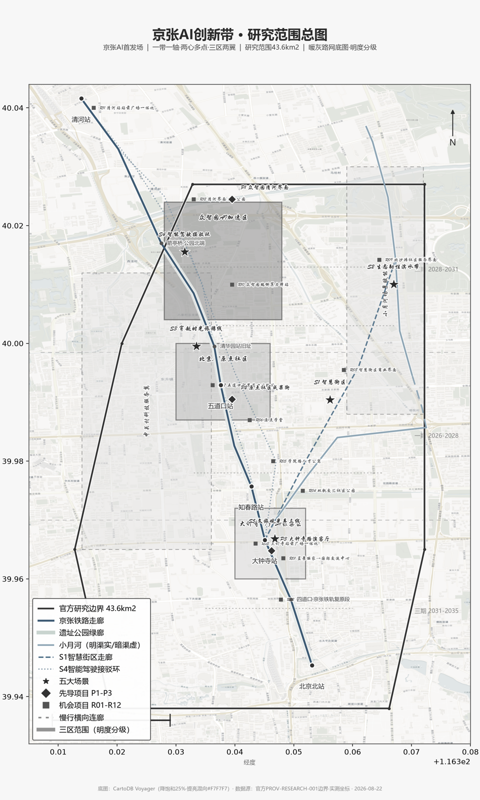

京张AI首发场：让AI原创在真实城市中被发现、被验证、被采用的城市级基础设施
以“京张AI首发场”为总体理念，本方案把百年京张铁路遗址的9公里线性空间转化为一套让AI原创在真实城市完成“原创发现—原型组队—工程验证—城市试用—产品采用—复制扩散”六程循环的城市级基础设施。空间上呼应已批复控规（媒体报道口径）"一带一轴、两心多点"结构，融合任务书“三区两翼”，形成“一带双轨·三核两翼·多节点·蓝绿环”空间语言：众智园为硬轨中枢（工程验证）、AI原点社区为双轨交汇转轨点（原点点火）、大钟寺为软轨落地（采用上新），中关村科技服务翼为双轨转换器、小月河场景赋能翼为软轨纵深。全部空间主张为概念建议，供专业团队深化。
京张AI首发场：让AI原创在真实城市中被发现、被验证、被采用的城市级基础设施
摘要
海淀已经拥有高密度的AI资源：2024年公开口径为AI核心产业规模2822亿元、AI企业1900余家，2026年口径为企业超2000家、核心产业规模超3500亿元，两者年份与统计口径不同，不混用【来源：北京市科委官网2025-07；北京市政府官网2026-04】。京张铁路遗址公园也已经形成真实的公共空间与活动基础：2025年运营方公开口径为60余场活动、430余万人次游客【来源：北京市政府官网2026-03】。
因此，百年京张AI创新带的核心问题，不是"再增加多少资源、设备和活动"，而是如何让分散的资源更容易被发现和协作，让原创成果跨过工程验证、城市试用与市场采用之间的断点，让公共空间同时产生创新价值与居民价值，并使AI试验可理解、可选择、可审计、可退出。
本方案提出"京张AI首发场"：它不是一场发布会，也不是"全球第一"的口号，而是一套让AI原创在真实城市中完成"原创发现—原型组队—工程验证—城市试用—产品采用—复制扩散"六程循环的城市级基础设施。每个项目同时经过"创新效能轨"与"公共价值轨"两轨评审；只有技术可靠且公众权利、人工责任与运营条件同时成立，才能进入下一阶段。
空间上，本方案呼应已批复控规"一带一轴、两心多点"的空间结构【媒体报道：人民网/北京日报 2026-08-12，正式批准文件以官方发布为准 [source:PROCESSED-FACT-PACK; provisional]】，与任务书"三区两翼"产业结构融合，形成"一带双轨·三核两翼·多节点·蓝绿环"空间语言：众智园为硬轨中枢（工程验证），AI原点社区为双轨交汇转轨点（原点点火），大钟寺为软轨落地（采用上新），中关村科技服务翼为双轨转换器，小月河场景赋能翼为软轨纵深。
方案不以新增巨构为先，而以"京张首发通行证"、三个真实项目的小范围接力、12个问题导向场景、3类测试场、6类人群画像与分阶段治理体系先行。其最终目标，是把海淀的资源密度转化为系统效能，把京张公园的公共流量转化为共同创造，把AI治理转化为可见、可执行、可复制的城市能力。
给沿线居民的三分钟白话版
这个方案想让京张铁路公园沿线变成什么？ 一句话：让新出来的AI产品先在咱们这条街上试用，好用再推广。这里不是要盖一片高楼，而是一条能走、能玩、能办事的9公里城市长街。
对居民来说会有什么变化？ 公园里会有可以打卡的"AI体验点"（沿线一站一点，像逛集市）；想带孩子遛弯、想安静坐会儿的地方都保留，不装AI也能正常逛；装了AI的设施必须配人工通道，不想用AI的人不会被排除在服务之外。
AI产品在这里怎么"首发"？ 分六步：原创想法→组队做成原型→在真实街区验证→给市民试用→被采纳→复制到别处。每一步都有评审，技术过不过关和公众能不能接受，两轨都要过，不行就暂停或退出，不会硬塞。
普通市民能参与什么？ 当试用官、当评审、提意见；贡献了想法或数据的，名字会记在"双轨勋章"和展示墙上。投诉和退出通道永远开放 来源。
命名体系与视觉系统方向
- 主名称：京张AI首发场（Jing-Zhang AI First Launch Field）
- 命名逻辑："首发"呼应百年京张铁路"中国自主创新第一线"的历史原点——1909年京张铁路是中国自主修建的第一条干线铁路，2026年这里是AI原创"被真实城市验证的第一现场"；"场"既是空间（9公里线性场地）也是机制（六程循环的场域）
- 英文名称：Jing-Zhang AI First Launch Field（缩写 JZ-FLF），用于国际传播与标识 标准
- 视觉系统方向：以"双轨×转轨"为核心符号——双轨线象征"创新效能轨×公共价值轨"两轨评审，转轨节点象征AI原创从实验室进入真实城市；主色取自铁路钢轨灰蓝与中关村创新橙，延展至导视、场景卡与活动视觉
- 可延展性：命名与视觉可随"首发场"机制复制扩散到其他城区（"XX首发场"），沉淀品牌资产
设计依据与资料清单
本方案以北京市规划和自然资源委员会海淀分局发布的《百年京张AI创新带城市设计国际方案征集资格预审公告》为第一依据 来源，并读取仓库整理的面向智能体任务书 来源、结构化任务包 来源、公开资料来源登记表 来源、处理资料包 [source:PROCESSED-FACT-PACK; provisional] 与临时边界来源 来源。设计判断采用"公告任务—机器可读数据—正文解释—图纸与HTML"的证据链，核心标准与深度约束清单如下：
- 核心标准：标准、标准
- 专业标准：标准、标准
- 用地标准：标准
- 深度项：深度、深度、深度
- 深度项：深度、深度、深度
- 深度项：深度、深度、深度
- 深度项：深度、深度、深度
- 深度项：深度、深度、深度
截至公开资料复核日期，官方精确 polygon、CAD 或 GIS 红线尚未公开：公告给出三层范围面积与文字四至（统筹研究范围北至北五环路、东至京藏高速、南至西直门外大街、西至万泉河路），但资格预审文件包需下载密码，仓库以 provisional_boundaries.geojson 提供临时粗略边界 来源。本方案因此使用 geometry/site_boundary.geojson#SITE-001 与 geometry/key_areas.geojson#PROV-KEY-001 等作为 provisional 边界，并在正文、HTML、来源、假设与自检中持续标注：临时边界只能用于生成、展示与讨论，不能作为官方红线、审批依据或精确面积依据；组织方数据缺口不阻断内容评分，官方数据发布后全部图层与指标必须重算 深度。
资料使用边界来自 data/source_registry.json 来源：formal 权威结论只能来自 usable_for_formal="yes" 的来源；背景资料仅支撑机制与叙事；provisional 资料仅支撑生成与讨论。本方案未使用非公开数据、个人隐私数据或未经授权素材；所有面积、比例、图层数量与里程均可从 geometry/*.geojson 与 metrics.json 复算 指标。

三层范围工作框架

公告确定三个工作层次 来源：统筹研究范围约43.6平方公里，总体设计范围约11.4平方公里，重点区域范围约368.4公顷。三层范围不是三张不同精度的同一张图，而是从"产业战略"到"具体空间动作"的连续证据链 深度：
| 层次 | 面积/公告 | 核心问题 | 本方案回答 | 数据锚点 |
|---|---|---|---|---|
| 统筹研究范围 | 43.6 km² | 如何组织世界级AI创新生态 | "首发场"六程循环；三区两翼协同回路；区域协同 | 空间数据 |
| 总体设计范围 | 11.4 km² | 产业、空间、交通、市政如何落图 | 一带双轨·三核两翼·多节点·蓝绿环；完整用地分区 | 空间数据 |
| 重点区域范围 | 368.4 ha | 三区如何达到详细设计深度 | 众智园验证、原点点火、大钟寺上新三原型 | 空间数据 |
三层范围的边界与面积证据为 指标、指标 与 指标。geometry/site_boundary.geojson#SITE-001 标记 geometry_role=provisional_constraint、official_boundary=false；官方 polygon 发布后全部面积指标与图纸必须重算 深度。

统筹研究范围产业与未来城市研究
问题诊断：强资源、强公园与弱连接、弱转化
海淀不缺AI资源，京张公园不缺公共生活，缺的是把资源密度转化为系统效能的能力。本方案诊断出五个核心问题 深度：
1. 资源可发现性不足：高校、平台、算力、资本、场景众多，但"可发现、可申请、可组合、可协作"的机制尚不清晰——资源的近距共存没有自动转化为协同。 2. 流量转化不足：公园有真实客流与AI体验，但能否转化为创新协作与长期公共价值尚不清晰。 3. 横向融合受限：南北轴线正在形成，但横向到达、机构开放与站点联系仍可能限制东西两侧居住、园区与高校的融合 深度。 4. 成本抬升风险：创新区成功可能抬高居住、生活与创业成本——国际经验显示线性公园周边存在绅士化风险（纽约高线公园距园80米内住宅溢价约35.3%，同行评审研究）[source:PROCESSED-FACT-PACK; provisional]。 5. 治理操作化不足：AI治理有战略目标，但城市试验的公共授权、审计、人工责任与退出机制仍需操作化。
这五个问题不是五个孤立短板，而是同一矛盾的五个侧面：资源密度很高，但系统效能尚未建立。因此，本方案的理念不是"再增加什么"，而是"如何连接并产生公共结果"。
总体理念：京张AI首发场
三大定位×五大功能对照表（任务书相关性显式映射）
| 定位 \ 功能 | AI全栈自主创新体系 | 世界级AI创新生态 | AI+场景赋能新范式 | 智能化AI活力城市 | AI治理全球话语权 |
|---|---|---|---|---|---|
| 百年京张文化带 | 自主工程→自主智能精神主线；众智园硬轨中枢承载全栈验证 | 京张文化叙事吸引全球开发者（S11文化解释Agent） | 文化场景数字化（S3穿越时光/遗址公园AI公共空间） | 文化体验+慢行蓝绿（"三道一绿"） | 百年工程自主叙事支撑治理话语权（UIC全球首创） |
| 都市AI生活体验带 | 端侧算力驿站等生活侧AI设施 | 人才留得住（青年生活支持网络U05） | 12场景卡覆盖生活体验（S01/S05/S06/S09） | AI+生活场景感知响应（S1智慧街区） | 生活数据治理示范（公共价值账本） |
| AI融合创新带 | 硬轨全栈自主链（算力-模型-中试-出海） | 软轨开源生态（原点社区/FlagOpen）+首发场六程循环 | T01-T03产业测试验证场+首发通行证 | 场景状态分区（OPEN/TRIAL/PAUSE/RETIRE） | 数据合规出境+AI治理公共授权（Toronto教训） |
三区两翼的空间落点：众智园=硬轨中枢（功能1/2/5）、AI原点社区=转轨点（功能2/3）、大钟寺=软轨落地（功能3/4）、中关村科技服务翼=双轨转换器（功能2/5）、小月河场景赋能翼=软轨纵深（功能3/4）。
"京张AI首发场"是一套让AI原创在真实城市中被发现、被理解、被验证、被使用、被复盘、被扩散的城市级基础设施。 深度
首发的四层含义：
| 层次 | 核心问题 | 证据结果 |
|---|---|---|
| 原创首发 | 原创来自哪里，贡献如何被承认 | 来源、授权、署名与开放边界 |
| 工程首发 | 技术是否可靠、可维护 | 性能、安全、故障、互操作与人工接管 |
| 城市首发 | 是否解决真实问题且公众愿意使用 | 任务完成、无障碍、投诉、人工替代与公共影响 |
| 市场/规则首发 | 是否具备采用、复制或标准化条件 | 采用/不采用结论、复制条件、规则与退出 |
双轨决策机制：每个项目同时经过"创新效能轨"（原创—工程可用—场景适配—采用—扩散）与"公共价值轨"（真实需要—知情选择—公平可达—人工兜底—申诉审计—可退出），两轨同时通过才可晋级。这使责任AI不再是末端风险章节，而成为首发场的核心生产能力。
精神内核：从"工程自主"到"全栈自主"的百年主线。京张铁路1905年开工、1909年建成，是中国第一条完全由中国人自行设计、施工并投入营运的干线铁路，詹天佑以"人字形"折返线路攻克陡坡，费用仅及外国人估价五分之一、提前两年完工 来源。此后百年，"自主"精神沿时间轴延续：1980年代中关村从电子一条街起步，2019年京张高铁成为全球首条时速350公里自动驾驶高铁（国际铁路联盟UIC评价为"杰出人工智能实施案例"）[source:PROCESSED-FACT-PACK; provisional]，2026年海淀推进AI全栈自主。"自主工程→自主创新→自主智能"是本方案的叙事底座，也是"首发场"的历史合法性来源。
IP体系：首选IP为"京张AI首发场"（机制与品牌合一，区别于"为百年京张铺第二条轨道"的空间转译）；备选IP为"道口"——五道口得名于京张铁路自西直门起的第五个铁路道口（1909年），历史真实可考，且"道口"天然包含交汇、通过、换挡、进入下一阶段的语义，能把百年铁路史与AI时代连接起来；英文可用 "Next Cross" 作为品牌化译法（借鉴国际片区品牌方法，正式使用前需母语审校）深度。
案例对标：前海、山手线与全球经验
本方案在30年周期上对标两组最直接的案例，并辅以全球创新区经验 来源：
| 案例 | 核心机制 | 可迁移内容 |
|---|---|---|
| 深圳南山·前海 | 一条街道GDP超一个市；"串珠成链"超级商圈沿一条轴串联多个消费节点 | "沿线消费链"范式：把大钟寺、五道口、众智园等节点串成可逛的消费与体验链 |
| 东京山手线 | 一站一主题、全站可打卡；JR官方做30站拟人化IP，线路本身成为IP资产 | "一站一主题=天然招商单元"：沿线节点主题化，每站配AI主题锚店（大模型体验馆/具身智能旗舰店/开源共创商店） |
| 伦敦国王十字 | 铁路遗产活化；UCL等大学为支柱；20年持续运营 | 大学策源+铁路遗产叙事+"以公带私"开发 |
| 新加坡纬壹科技城 | "研发—中试—孵化—产业化"全链条；政府专项重投入 | 全链条中试平台+研发税收抵免组合 |
| 多伦多Sidewalk | 数据治理失败致项目三年夭折（反例） | 数据边界前置、公共参与、退出机制 |
| 上海静安+模速空间 | 以"场景"为支点，不做参数竞赛 | 场景牵引技术落地；中心城区场景资源是AI原生企业最需的落地资源 |
综合研判：全球成功案例的共同规律是"大学策源、政府托举、场景牵引、制度赋能"。一带以AI原点社区为"大学策源+城市更新"典范、众智园为"政府重投入+全栈攻关"样板、小月河翼为"场景牵引+产业纵深"载体、科技服务翼为"全球配置+制度赋能"枢纽。"一站一主题+主力店串联"是可操作的招商范式：京张走廊本身就是"一条线+N个站"，把沿线节点主题化、每站配AI主题锚店，即形成"沿线的主题目录"——游客为某站主题而来，招商按"一站一业态集群"定向招。
区域创新协同
一带并非孤立创新带，而是海淀乃至北京AI版图的关键枢纽，呼应"三城一区"联动 来源：
- 中关村AI北纬社区（海淀北部西北旺镇，2025-07开放首期6万㎡）：北向创新策源与生态外溢，与京张形成南北双核。
- 中关村（海淀）具身智能创新产业园（东畔科创中心，西侧即小月河）：全国首个具身智能命名园区，为小月河翼提供产业纵深载体。
- 未来科学城、怀柔科学城、北京经开区：硬轨技术外溢、软轨场景共享、要素跨区流动。
- 京津冀：AI产业链协同与出海通道。
协同机制三条：硬轨技术外溢、软轨场景共享、要素跨区流动——一带定位为承上启下枢纽（北接北纬、南接出海通道、西联怀柔数据链、东联亦庄量产）。
总体设计范围城市更新与控规深度城市设计
空间结构：呼应控规、融合任务书
呼应已批复控规"一带一轴、两心多点"：依据北京市规划和自然资源委员会海淀分局《北京海淀区京张铁路遗址公园沿线（人工智能创新街区重点地区）HD00-1601等街区控制性详细规划（2024-2035年）》获批信息（人民网/北京日报报道，2026-08-12，媒体口径待核实）[source:PROCESSED-FACT-PACK; provisional]——控规明确了"一带一轴、两心多点"的空间结构：一带=京张铁路遗址公园产业创新带、一轴=中关村大街创新发展轴、两心=大钟寺中心+五道口中心、多点=知春路、四道口等重要空间节点（控规具体指标与红线位置尚未提供正式 CAD/GIS 数据；本方案以控规文本框架为依据）。本方案的空间语言与之严格呼应，不另起炉灶。
与任务书"三区两翼"融合：任务书以"三区两翼"为产业协同结构（众智园AI自主创新加速区、北京AI原点社区、大钟寺AI产业集聚区，及中关村科技服务翼、小月河场景赋能翼）来源。本方案将两套官方语言融合为"一带双轨·三核两翼·多节点·蓝绿环"：
- 一带：京张铁路遗址公园产业创新带（对应控规"一带"）
- 双轨：西轨=中关村大街创新发展轴（对应控规"一轴"，承载科技服务与产业策源）；东轨=遗址公园沿线（对应控规"一带"的公园体验与公共创新）空间数据
- 三核：众智园（硬轨中枢·工程验证）、AI原点社区（双轨交汇·转轨点）、大钟寺（软轨落地·采用上新）空间数据空间数据
- 两翼：中关村科技服务翼（双轨转换器）、小月河场景赋能翼（软轨纵深）空间数据
- 多节点：知春路、四道口等转轨节点（呼应控规"多点"）空间数据
- 蓝绿环：借力清河、小月河、南长河等滨水廊道 空间数据
制度双轨定位表（三区两翼×双轨映射，也是"首发场"六程循环的空间落点）：
| 片区 | 双轨定位 | 首发场角色 | 关键锚点 |
|---|---|---|---|
| 众智园 | 硬轨中枢 | 工程验证 | 学北园23.83万㎡、昌平线学知园站、腾讯新总部地下连通 [source:PROCESSED-FACT-PACK; provisional] |
| AI原点社区 | 双轨交汇·转轨点 | 原点点火 | 原点大厦、74%集聚度、1000+科学家/1.3万开发者 |
| 大钟寺 | 软轨落地 | 采用上新 | 抖音进驻方恒/中坤、1733山谷食集 |
| 中关村科技服务翼 | 双轨转换器 | 要素配置 | 中关村国际技术交易中心（2026-03运营） |
| 小月河场景赋能翼 | 软轨纵深 | 场景赋能 | 东畔科创中心（去化90%）、小月河生态走廊 |
命名口径：正式方案统一使用"众智园"（资格预审公告口径，约192.1公顷），产业锚点注明"中关村东升科技园·学北园"；中关村（海淀）具身智能创新产业园位于东畔科创中心（小月河翼），与学北园是两个不同载体 深度。
以上为概念层面的空间组织建议，具体边界、指标、线位以官方公布为准，本方案不做工程或控规结论 深度。
重点区域详细设计


三处重点区 polygon 为 provisional 边界 来源，以下结论均为方向性设计建议，官方边界发布后复核位置与规模 深度。
众智园AI自主创新加速区（硬轨中枢·工程验证）
- 定位：以"众智园"为锚点（资格预审公告口径，约192.1公顷；产业锚点=中关村东升科技园·学北园，总建面23.83万㎡，2026年7月开园，地铁昌平线学知园站A口直达步行3分钟，与腾讯新总部地下连通，3500㎡人工智能出海服务平台，国家自然科学基金委签约入驻），构建AI全栈自主创新体系与AI治理全球话语权 来源 空间数据。
- 首发场角色：工程验证——承担"原型组队→工程验证"阶段，提供全栈验证、互操作、安全红队与标准共创。
- 空间结构：围绕国家平台组织研发、算力、测试与标准治理功能；清河界面作为低碳公共客厅；组织对外交通与园区入口（呼应五环路区域一体化规划）。
- 建筑更新：建议以科研用地为主、商业配套支撑，风貌为"铁路棕灰+感应蓝"；保留/改造/新建具体方案待官方权属与控规数据 深度。
- AI场景：智能体沙盒、低碳算力站、AI治理议事厅作为可预约、可展示、可退出的公共测试节点；"双轨之门"朝圣地标（L-03）。
北京AI原点社区（双轨交汇·转轨点·原点点火）
- 定位：立足五道口核心区（约104.3公顷），全球AI人才创新创业"第一站" 来源 空间数据。
- 首发场角色：原点点火——承担"原创发现→原型与组队"阶段，是原创的入口与人才聚合地。
- 空间结构：缝合校区（清华/北大/中科院）、园区（原点大厦、清华科技园、智源研究院）与街区（成府路35号院、华清嘉园）；以原点大厦（2026年3月由东升大厦更名）为圆心辐射约3平方公里（"一镇三街"）。
- 创新生态数据（媒体报道口径）：AI产业集聚度74%；1000余位AI科学家、1.3万余名AI开发者、10万余名AI青年学子、400余家AI企业；通行驻留人数从改造前日均1200人次增至7000余人次 [source:PROCESSED-FACT-PACK; provisional]。
- 运营机制：原点学堂（50个开放式工位，80余位创业者，全生命周期服务，海淀夜校140个教学点之一）、原点bar日咖夜酒（促成跨领域合作）、共绩科技"一人工位→近50人团队"转化样板；"十分钟创新圈"（人才、资本、算力、数据、场景高效聚合）。
- 记忆点：五道口"道口变轨→原点转轨"——1909 年火车在京张铁路第五个平交道口（五道口）"变轨"通过，2026 年创新在五道口原点"转轨"（自主↔开源、技术↔商业）。注：詹天佑"人字形"折返线路位于青龙桥站（南口以北、八达岭段），不在五道口；本节"道口变轨"指列车在五道口平交道口切换线路的日常通行事实。华清嘉园走出王兴（美团）、宿华与程一笑（快手），被誉为"民间硅谷"。
- AI场景：开源发布厅、成果转化客厅、人才服务与居住支撑、智能体共创工坊；"原点·转轨"纪念碑（L-01）深度。
大钟寺AI产业集聚区（软轨落地·采用上新）
- 定位：依托抖音等龙头平台（进驻方恒广场、中坤广场），集聚智能体、内容消费、智能终端生态企业，领跑智能原生新业态 来源 空间数据。
- 首发场角色：采用上新——承担"产品采用→复制扩散"阶段，是商业验证与发布窗口。
- 空间结构：围绕大钟寺站组织四象限步行连通（呼应官方"优化轨道交通大钟寺站一体化方案"要求）；布局智能终端零售街、数据要素剧场、国际路演客厅；利用规划绿地承载公共体验。
- 商务场景：国际交流中心（原蓝景丽家城市更新项目，新增建筑规模13569㎡，预计拉动社会投资约48.8亿元，全市首个获批市级指标支持的城市更新项目）[source:PROCESSED-FACT-PACK; provisional]；1733山谷食集下沉广场（字节2023.12开放）。
- 青年社群：大钟寺AI青年社群（北下关街道+国家知识产权局商标局团委+北交大+央财+字节跳动）。
- AI场景：智能原生消费场（SC-09）、数据要素剧场、智能体商业化验证（T-03）。
- 实施风险：现状建筑权属与更新条件待官方数据 深度。
三区协同回路
"硬轨产技术（众智园验证）→原点聚要素（原点社区点火）→大钟寺促商业（采用上新）→两翼配资源（科技服务翼配置/小月河翼赋能）"形成自学习闭环 深度：首发通行证（JZ-01~06档案）把项目从原创到复制的全过程、证据与风险边界沉淀为统一档案，实现跨区接力。

用地、建筑规模与拆改留方案
用地布局：geometry/land_use.geojson 共29个地块 指标 完整覆盖场地、无缝隙无重叠 空间数据，按 标准 分类。科研用地承载硬轨自主创新链（众智园全栈验证），商业用地承载软轨场景与消费（大钟寺智能原生消费），居住与教育用地支撑人才生活底座（呼应"工作—生活—社交—学习"一体化城市空间系统），绿地与公共空间构成蓝绿环（绿地率 22.5% 指标）。
建筑规模：建筑基底 644,095 m² 指标，共87栋建筑 空间数据。容积率、建筑高度、总建筑规模三项官方未公开，metrics.json 中标为 unknown，待控规条件补齐后复算 深度。
拆改留分类：按"保留—改造—新建—待确认"四类框架组织 深度——保留高历史、教育、公共服务价值的对象（清华园站旧址、四道口铁轨复原段）；改造工业厂房、公园环境与社区服务界面（笑祖塔焊轨厂龙门吊景观化）；新建主轴、环线、站前广场与新型基础设施原型；涉及权属、控规或工程条件的对象列入待确认。具体地块拆改留结论待官方权属与控规数据 深度。官方更新约束（北京城市更新条例配套规定：更新单元拆除建筑比例不超过20%、核心区不超过10%）作为底线参照。
交通、轨道、市政与公共服务设施
道路微循环：17条道路（67.2 km 指标）组织双轨路网 空间数据。遗址公园已修通9条城市支路、设46个出入口，"三道一绿"（步行道、慢跑道、自行车道）慢行体系全线无断点贯通 [source:PROCESSED-FACT-PACK; provisional]。
轨道站点一体化：呼应官方点名——五道口、清华东路西口（AI原点社区）、大钟寺站（大钟寺AI产业集聚区）开展一体化设计；昌平线学知园站（众智园/学北园直通）、15号线北沙滩站（具身智能产业园直通）、未来19号线接驳。围绕站点组织"一站一主题"转轨节点与一体化换乘广场 深度。
AI治理交通的在地实证：四道口AI信控系统——高峰平均拥堵系数下降29.7%、日均通行量提升24.8%、整体车速提升约21%（13个路口全域空间数字化）【来源：北京市科委转载新华社+新京报2026-07，已复算】。这是"AI解决真实城市问题"的北京在地证据，直接支撑本方案的"AI原生"主张：AI不是展示品，而是让城市交通可感知、可响应的运行机制。
慢行与停车：沿遗址公园组织步行道、慢跑道、自行车道（全线无断点，骑行可直达回龙观自行车专用路）；建议补充非机动车停放与共享出行接驳，具体停车指标待官方交通数据 深度。
市政与新型基础设施：端侧算力驿站、分布式能源、环境感知节点与公共数据平台作为新型基础设施原型（概念建议），探索与"水电气热"传统市政设施的融合模式 深度；具体市政承载待官方管网数据。
公共服务设施：人才公寓（呼应"海青安居"措施：每年不少于2000套青年公寓）、创业服务（原点学堂模式）、教育医疗配套，支撑"以全球AI产业人才为核心客群"定位 深度。

蓝绿空间、公共空间与城市风貌
遗址公园AI公共空间（已建成做加法）
遗址公园建设进度（背景口径）：京张铁路遗址公园建设信息来自 PROCESSED-FACT-PACK 整理，含"2026-08-06 全面建成开放 / 全长约9公里 / 总用地约53公顷 / 9条支路 / 46个出入口 / 三道一绿慢行体系"等口径 [source:PROCESSED-FACT-PACK; provisional]——以上数字属背景口径，最终开放范围、支路数量、出入口数与"三道一绿"贯通性以现场实地核查与官方运营公告为准。物理缝合状态已具备（多个路口与立体化衔接已实施），但本方案在已建成基础上"做加法"，不破坏既有景观与文保，不新增大体量建筑 深度：
- 智慧基础设施：沿线设置AI导览、无障碍服务、环境感知节点，采用可拆合公共空间组件 空间数据
- 文化AI化：把百年铁路文化数字化交互呈现，只做信息增强，不取代实物遗存
- 全龄友好：AI辅助适老化/适儿化，呼应"一刻钟社区服务圈"
数字双轨缝合（东西缝合与南北贯通）
现状基础（背景口径，以媒体报道与现场核查为准）：公园已打通9条城市支路、设46个出入口、13号线部分路段入地、遗留高架变身高线绿地 [source:PROCESSED-FACT-PACK; provisional]。本方案在既有物理缝合之上，提出"数字双轨"缝合概念：东西缝合以数据与场景连接铁路东西两侧的居住区、园区与高校，让"缝合"从空间层面延展到功能与情感层面；南北贯通沿9公里主轴构建"转轨之旅"体验动线，使南北各片区在叙事与体验上贯通。⚠️ 仅做概念层建议，不涉道路线形、轨道线位、桥隧工程 深度。
叙事闭环：从"百年道口"到"智慧道口"
二期南段复原2.4公里1909年百年旧线铁轨、完整还原四道口历史节点、复原蒸汽车头与复古绿皮车厢、盘活笑祖塔焊轨厂旧址保留工业龙门吊；北段设置官方既有地标"京张之环"1909主题活动广场 [source:PROCESSED-FACT-PACK; provisional]。这与四道口AI信控（拥堵↓29.7%）形成"百年道口→智慧道口"的叙事闭环：同一个道口，1909年是火车的转轨点，2026年是AI感知城市交通的运行点——这正是"首发场"精神在空间上的锚定。
AI朝圣地标（4个）与荣誉展示体系
本节为任务书 agent.4 必答要求的直接回应（"不少于3个AI朝圣地标"，见 agent_taskbook.json required_agent_tasks），"朝圣地标"取"可打卡、可体验的荣誉地标"之义（借鉴东京山手线二次元打卡的"一站一点"逻辑），非宗教意象 来源。
| # | 朝圣地标 | 空间落位 | 象征/体验 |
|---|---|---|---|
| L-01 | "原点·转轨"纪念碑 | 五道口（AI原点社区核心）空间数据 | 百年第五道口→AI原点的"转轨"仪式感，可驻足、可签到 |
| L-02 | "人字形·双轨"纪念雕塑 | 遗址公园节点（青龙桥历史段/南口段再现）空间数据 | 致敬詹天佑1909年"人字形"工程智慧（青龙桥站段，转译为AI"双轨"）——若场地不在青龙桥，可改为"借鉴人字形精神的折返式步行节点"抽象表达 |
| L-03 | "硬轨·开源"双轨之门 | 众智园（学北园）南入口 空间数据 | 象征自主创新×开源协作两条轨道交汇 |
| L-04 | "京张之环"AI升级 | 北段自然休闲段 | 在官方既有地标"京张之环"1909广场基础上做AI数字增强 |
⚠️ 地标均为"概念建议/参考方案"，不涉工程可行性/桥隧/地下空间结论；不擅自改造企业建筑 深度。
荣誉展示体系（呼应"贡献者名称可持续保存"）："双轨勋章"体系对做出贡献的开发者、企业、市民授予"自主创新"或"开源协作"荣誉，呼应开源文化"贡献即荣誉"逻辑 来源；贡献者展示墙数字化展示贡献者名单；成果溯源标注来源与贡献者，呼应"来源可追溯、版权可追溯"。荣誉展示与L-01地标联动：签到即荣誉，地标成为荣誉的物理载体。
公共空间组件库与城市风貌
组件库（可拆合，随项目渐进落地）：基础组件（座椅/路灯/导视/无障碍设施，标准化可复用）、智慧组件（AI导览屏/环境感知/交互节点，AI原生可升级）、文化组件（铁轨/道口/人字形元素，双轨叙事可组合）、场景组件（具身实训/数字长卷/共创工坊，模块化可拆合）。
资金机制（概念建议）：借鉴高线公园"容积率转移筹资"、哈德逊城市广场"场站上盖"、宫下公园"屋顶公园商业"模式，探索公园公共空间可持续运营的资金来源——公共空间带动周边更新增值，增值反哺公共空间维护 深度。
城市风貌：城市气质为"自主、开放、包容、青春、创新、人文温度"——"让历史说话、让AI可见" 来源。建筑风貌建议"铁路棕灰+感应蓝"基调；遵循"小街区密路网"方法论（超宽马路与大体量街区会削弱城市活力），具体风貌控制待控规条件 深度。
AI 创新生态、人才画像与 AI+ 场景
产业与创新生态（硬轨全栈链+软轨开源生态）
硬轨全栈自主链（众智园承载）：算力层（国产算力芯片寒武纪/摩尔线程/昆仑芯+众智FlagOS软件生态）、模型层（智谱、百川、Kimi、面壁等大模型底座）、中试层（"智谷中试港"具身智能中试平台、高端医疗器械CDMO）、出海层（学北园3500㎡AI出海服务平台）、标准层（参与AI标准、评测、治理话语权）[source:PROCESSED-FACT-PACK; provisional]。
软轨开源协作生态（AI原点社区承载）：开源模型（Qwen、DeepSeek等高衍生量开源模型）、开源社区（智源FlagOpen）、开放算力（算力券/补贴）、开放数据（公共数据集共建），呼应2026政府工作报告"支持人工智能开源社区建设，促进开源生态繁荣"。
双轨转换器（中关村科技服务翼）：中关村国际技术交易中心（2026年3月运营，立足北京、辐射全国、面向全球）提供全球技术交易；百亿具身智能产业成长基金承接资本配置；智谷中试港提供中试与孵化；HICOOL国际化孵化提供国际人才"发现—评选—投资—落地"全链条服务。
八大要素机制：土地（存量更新+产业用地适配，仅概念建议）、空间（三区两翼+多节点转轨站+组件库）、产业（硬轨全栈+软轨场景双链）、资金（房租/算力补贴、百亿基金、技术交易中心，均为官方已发布政策）、人才（科学家/开发者/学子三级；海英计划、薪火共燃）、算力（国产算力+众智FlagOS）、数据（高质量数据集、数据合规出境）、场景（具身/AI+医疗/AI+影视实景实训）[source:PROCESSED-FACT-PACK; provisional]。
六类画像与客群经济承载力
六类人群画像 来源：
| 用户 | 画像 | 核心需求 | 呼应场景 |
|---|---|---|---|
| U1 全球AI开发者 | 开源贡献者、独立开发者、智能体创作者 | 开放算力/数据、共建社区、展示 | SC-07/T-01 |
| U2 AI创业者/科研人员 | 科学家、工程师、初创团队 | 中试、融资、场景落地、学术交流 | SC-08/原点社区 |
| U3 高校青年学子 | 大学生、研究生、跨学科人才 | 学习、实训、就业创业、生活 | SC-05/07 |
| U4 市民/家庭（含老人儿童） | 周边约45万居民（二期南段覆盖70个社区） | 休闲、健康、教育、无障碍体验 | SC-04/05/06 |
| U5 产业/投资/访客 | 龙头企业、投资机构、国际访客 | 对接、展示、招商、体验 | SC-02/03/09 |
| U6 本地劳动者与运营者 | 园区、公园与轨道运营人员、本地商户与一线服务者 | 可维护、可追责、培训与人工接管、就业与经营连续性 | 小月河翼/三片区运营单元 |
客群定位（三级梯度）：以全球AI产业人才为核心客群，以片区居民生活服务为基础保障，以全球开发者与访客的体验传播为放大器——三个层次分别对位产业支撑度、公共利益、国际传播 深度。
人群基数与消费承载力（数据来源已标注，推算仅为推理，不构成客流/消费承诺）：
- 产业人才：海淀AI领域39个急需紧缺岗位、总需求规模超1.4万人【官方：海淀区人社局《重点产业(人工智能)领域急需紧缺岗位目录(2025年版)》】；AI领域整体平均年薪48.14万元，顶级薪资集群80万元以上（芯片算法与设计优化工程师104万、大模型用户产品经理92万）【官方：同上】。高收入人才集聚为片区商业与生活消费提供承载体（推论：按人均可支配消费率推算，产业人才日常餐饮、社交、亲子消费构成片区商业基本盘）。
- 居民底座：遗址公园二期南段覆盖70个社区、45万居民【官方：央广网2026-08】。
- 访客体验：北京观光市场已验证消费力——仿古铛铛车票价50-268元/日均约4000人次；沃夫冈美食双层巴士680元/上座率约70%；微醺巴士168元/供不应求【来源：北京文旅市场公开报道，2026，已复算】。（推论：京张文旅观光线若对标上述产品分段定价，可支撑"体验消费+过夜停留"的复合客流结构，具体客流与收益需专项测算。）
- 原点社区运营实证：通行驻留人数从改造前日均1200人次增至7000余人次【官方：海淀区，2026】——人群承载力已被真实运营验证，这是本方案"人流转化"判断的最强证据。
12张AI原生场景卡（AI原生三特征：AI是运行机制/数据闭环/可进化）
| # | 场景卡 | 空间落点 | 服务对象 | 数据边界与人工复核 | 成熟度 |
|---|---|---|---|---|---|
| SC-01 | 具身智能实景实训场 | 小月河翼（两翼之一，非三重点区；见整体空间结构图） | 具身智能企业、开发者 | 真机作业数据回流模型；测试报告公开前复核 | S2 |
| SC-02 | AI+医疗健康应用走廊 | 小月河翼（智谷中试港CDMO平台） | 医疗机构、患者 | 医疗数据最小化、合规出境 | S2 |
| SC-03 | AI+影视内容生产线 | 小月河翼 | 内容企业、创作者 | AI生成内容标注来源 | S3 |
| SC-04 | 智慧道口体验站 | 五道口/四道口 空间数据 | 市民、访客 | 多模态交互；匿名客流数据 | S3 |
| SC-05 | 无障碍AI导览系统 | 遗址公园主轴 空间数据 | 老人、儿童、残障人士 | 实时环境感知；个人数据最小化 | S3 |
| SC-06 | 城市数据可视化长卷 | 沿线公共艺术屏 | 市民、访客 | 聚合数据，不含个人隐私 | S3 |
| SC-07 | 智能体共创工坊 | AI原点社区·原点学堂 空间数据 | 开发者、市民 | 沙盒隔离；测试日志公开前复核 | S3 |
| SC-08 | 人才·场景撮合平台 | AI原点社区 | 创业者、企业 | AI匹配；个人数据最小化 | S3 |
| SC-09 | 智能原生消费场 | 大钟寺 空间数据 | 消费者、品牌商家 | 消费即数据；脱敏聚合 | S3 |
| SC-10 | 智慧城市治理沙盘 | 众智园/科技服务翼 | 市民、治理者 | 城市运行AI仿真；可复核 | S3 |
| SC-11 | 智慧街区（AI感知+商业动线+智慧照明） | 大钟寺站—北沙滩 | 通勤者、居民、商户 | 人流密度聚合统计，不人脸识别 | S3 |
| SC-12 | 生态韧性滨水带（AI水位调节） | 小月河 | 居民、院校 | 环境数据（水位/雨量）；闸门人工确认 | S3 |
场景卡以"问题导向"而非"技术导向"设计：不是"看到AI能做什么"，而是回答"真实任务为何需要AI" 来源。所有场景标注成熟度分级（S1概念/S2测试/S3示范/S4运营），不把测试写成运营 深度。
AI场景放大图（S1-S5，来自最终提交图集）


3类AI产业测试验证场景
标准：真实验证AI产业能力，非展示性Demo，有明确测试目标与数据回流 来源。
- T-01 具身智能真机测试场（小月河翼）：人形机器人在真实城市环境作业验证（清洁/配送/巡检），对标工信部+国资委"2026年度人形机器人与具身智能实景实训专项行动"（2026年底前百个以上高价值场景、万台级落地）[source:PROCESSED-FACT-PACK; provisional]。
- T-02 AI+医疗器械中试验证：依托"智谷中试港"高端医疗器械CDMO中试平台。
- T-03 智能体商业化验证（大钟寺）：智能终端/智能体在真实消费场景的商业化验证，以复购、留存等真实数据回流模型。
⚠️ 以上均标注"测试验证"性质，不写成已批准运营 深度。
场景—空间—运营映射与"转轨之旅"公共体验路径
| 场景集群 | 所在空间 | 运营主体逻辑 | 数据回流 |
|---|---|---|---|
| 具身智能实训（SC-01/T-01） | 小月河翼·具身智能产业园 | 政府+企业+基金共建 | 真机作业数据 |
| 公共体验（SC-04/05/06） | 京张遗址公园主轴 | 公园运营+AI服务商 | 客流/交互数据 |
| 共创/撮合（SC-07/08） | AI原点社区 | 社区运营方+开发者社群 | 项目/人才数据 |
| 智能原生消费（SC-09/T-03） | 大钟寺 | 龙头平台+品牌商家 | 消费行为数据 |
| 治理沙盘（SC-10） | 众智园/科技服务翼 | 政府+智库 | 城市运行数据 |
"百年双轨·转轨之旅"体验动线：北（众智园/硬轨·全栈自主体验）→ 中（原点社区/转轨点·道口变轨到原点转轨）→ 南（大钟寺/软轨落地·智能原生消费），串联SC-01→SC-07→SC-09与L-01~L-04，让市民在行走中体验"从硬轨到软轨、从自主到开源"的AI城市。
更新项目清单、实施政策与分期计划


更新项目清单：15个更新项目 指标 空间数据，类型包括遗址公园公共空间升级、站前广场一体化、产业载体更新（蓝景丽家→国际交流中心）、人才公寓与社区服务界面改造；具体项目空间位置与依赖条件待官方权属数据 深度。
实施原则：以少量真实项目试跑六程机制，以证据决定扩张——"先机制后载体、先受控后开放、两轨同审、一项目一责任链" 深度。
四阶段实施路径：阶段0（机制校准与基线）→ 阶段1（三个真实项目试跑六程：原点点火—众智验证—大钟寺上新跨区接力）→ 阶段2（常态服务与场景开放）→ 阶段3（复制协作与区域外溢）。配套"首发通行证"七道闸门（G0-G6）与30日转化复盘门槛，每阶段决策以证据为准，不以时间表为准 深度。
政策闭环（可实施性证据链）：海淀区"十五五"规划纲要明确"南部地区通过城市更新盘活存量，打造'百年京张AI创新带'"【官方】→ 北京市城市更新政策激励工具箱（7大板块75项措施）→ 2026年第一批1321个城市更新项目 → 《深化建筑规模管理激励城市更新规定（试行）》1000万㎡市级弹性指标池（首年300万）→ 蓝景丽家项目（全市首个获批市级指标项目，新增建面13569㎡）——政策、项目、片区三者闭环，是可实施性维度（评分权重20%）的最强证据链 来源。
活动体系（"转轨节"IP引领）：
| IP | 周期 | 内容 | 运营机制 |
|---|---|---|---|
| 原点·转轨节（主IP） | 年度 | 开发者共创、路演、成果发布、"转轨"仪式 | 与开发者社区联动、赛事化 |
| 双轨开源大会 | 年度 | 开源模型/数据集发布、共建工作坊 | 联动智源等新型研发机构 |
| 具身智能实训营 | 季度 | 机器人实景实训、真机挑战赛 | 联动工信部实景实训专项行动 |
| 百年京张·文化嘉年华 | 常设 | 铁路文化+AI体验+全龄活动 | 公园运营+社区参与 |
常态化活动：AI自习室/夜校（呼应原点学堂、海淀夜校140个教学点）、开发者路演日/跨领域社交（呼应"原点bar日咖夜酒"）、AI City Walk体验线路（把"转轨之旅"常态化）、四季一峰会（春人才/夏项目/秋场景/冬成果）。
活动品牌矩阵与长期运营："原点·转轨节""双轨开源大会"与开发者社区共同构成"首发场"活动品牌矩阵，沉淀为年度活动日历与可长期运营的品牌资产；活动品牌统一使用"双轨×转轨"视觉系统，支撑国际传播、年度合作通道与"首发场"品牌复制扩散（"XX首发场"）来源。
开发者社区运营：载体为AI原点社区+线上协同；机制为开放算力/数据/场景申请、贡献激励（代码/数据/场景贡献→荣誉+资源）、多智能体协作、成果溯源；转化路径"开发者→创业者→企业"（复制共绩科技路径）来源。
AI场景开放运营：定期发布场景开放清单；分级开放（S2测试场申请制→S3示范运营制→S4商业化市场制）；数据回流反哺模型；场景申请与数据使用规则公开、不设指定供应商门槛。
国际传播与招引转化（四通道）：人才转化（海外开发者→参与活动→落地创业，借鉴HICOOL模式）；企业转化（全球项目→对接中关村国际技术交易中心/科技服务翼）；资本转化（对接百亿具身基金等已设立基金）；场景转化（全球AI方案→一带实景验证→规模化落地）。⚠️ 所有活动均为"设想/建议"，未写成已确定安排；未夸大政府承诺/活动效果 深度。
文化融合叙事（任务五）
三段式叙事：第一段（1909）百年京张·工程自主——詹天佑"人字形"，中国人第一次自主建造干线铁路；第二段（1980s—）中关村·创新探索——"闯"与"试"，从电子一条街到世界领先科技园区；第三段（2026）AI原点·全栈自主——从自主创新到开源协作的双轨制度，AI创新带 [source:PROCESSED-FACT-PACK; provisional]。
叙事锚点：五道口"百年道口变轨→今日原点转轨"。空间文化系统：五道口（转轨纪念碑+AI数字叙事L-01）、清华园站（站房展示+AI历史复原）、四道口（铁轨步道+其他文化节点）、众智园（硬轨/全栈成果展示L-03）、大钟寺（消费体验+内容生成SC-09）。"人字形"主题严格关联青龙桥站历史段（南口—八达岭间），L-02 在五道口—四道口段以抽象"折返式步行"形式表达，不直接署名"人字形"。
导视符号：文化标识系统与一带整体Logo系统分工明确——历史文化符号从"人字形"铁轨提取基础纹样，AI创新符号用双轨/节点/数据流符号，二者在"转轨节点"交汇形成体系化识别。⚠️ 历史事实均有信源、未歪曲；未用未授权肖像/商标/版权材料。
国际传播叙事：传播母题"Twin-Track／双轨"与"First Launch／首发"——从中国自主修建第一条铁路，到中国AI全栈自主与开源开放并行，"百年双轨、原创首发"讲述中国式创新现代化。
指标体系、面积复算与合规矩阵


核心指标设计含义：
- 场地 11,412,825 m² 指标：三层范围递进框架的统筹基础。
- 绿地率 22.5% 指标、公共空间率 5.04% 指标：以绿心与公共空间优先支撑"可感知AI城市"与创新交往——公共空间是"首发场"的试验与展示界面。
- 建筑基底 644,095 m² 指标：产业空间供给与更新载体规模。
- 三重点区 192.9/104.3/72.0 公顷 指标指标指标：三区两翼的空间锚点。
- 路网 67.2 km 指标：双轨路网与慢行体系连通性。
- 12场景卡 指标、12场景节点 指标、6画像 指标、3测试验证场景 指标、4地标 指标、15更新项目 指标：六任务硬性数量全覆盖。
指标方向：从"规模流量"转向"系统效能与公共结果"：除传统空间指标外，建议增设"首发效能类"指标（如原创项目来源可追溯率、工程验证通过率、城市试用公众复评率、采用/退出结论公开率）——基线一律"待建"，不编造目标值，随首发场机制运行逐步确立（概念建议）。
复算机制：所有面积/比例/里程指标从 geometry/*.geojson 程序复算并写入 metrics.json，spatial_review.py 校验 site_area_sqm、green_ratio、public_space_ratio 与几何一致（±1%）深度。容积率、建筑高度、总建筑规模三项官方未公布，标 unknown 待控规补齐 深度。
避坑即得分（风险意识显式表达）：借鉴国际失败案例教训——筑波科学城"重研究轻转化/睡城"、松岛国际城"技术空转/入住率不足50%"、多伦多Sidewalk"数据治理失败致项目夭折"、国内部分新城"有城无市/空置率高"——本方案以"两轨同审+人工兜底+可退出"机制、场景卡八要素（数据边界+人工复核）、运营主体前置回应这些风险，避免"技术乐观主义"与"重建设轻运营" 深度。
合规矩阵覆盖：compliance_matrix.json 映射公告任务与六任务；standard_matrix.json 映射5项标准；design_depth_matrix.json 映射15项深度项（本方案深度项覆盖见 深度 至 深度 全链）。

风险、版权与合规说明
- 资料合法性：仅使用公开信源；formal 结论仅来自
usable_for_formal="yes"来源 来源。 - 版权授权（登记范围）：AI 生成图片在
report/copyright_statement.md与sources.json记录生成工具；字体、图片、商标、底图使用前逐项清权，第三方素材见权利台账登记；无法证明权利的素材将被替换或移除。 - 隐私保护：所有场景卡设置数据边界与人工复核（SC-11智慧街区明确"不人脸识别、不采个体轨迹"；SC-12滨水带仅采环境数据）；不用个人隐私数据、不做过度监控。
- 官方批准承诺禁用：全部空间主张为"概念建议/参考方案"，不构成法定规划结论、不代替审批；不写容积率/建筑高度/拆改留/投资测算/开发时序/招商资金承诺；活动/招商/政策均表述为概念建议 深度。
- 临时边界：
provisional_constraint标注，官方数据发布后全部复算 深度。 - 待补资料：官方精确polygon、控规指标、权属、道路红线、文保控制线、现状底数普查 深度。
- 专业复核需求：Logo最终设计（"双轨/转轨点"方向待专业设计）、工程可行性、控规衔接需专业团队深化 深度。
附录A：方案证据与实施深化（案例矩阵、六类人群旅程、12张场景卡、3个首发项目与15项更新台账）
——直接信源、案例矩阵、六类人群旅程、12张场景卡、3个首发项目与15项更新台账
版本：V2.0 深化底稿 更新日期：2026-08-21 对应工作链：全球经验和海淀基础 → 核心问题 → 发展理念 → 创新生态 → 空间系统 → 人群与场景 → 实施治理。 使用边界：本文中的空间落点、项目、运营主体和时间闸门均为概念建议/参考方案，不替代正式规划，不构成政府审定、投资、招商、采购或实施承诺；具体权属、审批、预算和工程条件须由相关主体另行核实。
---
0. 本轮深化解决什么
初稿已经有“AI首发场六程循环”“双轨机制”“12个场景”和“四阶段实施”的骨架，但还缺少四种能让评委相信方案可转化的证据：
1. 外部证据：全球案例究竟证明了什么，又失败在哪里； 2. 用户证据：每类人如何从到达、使用、反馈走到转化或退出； 3. 场景证据：AI为什么必要、谁负责、用什么数据、什么情况下停； 4. 项目证据：先做哪3件事，15项更新如何形成空间和运营台账。
本文件建立统一编码：
P01—P06：六类核心人群；S01—S12：十二个AI场景；T01—T03：三类测试验证场；F01—F03：三个首发项目；U01—U15：十五项更新项目。
所有编号与配套文件《03_城市设计深化》一致，后续可直接转入 proposal.md、场景卡、图册、网页和 phasing.geojson。
---
1. 证据规则与直接信源
1.1 三类表述必须分开
| 类型 | 定义 | 写法 | 能否进入正式结论 |
|---|---|---|---|
| F：公开事实 | 官方公告、法律法规、项目运营机构或公共审计资料可直接支持 | “官方公告提出……”“公开资料显示……” | 可以，但保留日期、范围和限制 |
| I：研究判断 | 由多个事实推导出的专业判断 | “本研究判断……”“这意味着……” | 可以作为方案论证，不得伪装为官方结论 |
| P：概念建议 | 本方案提出的空间、场景、项目与治理动作 | “建议……”“可供专业团队深化……” | 可以作为参赛方案，不得写成已批准/已实施 |
1.2 直接信源登记表
以下为本轮核心信源。网页检索日期均为2026-08-21；页面数据只适用于其原始时间和地理范围。
A. 京张与海淀
| ID | 来源与链接 | 可支持内容 | 不可支持内容 |
|---|---|---|---|
| JZ01 | [Public Brief](https://haidian.open-city.ai/brief.html) | 三类定位、七个重点方向、概念设计边界、评分维度 | 精确红线、控制指标和实施承诺 |
| JZ02 | [国际方案征集资格预审公告](https://ghzrzyw.beijing.gov.cn/zhengwuxinxi/tzgg/hd/202605/t20260509_4643047.html) | 三层范围约面积、三区任务和设计深度 | 精确polygon、道路红线、地块权属 |
| JZ03 | [北京市规自委：京张公园规划解读](https://ghzrzyw.beijing.gov.cn/zhengwuxinxi/zxzt/wsghs/2021dej/d5j/202112/t20211216_2562970.html) | 9公里线性空间、沿线主体复杂、策划+规划、分期实施、城市合伙人 | 2026年现状完成度 |
| JZ04 | [北京市园林绿化局：一期开放](https://yllhj.beijing.gov.cn/zwgk/zwxx/202306/t20230626_3145467.shtml) | 一期范围、遗产保护、城市缝合和公共空间作用 | 二期建成状况 |
| JZ05 | [首都之窗：二期南北延展、东西缝合](https://www.beijing.gov.cn/ywdt/gzdt/202409/t20240907_3792248.html) | 9公里、9条支路、46个出入口、“三道一绿”等公开建设安排 | 未公开的具体工程图和实际使用效果 |
| JZ06 | [市规自委：沿线街区控规草案公示采信](https://ghzrzyw.beijing.gov.cn/chengxiangguihua/ghlgg/hd_ghlgg/202502/t20250207_4005553.html) | 已出现的道路、立交和公众意见议题 | 未公开的最终完整控规图件 |
| JZ07 | [海淀区：AI原点社区“点燃计划”](https://www.bjhd.gov.cn/ztzx/2025/aifuture/jq/aiyd/202505/t20250513_4769131.shtml) | 青年友好、创业/交往/成长友好、活动与社区运营方向 | 对具体企业和政策支持的长期保证 |
| JZ08 | [首都之窗：三区定位与原点社区发展](https://www.beijing.gov.cn/fuwu/lqfw/gggs/202604/t20260401_4571735.html) | 原点大厦、近校生态和公开发展方向 | 企业估值、未来项目的确定性承诺 |
B. AI、公共利益与行业边界
| ID | 来源与链接 | 本方案采用的原则 |
|---|---|---|
| RG01 | [《个人信息保护法》](https://www.cac.gov.cn/2021-08/20/c_1631050028355286.htm) | 最小必要、自动化决策透明与公平、拒绝仅由自动化决策作出重大影响决定、影响评估 |
| RG02 | [《生成式人工智能服务管理暂行办法》](https://www.cac.gov.cn/2023-07/13/c_1690898327029107.htm) | 面向公众的生成式AI服务须按适用范围落实内容、投诉、备案/安全等义务；本方案不作个案法律判断 |
| RG03 | [《人工智能生成合成内容标识办法》](https://www.cac.gov.cn/2025-03/14/c_1743654684782215.htm) | 对适用范围内的生成内容设置显式/隐式标识，不把生成内容冒充现场事实 |
| RG04 | [《无障碍环境建设法》](https://www.gov.cn/yaowen/liebiao/202306/content_6888910.htm) | 无障碍设施、信息与服务；特定公共服务场所保留现场指导和人工办理 |
| RG05 | [国务院关于解决老年人运用智能技术困难的实施方案](https://www.gov.cn/zhengce/content/2020-11/24/content_5563804.htm) | 传统服务与智能服务并行；不强制扫码、不取消人工通道 |
| RG06 | [《北京市自动驾驶汽车条例》](https://www.beijing.gov.cn/zhengce/dfxfg/202501/t20250103_3980149.html) | 道路测试、示范应用和应用试点须依程序开展；方案中的机器人/自动驾驶仅为受控概念试验 |
| RG07 | [国家药监局：AI医用软件分类界定指导原则](http://english.nmpa.gov.cn/2021-07/08/c_660267.htm) | 具有医疗目的的软件可能进入医疗器械监管；公共健康助手不得冒充诊断或未审查医疗产品 |
C. 全球案例
| ID | 案例直接来源 |
|---|---|
| CS01 | [JTC one-north](https://www.jtc.gov.sg/find-land/jtc-key-estates/one-north)、[LaunchPad与Kampong AI更新计划](https://www.jtc.gov.sg/about-jtc/news-and-stories/press-releases/jtc-unveils-refreshed-masterplan-for-launchpad) |
| CS02 | [Knowledge Quarter五年战略](https://www.knowledgequarter.london/36071-2/)、[公共空间Charrette](https://www.knowledgequarter.london/knowledge-quarter-report-of-the-public-realm-charrette/) |
| CS03 | [Cambridge Kendall Square最终规划](https://www.cambridgema.gov/-/media/files/cdd/planning/studies/k2c2/finalreports/k2c2_kendall_final_report.pdf)、[规划建议摘要](https://www.cambridgema.gov/-/media/files/cdd/planning/studies/k2c2/kendall/k2c2_kendall_20120627_recs_rev.pdf) |
| CS04 | [Mila负责任AI](https://mila.quebec/en/research/strategic-priorities/responsible-ai)、[Mila影响报告](https://mila.quebec/en/about/impact-reports/impact-report-2024-2025) |
| CS05 | [Barcelona市政府22@包容性更新](https://ajuntament.barcelona.cat/ecologiaurbana/mpgm22@/en/) |
| CS06 | [法国审计机关：Paris-Saclay项目与治理审查](https://program-evaluation.ccomptes.fr/sites/default/files/2026-04/IDR2025-75.pdf) |
| CS07 | [Atlanta BeltLine人口与投资数据工具](https://beltline.org/about-us/peoplesproject/data-explorer/) |
| CS08 | [Waterfront Toronto终止协议及数字治理原则](https://www.waterfrontoronto.ca/sites/default/files/documents/plan-development-agreement-amendments-and-sidewalk-labs--termination-notice---termination-effective-date---may-17-2020.pdf) |
---
2. 八个全球案例的可转译矩阵
| 案例 | 形成创新的关键机制 | 空间与运营做法 | 可验证结果/制度 | 负面或修正证据 | 京张可转译 | 京张不能照搬 |
|---|---|---|---|---|---|---|
| 新加坡one-north | 公共开发运营者长期统筹土地、产业、社区和公共空间 | LaunchPad提供小单元、共享设施、社区经理、市场连接；Kampong AI将工作与居住组合 | JTC公开资料显示LaunchPad已覆盖7个街区、支持大量初创，并继续补生活、步行和全球网络 [CS01] | 10年后仍需补住宅、遮雨步行、运动餐饮和社群，说明产业密度不会自动形成城市生活 | 建立能跨园区调度空间、测试和伙伴的“首发运营者”；短租、共享、可扩缩 | 不能假设海淀存在一个能像JTC一样控制土地和审批的单一机构 |
| 伦敦Knowledge Quarter | 不以开发新城为前提，用联盟组织既有大学、文化、科研、企业和社区 | 会员治理、专题网络、公共空间审计与街道Charrette | 新战略把协作、投资、场所和包容纳入同一组织议程 [CS02] | 联盟本身不掌握所有土地与实施权，项目仍依赖地方政府和产权方 | 京张先建立“关系基础设施”：资源目录、人工连接者、共享议程和固定复盘 | 不能只成立松散联盟或挂Logo；必须明确项目实施者和责任人 |
| Kendall Square | MIT锚定+高密度企业+城市规划将创新、住房、公共空间和社区投资绑定 | 规划提出连通公共空间、活跃首层、住房与可负担创新空间 | 官方建议曾提出非住宅面积中预留初创创新空间、灵活短租和年度报告 [CS03] | 官方规划明确高房价、实验室租金和高端开发会挤出初创和中等收入住房 | 把可负担原型空间、住房/生活服务和年度使用报告视为创新基础设施 | 不能只复制高密实验楼和高端人才公寓 |
| Mila/蒙特利尔 | 研究、人才、产业转化与负责任AI共同构成竞争力 | 责任AI研究、影响评估、治理咨询、公共能力建设 | 治理能力被做成研究、咨询、开源与国际合作产品 [CS04] | 宣言和研究原则不等于具体场景合规，仍需逐项目责任和退出 | 将T01可信验证和公共价值闸门作为众智园核心产品 | 不能用论坛、宣言或“AI向善”替代影响评估和事故处置 |
| Barcelona 22@ | 旧工业区产业更新、混合用途和长期适应性治理 | 保留有价值的社会/产业肌理，补公共空间、可负担住房和多元活动 | 2022后的修正规划明确更包容、可持续、保障经济多样性 [CS05] | 17年后启动再参与和规划修正，本身说明早期产业升级未充分解决社会与住房问题 | 采用“保留—开放—复合—试用”而非统一拆建；设置居民/小商户/早期团队指标 | 不能把“混合功能”理解为高端办公+酒店+商业的组合 |
| Paris-Saclay | 国家级大学科研资源、公共开发机构和重大交通投资 | 科研、经济、城市开发与交通并行 | 公共机构承担开发和协调，形成多层合作体系 | 2025审计仍指出伙伴协调、内部跟踪和周边差异问题 [CS06] | 三区两翼必须有同一项目台账、跨区接力日志和共同指标 | 不能把机构搬近、建园区和办活动当作生态已形成 |
| Atlanta BeltLine | 线性基础设施同时承担连接、公园、社区和经济发展 | 用人口、收入、住房与投资数据识别易受绅士化影响的区域 | 官方数据工具把可负担住房、就业和社区稳定纳入跟踪 [CS07] | 公园和投资可能提高成本、重新分配收益；需持续稳定社区 | 京张指标必须包括居民使用、传统服务、低成本空间和群体差异 | 不能只用客流、活动数、媒体曝光和周边投资证明公共价值 |
| Toronto Quayside | 试图把数字平台、数据和城市开发结合 | 设数字战略咨询组、数据治理原则和公共利益角色 | 协议已明确“人优先”、隐私、开放标准与公共信心的重要性 [CS08] | 项目终止；治理边界、数据必要性/比例性、执行和民主授权成为核心争议 | 数据治理应先于传感器与数字孪生；重大数字功能须有公共授权和可执行约束 | 不能让技术供应商同时定义问题、数据规则、评估和实施范围 |
2.1 跨案例得到的七条设计原则
1. 资源密度≠生态效率：必须有连接者、项目流程和共同台账； 2. 验证能力是空间产品：测试方法、失败边界和人工接管比展厅更有价值； 3. 可负担空间是创新基础设施：短租、共享和低门槛比高端办公更能保护原创； 4. 公共空间收益必须跟踪分配：客流和增值不能替代居民、小商户和弱势群体结果； 5. 治理先于技术部署：先确认问题、权利、责任、退出，再接入数据和设备； 6. 创新区要有日常生活：餐饮、托育、运动、夜间交通和安静空间不是配角； 7. 空间与机制都应可迭代：先做可逆原型，以证据决定扩张或撤除。
---
3. 六类人群与完整旅程
3.1 人群定义
| ID | 核心人群 | 主要任务 | 不应被合并掉的权益 | 首要空间 |
|---|---|---|---|---|
| P01 | 原创研究者与高校教师 | 让研究成果被理解、组队、验证和转化 | 来源、署名、学术独立、商业秘密、家庭/国际支持 | 原点社区、众智园 |
| P02 | 青年开发者、学生与初创团队 | 低成本找到问题、资源、原型空间和第一批机会 | 非名校/非成熟团队公平准入、可负担、夜间与社群生活 | 原点社区、大学线入口 |
| P03 | 成长企业、行业需求方与专业投资/服务伙伴 | 发布真实需求、发现可信技术、验证并作采用决定 | 商业秘密、公平招募、不被单一龙头垄断 | 众智园、大钟寺、科技服务翼 |
| P04 | 公共服务、园区、公园与城市运营者 | 在可维护、可追责前提下引入AI改善服务 | 一线劳动、培训、人工接管、夜间责任和停机 | 小月河翼、三片区运营单元 |
| P05 | 沿线居民、家庭、儿童与本地商户/服务劳动者 | 安全通行、生活休闲、经营服务并自愿参与试验 | 不被强制试验、安静、可负担、儿童自由活动、就业与经营连续性 | 公园、社区接口、大钟寺 |
| P06 | 老年人、残障者、数字困难者及国内外访客 | 连续到达、理解信息、获得等价服务和人工帮助 | 不强制扫码、多语言/多模态、物理无障碍、申诉和隐私 | 轨道站、公园、公共服务点 |
3.2 P01 原创研究者旅程
| 阶段 | 真实任务/摩擦 | 空间触点 | 首发服务 | 可衡量结果 | 权利与失败边界 |
|---|---|---|---|---|---|
| 发现 | 不知研究适合找企业、转化机构还是公共场景 | U01原点之窗 | 人工+数字原创入口 | 首次响应时间 | 未授权成果不得进入公开模型 |
| 解释 | 论文能力难被产品和公共部门理解 | U02 PoC门诊 | 问题—能力—限制说明 | 对方理解度、修改轮次 | 不承诺尚未验证的能力 |
| 组队 | 缺工程、行业、法务伙伴 | U03共享原型网络 | 合作匹配与贡献协议 | 有效匹配率 | 保留来源、署名与退出权 |
| 验证 | 实验室结果可能在真实条件失效 | U06/U07 | T01/T02受控验证 | 失效、接管、复测记录 | 失败不自动损害学术声誉 |
| 试用 | 不熟悉公众沟通与现场责任 | U14公共试用节点 | 自愿用户、状态牌、投诉 | 任务完成和投诉 | 场景方承担最终责任 |
| 采用 | 展示不等于采用 | U12真实世界剧场 | 采用/迭代/不采用评审 | 90日有效下一步 | 不暗示政府采购或融资 |
| 复盘 | 负面结果容易被隐藏 | U15公共复盘系统 | 脱敏失败档案 | 复盘完成率 | 商业秘密与公共知情分层 |
3.3 P02 青年开发者与初创旅程
| 阶段 | 真实任务/摩擦 | 空间触点 | 首发服务 | 可衡量结果 | 权利与失败边界 |
|---|---|---|---|---|---|
| 找问题 | 跟风做Demo，缺真实需求 | U01/U12 | 城市/企业问题榜 | 问题被认领并进入验证比例 | 问题方必须投入人员与数据责任 |
| 找资源 | 资源很多但入口和价格不透明 | U02/U06 | S04资源导航+人工顾问 | 找到可用资源时间 | 排序不得由付费或关系决定 |
| 做原型 | 长租、高押金、设备成本高 | U03 | 短租原型室与共享工具 | 单位原型成本、使用者结构 | 保留非成熟团队配额/时段 |
| 过闸门 | 不懂隐私、安全、行业监管 | U02 | 通行证影响评估门诊 | 一次形成测试计划比例 | 合规服务不能成为新的高价门槛 |
| 找用户 | 难接触真实用户 | U12/U14 | 自愿首批用户团 | 有效反馈率 | 不诱导、不过度采集、不跨场景画像 |
| 找下一步 | 活动之后无人跟进 | U15 | 90日转介和复盘 | 有效下一步率 | 明确停止也是合格结果 |
| 留下来 | 生活成本和夜间服务影响持续创业 | U05 | 青年生活支持网络 | 夜间到达、服务使用、留存 | 不把“人才友好”等同高端公寓 |
3.4 P03 企业、需求方和专业伙伴旅程
| 阶段 | 真实任务/摩擦 | 空间触点 | 首发服务 | 可衡量结果 | 权利与失败边界 |
|---|---|---|---|---|---|
| 发布需求 | 问题敏感、描述不清 | U12任务厅 | 脱敏问题说明与评价标准 | 可被多团队理解的任务数 | 不得为单一龙头定向排他 |
| 发现方案 | Demo证据口径不一 | U06 | 通行证证据档案 | 筛选时间、误选率 | 平台不为技术能力背书 |
| 联合验证 | 数据、现场和IP复杂 | U06/U07 | 第三方可复核测试 | 复测一致性 | 知识产权和测试独立性前置 |
| 用户研究 | 难找到合适、知情的首批用户 | U12 | 分层招募和可达性测试 | 样本覆盖与退出率 | 不将公园客流自动当样本 |
| 采用决策 | 采购、投资、合作证据不同 | U13科技服务接口 | 分类尽调与采用门 | 决策周期 | 不暗示政策、采购或投资承诺 |
| 复制 | 一个现场的成功难外推 | U15 | 复制条件包 | 外部复用后偏差 | 超出人群、版本、地域须重测 |
3.5 P04 公共服务与运营者旅程
| 阶段 | 真实任务/摩擦 | 空间触点 | 首发服务 | 可衡量结果 | 权利与失败边界 |
|---|---|---|---|---|---|
| 定义问题 | 容易从“采购设备”开始 | U09/U14 | G0非AI比较工作坊 | 非AI方案被采纳比例 | AI不是默认答案 |
| 准入 | 医疗、教育、法律等责任复杂 | U06 | T03公共服务沙盒 | 风险分级完整率 | 不能让AI承担最终专业责任 |
| 培训 | 新系统增加一线后台和劳动 | U10 | 统一工单与接管演练 | 培训通过、额外工时 | 不把责任转嫁给一线劳动者 |
| 运行 | 故障、投诉和夜间无人负责 | U14/U15 | 状态公开和人工服务 | 修复时间、人工可用率 | 无最终责任人不得上线 |
| 评估 | 设备数替代真实效果 | U15 | 公共价值仪表板 | 任务完成、公平差距 | 同时报成功、失败、退出 |
| 退场 | 失败设备长期占地、数据不删 | U15 | G6撤除与删除审计 | 退出执行率 | 未清理完不得结项 |
3.6 P05 居民、家庭和本地劳动者旅程
| 阶段 | 真实任务/摩擦 | 空间触点 | 首发服务 | 可衡量结果 | 权利与失败边界 |
|---|---|---|---|---|---|
| 日常到达 | 过街、照明、座椅、停车可能比AI更急 | U04/U11/U14 | 基础设施优先清单 | 绕行、冲突、夜间安全 | 不以屏幕代替物理改善 |
| 提问题 | 意见常在方案完成后才征集 | U15 | 线下议事+AI辅助整理 | 回应闭环率 | AI不得自动决定优先级 |
| 选择参与 | 不愿成为默认试验对象 | U14 | 分级告知、自愿加入 | 能说清AI/数据/责任比例 | 拒绝后基础服务不受损 |
| 使用 | 希望简单、可靠、有人负责 | 各场景节点 | AI+人工双通道 | 真实任务完成率 | 不强制注册或连续追踪 |
| 申诉 | 不知道向谁投诉 | U15 | 电话、纸面、现场、数字渠道 | 响应和修复时长 | 二维码不得成为唯一渠道 |
| 共享收益 | 看不到创新是否改善生活 | U05/U15 | 居民使用、商户、服务指标 | 群体结果变化 | 监测挤出、噪声和空间过载 |
3.7 P06 包容性使用者与访客旅程
| 阶段 | 真实任务/摩擦 | 空间触点 | 首发服务 | 可衡量结果 | 权利与失败边界 |
|---|---|---|---|---|---|
| 行前 | 不熟悉区域、语言和无障碍情况 | 线上+U04/U11 | 多语言/多模态路线 | 信息准确率 | 明确数据更新时间 |
| 到站 | 电梯、高差、非机动车和四象限造成绕行 | U04/U11 | S01接驳助手+实体导向 | 完整到达率、绕行时间 | 数字导航不替代物理无障碍 |
| 理解 | 专业术语、小字、单一语言排斥 | U01/U15 | 简明、语音、文字、触觉、人工 | 10分钟理解度 | 不默认采集身份/生物特征 |
| 使用 | 强制扫码或无人服务 | 各服务点 | 无注册模式、一键人工 | 独立完成率、转人工时间 | 保留等价传统服务 [RG04][RG05] |
| 异常 | 设备失效不知求助 | U14/U15 | 可见服务人和应急按钮 | 响应时间 | 人工通道必须真实值守 |
| 反馈 | 在线长问卷不可达 | U15 | 口述、纸面、代理提交 | 不同能力人群覆盖 | 使用能力不决定意见价值 |
---
4. 十二张完整AI场景卡
4.1 成熟度统一口径
| 等级 | 含义 |
|---|---|
| M0 | 仅有问题假设，尚无责任主体/合法数据/场地 |
| M1 | 已完成需求与规则研究，可做离线或流程原型 |
| M2 | 可在受控场做技术和人工流程验证 |
| M3 | 经责任主体批准后，可做自愿、限时、限地小规模试用 |
| M4 | 有稳定效果、运维和退出证据后，才可常态服务 |
当前成熟度是本方案的审慎判断，不代表主管部门或场地主体批准。
S01 无障碍站园接驳助手
| 字段 | 深化内容 |
|---|---|
| 问题/用户 | P05/P06从五道口、清华东路西口、大钟寺等站点到公园、园区和社区时，可能遇到高差、电梯状态、绕行和非机动车冲突；需用现场数据确认。 |
| 非AI基线 | 连续坡道、平整路面、实体导向、照明、座椅和人工服务先行。 |
| AI必要性 | 只用于把用户主动选择的能力/偏好与实时设施状态组合，生成可解释替代路线。 |
| 空间/项目 | U04、U11、U14；首发可在F01服务范围做离线原型。 |
| 当前成熟度 | M1；设施状态责任源未建立前不得公开实时导航。 |
| 数据与同意 | 公开路网、经核验设施状态；无需人脸，不默认保存精确轨迹。 |
| 人工责任 | 站点/公园运营确认设施状态；异常路线转人工。 |
| 90日MVP | 完成一个站点—公园—服务点的无障碍链审计、静态多路径和20名分层用户测试。 |
| KPI | 完整到达率、错误路线率、绕行时间、人工求助成功率。 |
| 停止条件 | 状态数据持续不准、发生安全误导或无人维护时降级为静态信息。 |
| 依据 | JZ02、RG04、RG05。 |
S02 校园—园区开放边界导航
| 字段 | 深化内容 |
|---|---|
| 问题/用户 | P01/P02/P06“看得见资源但不知道能否进入、何时开放、如何预约”。 |
| 非AI基线 | 各机构先形成全天、定时、预约、受控、封闭五级开放清单和实体标识。 |
| AI必要性 | 用自然语言解释跨机构规则，提供合法入口和替代空间；不连接敏感门禁。 |
| 空间/项目 | U01、U02、U04；F01核心场景。 |
| 当前成熟度 | M1—M2，取决于机构是否授权并维护数据。 |
| 数据与同意 | 机构主动发布的服务目录、时段和预约状态；无个人画像。 |
| 人工责任 | 各机构对数据负责，带级平台只聚合；过期自动降级。 |
| 90日MVP | 选择5—10个真实开放资源，制作中英双语目录和一次到达测试。 |
| KPI | 一次到达成功率、信息过期率、预约完成率、纠错时长。 |
| 停止条件 | 机构未授权、信息失真或涉及敏感区域。 |
| 依据 | JZ03、JZ07、CS02。 |
S03 原创与开源协作Agent
| 字段 | 深化内容 |
|---|---|
| 问题/用户 | P01/P02的论文、代码、行业需求语言不互通，贡献来源易丢失。 |
| 非AI基线 | 原创登记、许可、署名、保密和冲突解决规则先建立。 |
| AI必要性 | 在授权材料内做摘要、能力翻译和伙伴匹配；输出必须人工确认。 |
| 空间/项目 | U01—U03；F01。 |
| 当前成熟度 | M1，可先用公开/主动提交材料做小样本离线验证。 |
| 数据与同意 | 分公开、合作可见、保密三级；不得将未公开资料二次训练。 |
| 人工责任 | 技术转移/IP服务人复核；匹配不构成能力和投资背书。 |
| 90日MVP | 10个自愿项目、每个形成一页能力边界和两次人工匹配。 |
| KPI | 有效匹配率、来源纠错、合作进入下一步比例、弱连接团队获得机会比例。 |
| 停止条件 | 未授权披露、错误归因、抄袭或贡献纠纷无法处理。 |
| 依据 | JZ07、CS01、CS02。 |
S04 算力—数据—模型—测试资源导航
| 字段 | 深化内容 |
|---|---|
| 问题/用户 | P01—P03难以比较资源的用途、价格、隐私、时延、排队和知识产权条件。 |
| 非AI基线 | 提供方公开有效期、准入、费用类别、使用边界和人工联系人。 |
| AI必要性 | 根据任务约束比较多方案并解释推荐，不自动签约、采购或承诺补贴。 |
| 空间/项目 | U02、U06、U13；F01/F02。 |
| 当前成熟度 | M1；资源清单建立后可至M2。 |
| 数据与同意 | 只用经授权目录；项目材料分级；排序披露商业关系。 |
| 人工责任 | 资源顾问确认条款；重大费用/敏感数据必须人工决定。 |
| 90日MVP | 20项公开资源、3种典型任务、人工盲测推荐准确性。 |
| KPI | 找资源时间、有效申请率、成本偏差、排序投诉。 |
| 停止条件 | 目录过期、付费操纵排序或推荐不可解释。 |
| 依据 | JZ02、CS01、CS06。 |
S05 低速机器人配送与巡检协作
| 字段 | 深化内容 |
|---|---|
| 问题/用户 | P03/P04重复配送巡检存在效率问题，但人机混行、儿童、轮椅、天气和岗位影响风险高。 |
| 非AI基线 | 先优化物流时段、人工流程、储物维修和道路秩序。 |
| AI必要性 | 只在受控路线做感知和低速决策，复杂情况人工接管。 |
| 空间/项目 | U07；F02；通过T02后才可能进入U09/U14限时试用。 |
| 当前成熟度 | M1—M2；开放公园不是首测场。 |
| 数据与同意 | 尽量端侧处理，默认模糊人脸/车牌；保存事故所需最小日志。 |
| 人工责任 | 设备方、场地方、任务方共同签责任矩阵，现场安全员和远程接管并行。 |
| 90日MVP | 封闭路线完成儿童假体、轮椅、宠物、雨夜、失联、制动与接管测试。 |
| KPI | 近失、接管率、任务完成、占道、噪声、能源和一线工时变化。 |
| 停止条件 | 碰撞/近失超阈值、通信/接管失败、占消防或无障碍通道。 |
| 依据 | RG06、CS01。 |
S06 公共健康导航与预问诊辅助
| 字段 | 深化内容 |
|---|---|
| 问题/用户 | P04—P06不清楚机构类型、材料和紧急渠道；AI不能替代诊断。 |
| 非AI基线 | 公开健康信息、热线、线下导诊和无障碍路径。 |
| AI必要性 | 仅做服务导航、材料清单、科普和危险提示；不作诊断、处方或排队优先级。 |
| 空间/项目 | U09/U10；进入T03前不公开服务。 |
| 当前成熟度 | M0—M1；必须先有具备资质的责任机构。 |
| 数据与同意 | 健康信息敏感；主动输入、明确同意、会话后删除/端侧优先。 |
| 人工责任 | 医疗/公卫机构定义内容和责任，不确定即转人工/紧急渠道。 |
| 90日MVP | 仅做影子模式：用公开问答和专业人员模拟评估分流错误。 |
| KPI | 危险漏报/误报、正确转接、人工响应、隐私投诉。 |
| 停止条件 | 危险误导、责任机构退出、知识更新失效或隐私事件。 |
| 依据 | RG01、RG07。 |
S07 AI开放课堂与学习助理
| 字段 | 深化内容 |
|---|---|
| 问题/用户 | P01/P02/P05/P06需要跨学科学习，但有错误、依赖、偏见、诚信和未成年人数据风险。 |
| 非AI基线 | 教师、同伴、实体课程、无屏幕活动为主体。 |
| AI必要性 | 解释、练习、多语言和无障碍辅助；来源与不确定性可见。 |
| 空间/项目 | U01/U05/U09；大学线和公园只承载低风险版本。 |
| 当前成熟度 | M1。 |
| 数据与同意 | 未成年人最小注册，不做人脸情绪识别，不作商业广告画像。 |
| 人工责任 | 教师/活动组织者负责课程和评价，AI不单独评分。 |
| 90日MVP | 2次开放课堂，含无设备组与AI辅助组，比较理解和教师工时。 |
| KPI | 学习目标、错误纠正、可达性、过度依赖、教师工时。 |
| 停止条件 | 有害/错误内容不可控、诱导未成年人或无法删除学习数据。 |
| 依据 | RG01、RG02、RG03。 |
S08 AI法律与创业合规导航
| 字段 | 深化内容 |
|---|---|
| 问题/用户 | P02/P03难以理解IP、合同、数据、劳动和办事材料；AI回答易被误当正式意见。 |
| 非AI基线 | 办事指南、法律援助、律师和线下窗口。 |
| AI必要性 | 解释公开规则、梳理问题和材料、风险分级及人工转介。 |
| 空间/项目 | U02/U13；F01可做创业材料导航原型。 |
| 当前成熟度 | M1；不进入个案结论。 |
| 数据与同意 | 支持匿名初筛；咨询内容不得训练；商业秘密分级。 |
| 人工责任 | 律师/专业机构维护知识和处理高风险事项。 |
| 90日MVP | 只选一个低风险流程，如公开材料清单，做版本化知识库和人工抽检。 |
| KPI | 正确分流、材料齐备、严重错误、用户边界理解。 |
| 停止条件 | 错误可能导致权利损失、法规过期或无专业复核。 |
| 依据 | RG01、RG02。 |
S09 适老生活助手与人工服务转接
| 字段 | 深化内容 |
|---|---|
| 问题/用户 | P05/P06在问路、活动、卫生间、办事时可能遇到强制扫码和无人服务。 |
| 非AI基线 | 座椅、卫生间、照明、无障碍、纸图、电话和现场人优先。 |
| AI必要性 | 无注册语音/大字/简明模式，回答设施信息并一键转人工。 |
| 空间/项目 | U09/U14；可作为公共空间低风险原型。 |
| 当前成熟度 | M1—M2。 |
| 数据与同意 | 不要求人脸和账号；会话默认不留存。 |
| 人工责任 | 公园/社区运营真实值守，并由老年/残障代表复测。 |
| 90日MVP | 1个实体服务点，30名分层用户完成找路、找卫生间、转人工三任务。 |
| KPI | 独立完成率、放弃率、转人工时间、设备故障。 |
| 停止条件 | 人工通道虚设、强制注册或服务耗时增加。 |
| 依据 | RG04、RG05。 |
S10 AI原生终端与内容消费共评
| 字段 | 深化内容 |
|---|---|
| 问题/用户 | P03/P05/P06需要真实用户反馈，但生成内容、版权、未成年人、诱导消费和跨商户追踪风险突出。 |
| 非AI基线 | 清晰价格、退换、版权/生成标识、无个性化模式和人工客服。 |
| AI必要性 | 用户主动体验个性化/生成/终端功能，同时可查看数据和生成来源。 |
| 空间/项目 | U12；F03核心场景。 |
| 当前成熟度 | M1—M2；具体产品须单独准入。 |
| 数据与同意 | 肖像、声音、支付分别授权；默认不跨商户追踪。 |
| 人工责任 | 产品方负责安全售后，场地审核准入，版权/消费者权益专业方复核。 |
| 90日MVP | 选择1—2个低风险终端/内容工具，完成60名自愿用户任务测试和退出测试。 |
| KPI | 任务完成、退换/投诉、误导内容、授权撤回、复用。 |
| 停止条件 | 虚假宣传、侵权、暗黑模式、敏感数据滥用或售后不清。 |
| 依据 | RG01、RG03、CS08。 |
S11 京张文化与运动解释Agent
| 字段 | 深化内容 |
|---|---|
| 问题/用户 | P05/P06难将铁路遗产、公园生态与当代创新理解成同一故事。 |
| 非AI基线 | 真实遗产保护、实体标识、纸图、讲解员和无设备路线。 |
| AI必要性 | 基于核验资料按时间、语言和能力生成可选解释；不作医疗运动建议。 |
| 空间/项目 | U14/U15，全线内容层。 |
| 当前成熟度 | M1—M2。 |
| 数据与同意 | 只用公开清权资料；不把生成图冒充历史现场；不默认连续定位。 |
| 人工责任 | 文化/公园运营维护，历史专家审核，公众可纠错。 |
| 90日MVP | 选3个真实节点，形成10分钟、30分钟、无屏幕三种导览并做史实测试。 |
| KPI | 史实准确、理解度、无设备使用、纠错时长。 |
| 停止条件 | 史实错误、版权不清、娱乐化伤害遗产或干扰安静生态。 |
| 依据 | JZ03—JZ05、RG03。 |
S12 城市问题共议与参与式评估
| 字段 | 深化内容 |
|---|---|
| 问题/用户 | P04—P06意见常在方案后期征集，AI总结又可能抹平少数意见。 |
| 非AI基线 | 线下议事、纸面/电话提交、人工主持、逐项公开回应。 |
| AI必要性 | 脱敏后辅助聚类、翻译、转写，必须同时呈现分歧，不自动投票/排序。 |
| 空间/项目 | U09/U15；F03复盘模块。 |
| 当前成熟度 | M1。 |
| 数据与同意 | 最小身份；发言人可修改/撤回；不二次训练。 |
| 人工责任 | 街道/社区/运营者作最终回应，公众代表抽查摘要。 |
| 90日MVP | 围绕一个真实空间问题举行一次线下共议，公开原意见—AI摘要—人工回应差异。 |
| KPI | 人群覆盖、少数意见保留、回应闭环、实际改变项目比例。 |
| 停止条件 | 摘要扭曲、隐私保护失败或不存在真实回应接口。 |
| 依据 | JZ03、RG01、CS02、CS08。 |
---
5. 三类测试验证场
| ID | 测试对象 | 分级路径 | 必测内容 | 公开输出 | 退出条件 | 首要空间 |
|---|---|---|---|---|---|---|
| T01 模型与智能体可信验证场 | S03/S04/S06—S08/S10/S12 | 离线基准→合成情境→授权数据→影子模式→自愿试用 | 事实错误、偏差、越权、隐私、拒答、接管、版本漂移 | 适用/不适用范围、失效案例、复测日期 | 高风险错误不可控、无法审计、责任主体缺失 | U06 |
| T02 机器人复杂环境受控验证场 | S05及具身智能 | 静态障碍→假体→授权人员→低人流→限时公众 | 制动、盲区、儿童/轮椅/宠物、雨雪夜、失联、噪声、接管 | 路线、时段、接管率、近失和停机规则 | 碰撞/近失超限、接管失败、占用消防/无障碍 | U07 |
| T03 公共服务AI沙盒 | S06—S09/S12 | 影子模式→专业人员辅助→自愿用户+人工复核→限定公开 | 正确分流、公平、无障碍、知情、投诉、等价服务、数据删除 | 责任机构、用户权利、效果和停止结论 | AI替代专业责任、弱势群体受损、无法纠错 | U09/U10 |
---
6. 三个首发项目作战卡
三个项目不是三个孤立活动，而是让六程循环第一次真实跑通的“最小系统”。时间按启动后的日数表达，不代表固定开工日期。
F01 原点首发门诊：从原创到可测试任务
| 字段 | 内容 |
|---|---|
| 核心目标 | 用一个线上线下入口，把原创登记、能力解释、开放资源、合规初筛和伙伴匹配连成可追踪流程。 |
| 首要空间 | U01原点之窗、U02首发门诊、U03共享原型网络；具体载体待授权。 |
| 关联场景 | S02、S03、S04、低风险版S08。 |
| 0—30日 | 选10个自愿原创项目；确认资料分级、署名/许可、人工连接者和5—10个真实开放资源。 |
| 31—90日 | 每个项目形成一页能力边界、非AI/AI方案比较、伙伴匹配和测试计划；记录被拒绝/停止原因。 |
| 91—180日 | 至少推动部分项目进入F02受控验证或明确停止；发布脱敏流程复盘。不得预设数量承诺。 |
| 牵头角色建议 | 原点社区运营/技术转移角色A；高校/项目方R；IP、法务、行业专家C；带级平台维护流程。 |
| 空间前提 | 合法可用的开放首层/会议空间、无障碍到达、安静洽谈和资料分级环境。 |
| 资源类别 | 既有空间时段、运营连接者、IP/法务/产品顾问、轻量信息系统；不先做大额装修。 |
| 核心KPI | 首次响应时间、有效匹配率、进入下一闸门比例、非成熟团队机会、纠纷/错误归因。 |
| 一票停止 | 原创权利不清、保密失效、匹配被付费操纵、无人工责任人。 |
| 180日交付 | 通行证V1、原点服务SOP、10份项目档案、资源目录、失败清单和F02转介包。 |
F02 众智可信验证最小单元：把“通过”变成可复核证据
| 字段 | 内容 |
|---|---|
| 核心目标 | 建立一个不依赖大型新建空间的T01可信验证单元，并以一个S05机器人任务验证T02流程。 |
| 首要空间 | U06可信验证共享舱、U07受控测试环；具体场地由园区确认。 |
| 关联场景 | S03—S05及各场景技术预验证。 |
| 0—30日 | 定义测试模板、失效分类、人工接管、数据分级、设备安全和第三方复核规则。 |
| 31—90日 | 对F01转来的1—3个项目做离线/受控验证；机器人只在封闭或半封闭环境演练。 |
| 91—180日 | 复测版本变化；合格项目仅获得“进入限定试用的条件之一”，不颁发普遍安全背书。 |
| 牵头角色建议 | 众智园运营/测试机构A；技术方R；独立测试、网安、行业、安全和无障碍专业C。 |
| 空间前提 | 可控出入、电力网络、事故隔离、存储维修、无障碍/消防不受影响、可撤除。 |
| 资源类别 | 共享测试设备、红队和第三方评估、人机接管系统、最小日志与保险/责任研究。 |
| 核心KPI | 复测一致性、事实/安全错误、人工接管率、近失、修复周期、测试总工时。 |
| 一票停止 | 责任主体不清、数据权利不成立、接管不可用、测试风险外溢到普通公众。 |
| 180日交付 | T01/T02测试规程、复测报告、失效档案、开放测试目录和可公开摘要。 |
F03 大钟寺真实世界共评站：从演示到采用/不采用
| 字段 | 内容 |
|---|---|
| 核心目标 | 在商业与公共界面中验证一个低—中风险AI终端/内容产品，证明用户能够知情、使用、拒绝、投诉，并形成采用或不采用结论。 |
| 首要空间 | U11站城到达接口、U12真实世界剧场、U15复盘橱窗；不得默认使用企业私有空间。 |
| 关联场景 | S10、S12，辅助使用S01/S09。 |
| 0—30日 | 明确产品、任务、用户、生成标识、退换/售后、数据清单、非个性化模式和招募方式。 |
| 31—90日 | 60名左右仅作为研究设计建议的分层自愿测试；最终样本由专业研究确定，不追求客流。 |
| 91—180日 | 比较效果、投诉、群体差异、运维成本；作采用、修改、限定或退出决定。 |
| 牵头角色建议 | 场地/产品责任方A；大钟寺片区运营R；消费者、版权、数据和无障碍专业C；公众代表参与复盘。 |
| 空间前提 | 公共可达、可见告知、人工客服、安静反馈区、无设备/无个性化等价体验。 |
| 资源类别 | 临时体验设备、用户研究、客服与投诉、生成标识、保险/责任研究、撤除恢复。 |
| 核心KPI | 真实任务完成、边界理解、拒绝/退出成功、投诉/退换、不同群体差异、90日下一步。 |
| 一票停止 | 暗黑模式、未标识生成内容、敏感数据滥用、未成年人风险、无售后或无法撤除。 |
| 180日交付 | 用户研究报告、采用/不采用决定、公共复盘摘要、可复制条件和空间原型反馈。 |
---
7. 十五项更新项目台账
台账不是审批项目清单。所有项目均为概念建议，位置、边界、建设方式、主体和投资需在官方数据、权属、消防、交通、市政、文保、生态及运营条件核查后确定。
| ID | 片区/类型 | 项目名称 | 要解决的真实问题 | 核心动作 | 阶段 | 关联F/S | 建议责任角色 | 前置依赖 | 主要风险 | 可交付证据 |
|---|---|---|---|---|---|---|---|---|---|---|
| U01 | 原点 | 原点之窗与原创入口 | 原创难被发现、解释和留痕 | 在既有可授权首层设置小型实体入口+线上档案；展示来源、能力、限制和合作方式 | 0—1 | F01/S03 | 原点运营A、原创方R | 载体授权、IP规则、无障碍 | 变成企业广告/荣誉墙 | 原创档案、使用与纠错记录 |
| U02 | 原点 | 首发门诊与资源服务厅 | 资源、法务、产品、场景入口分散 | 时段共享的PoC、IP、数据、产品和资源人工门诊 | 1 | F01/S02/S04/S08 | 原点运营A、专业服务R | 人员、预约、利益冲突披露 | 服务高价化、关系化 | 工单、响应和转介日志 |
| U03 | 原点 | 可负担共享原型网络 | 初创缺短租、小尺度和可扩缩空间 | 盘活存量首层/空闲时段，形成短租工位、轻制作和会议网络 | 1—2 | F01/S03 | 载体方A、运营R | 权属、消防、噪声、价格机制 | 高端化、长期占用 | 使用者结构、时段、成本和退出率 |
| U04 | 原点/缝合 | 五道口—原点—公园开放界面 | 站点、校园/园区和公园之间“看得见、难到达” | 先做欲望线、无障碍和开放等级审计，再优化实体导向、停车和入口服务 | 0—2 | F01/S01/S02 | 属地/交通/场地联合A | 道路和站点条件、实测 | 把概念路线当工程结论 | 行程审计、断点闭环、到达率 |
| U05 | 原点 | 青年生活与夜间支持环 | 创新只考虑工作，不考虑留存和日常 | 连接餐饮、运动、安静社交、托育/家庭、夜间安全与公共服务；优先时段共享 | 1—2 | P02/P05/S07 | 属地/社区/市场主体协作 | 需求访谈、扰民评估 | 活动扰民、消费高端化 | 分时使用、服务缺口和居民反馈 |
| U06 | 众智园 | 可信验证共享舱 | 测试证据不统一、Demo难复核 | 用存量室内空间建立T01流程、红队、复测和失效档案 | 1 | F02/T01 | 测试运营A、第三方R | 授权场地、设备、数据规则 | “通过”被包装成官方认证 | 测试协议、复测和失败报告 |
| U07 | 众智园 | 机器人受控测试环 | 机器人缺复杂环境和接管验证 | 封闭/半封闭、可撤除路线，模拟儿童、轮椅、雨夜和失联 | 1—2 | F02/S05/T02 | 场地A、设备方R、安全方C | 安全距离、消防、保险、噪声 | 风险外溢、占用公共空间 | 近失、接管、停机和复测记录 |
| U08 | 众智园 | 验证花园与失败档案廊 | 园区交往与安全治理对公众不可见 | 将花园步行、共享会议、测试状态和失败复盘串联；不展示敏感数据 | 2 | F02/T01/T02 | 园区运营A | 景观、生态、保密边界 | 科技装置挤占安静绿地 | 使用观察、公开摘要、生态影响 |
| U09 | 小月河翼 | 城市问题榜与公共服务沙盒 | 居民/运营问题难进入研发，公共服务AI缺治理入口 | 建立线下问题征集、非AI比较、T03影子模式与共评 | 1—2 | S06/S09/S12/T03 | 场景责任机构A | 社区授权、专业主体、数据合规 | 居民被默认当试验对象 | 问题闭环、退出和群体差异 |
| U10 | 两翼/全线 | 人工接管与统一运维节点 | 多系统故障后相互转责 | 统一责任牌、人工服务、工单、夜间值守和事件分级；不预设新机构 | 1—2 | P04/全部S | 各场景方A、运营R | 跨主体SOP和预算类别 | 形式挂牌、无人值守 | 可用率、修复时长、演练记录 |
| U11 | 大钟寺 | 地铁四象限到达与静态交通优化 | 站口、道路、高差、非机动车影响产业和公众到达 | 做四象限步行/轮椅/骑行欲望线和分时冲突审计；提出导向、停放和首层接口概念 | 0—2 | F03/S01 | 交通/属地/站点协同A | 客流、断面、红线、地下条件 | 越过工程和道路审批 | 绕行、冲突点、到达率和方案比选 |
| U12 | 大钟寺 | 真实世界剧场与开放任务厅 | 产品展示多、真实采用证据少 | 在可授权存量空间做产品任务、用户研究、公开复盘和不采用展示 | 1—2 | F03/S10/S12 | 场景/场地A、片区运营R | 消费者、版权、数据与售后 | 展销化、流量化、龙头垄断 | 用户研究、采用/退出结论 |
| U13 | 大钟寺/科技服务翼 | 国际合作与采用服务接口 | 技术验证后缺IP、认证、采购、出海转介 | 提供双语项目档案、专业服务清单和阶段尽调；不承诺资金政策 | 2—3 | P03/S04/S08 | 科技服务角色A | 专业机构、利益冲突披露 | 招商承诺、服务不公平 | 90日下一步和跨区转介 |
| U14 | 全线/缝合 | “下一道口”横向连接节点组 | 公园已贯通但站点、桥下、校园和社区接口体验不一 | 按站城、桥下、校园、社区、滨水五类原型二次缝合；基础空间优先，AI低风险可选 | 1—3 | S01/S09/S11 | 属地/公园/产权方协同 | 现场测绘、文保、生态、交通 | 重复建设、过度装置化 | 节点前后观察、横向到达和投诉 |
| U15 | 全线/治理 | 公共复盘橱窗与项目状态系统 | 只展示成功，失败、数据和责任不可见 | 线上+三片区实体状态点：问题、AI作用、责任、数据、阶段、投诉、继续/退出 | 1—3 | F01—F03/S12 | 带级平台A、项目方R | 信息分级、商业秘密、维护 | 过时、宣传化、泄密 | 状态更新率、纠错、退出执行率 |
7.1 项目组合而非平铺
- 第一组：可立即组织研究/原型：U01、U02、U04、U06、U11、U15；
- 第二组：有场地和责任主体后试跑：U03、U07、U09、U10、U12；
- 第三组：由前两组证据决定是否扩张：U05、U08、U13、U14。
renewal_project_count=15 只有在上述15项被正式保留、逐项编码并与空间数据互引后才成立；若后续删减，指标必须同步修改。
---
8. 统一指标与决策门
| 维度 | 核心指标 | 判断方法 | 不应采用的替代指标 |
|---|---|---|---|
| 连接 | 从问题/原创到合适资源的中位时间；跨片区实质接力率 | 通行证日志 | 机构数量、通讯录数量 |
| 转化 | 进入验证、城市试用、90日有效下一步及明确停止的比例 | 项目档案 | 发布会次数、路演人数 |
| 公共价值 | 真实任务完成、知情与退出、人工通道、群体差异 | 分层用户测试 | 页面访问、设备启动、停留时长 |
| 可负担 | 早期/小团队使用空间和服务的结构；日常生活负担变化 | 预约、访谈、市场跟踪 | 高端人才公寓/甲级办公数量 |
| 空间 | 横向断点闭环、无障碍完整到达、昼夜使用和冲突 | 行为观察和路线审计 | 总道路/绿地长度 |
| 治理 | 影响评估、人工接管、投诉修复、退出清理、失败复盘 | 审计与演练 | 免责条款、口号式承诺 |
七道门继续沿用：G0真实问题、G1权利、G2工程、G3公共价值、G4运营、G5采用、G6退出。任何项目未通过前门不得用后续传播替代。
---
9. 与任务书和评分维度的核对
| 要求 | 本文件的实质回应 | 仍需专业/现场确认 |
|---|---|---|
| 5—8个全球案例 | 8个正反案例和统一可转译矩阵 | 案例最新数据、图像许可 |
| 世界级AI创新生态 | 六程循环所需的资源、验证、采用和治理项目化 | 真实机构贡献和运营主体 |
| ≥5类人群 | 6类、每类完整旅程和权益边界 | 现场访谈与样本验证 |
| ≥10张AI场景卡 | 12张完整卡，含非AI、数据、人工、MVP、KPI和退出 | 行业法务、技术成熟度、场地 |
| ≥3类测试场 | T01—T03分级验证路径 | 测试机构、安全和监管要求 |
| 可实施性20% | 3个首发项目的30/90/180日闸门、责任和交付 | 预算、主体、审批、时间 |
| 更新项目清单 | U01—U15统一编号台账 | 权属、现状建筑、控规和工程条件 |
| 公共利益10% | 不强制试验、人工等价、可负担与反排斥指标 | 居民、老年、残障和一线人员共评 |
| 风险合规10% | 直接法规、最小化、生成标识、行业责任和退出 | 个案法律意见和专业审批 |
---
10. 可直接进入下一步图纸和主方案的内容
1. 一张“8案例×7机制”比较图； 2. 六张人群旅程图； 3. 十二张统一版式场景卡； 4. 一张T01—T03“受控→开放”梯度图； 5. 三张F01—F03首发项目作战卡； 6. 一张U01—U15项目位置/阶段/责任总图； 7. 一张“指标不是客流”的公共价值仪表板。
后续更新 proposal.md、metrics.json、sources.json、assumptions.json、compliance_matrix.json 和 phasing.geojson 时，应以本文件统一编号为唯一口径，不再出现“正文15项、空间文件3项”或“场景均已成熟”的矛盾。
---
附录B：城市设计深化（三区放大、东西缝合节点、南北公共空间序列、平面剖面与日夜体验）
——三区放大、东西缝合节点、南北公共空间序列、平面/剖面/日夜体验
版本：V2.0 城市设计深化底稿 更新日期：2026-08-21 配套文件：[02_方案证据与实施深化](./02_方案证据与实施深化_案例人群场景项目台账.md) 使用边界：当前官方精确重点区边界、现状建筑测绘、地块权属、道路红线、地下空间、市政管线和文保控制资料并不完整。本文提供的是城市设计概念、空间原型和画图任务书，不能作为道路、桥隧、建筑拆改留、建设强度或工程实施结论。
---
0. 本轮城市设计的核心判断
京张铁路遗址公园已经不是一条待打通的废弃铁路。公开资料显示，一期已经开放，二期以9公里南北延展、9条城市支路、46个出入口和“三道一绿”推进东西联系与南北贯通。[北京市政府公开资料](https://www.beijing.gov.cn/ywdt/gzdt/202409/t20240907_3792248.html)
因此，本方案不能继续用一句“打通南北、缝合东西”冒充设计。下一步真正需要做的是：
1. 从一次贯通转向二次缝合：站口、四象限、校园/园区边界、桥下、高差、非机动车和夜间安全； 2. 从一条公园转向横向网络：让高校、园区、社区、企业和公共服务真正接入公园； 3. 从未来感形象转向三种空间原型：原点负责点火，众智园负责验证，大钟寺负责采用； 4. 从设施布点转向完整体验：到达—进入—使用—求助—反馈—退出； 5. 从“每处都做AI”转向风险分区：开放公园以低风险解释和服务为主，高风险验证进入受控空间。
一句话空间策略：
以京张公园作为公共脊梁，以横向“下一道口”作为连接接口，以三区三种首发原型作为发动机，把AI从园区内部流程转译成可到达、可理解、可参与、可退出的城市空间。
---
1. 城市规划方法：从定位到空间的六步法
城市设计不是先画漂亮总图，而是按以下顺序把问题翻译为空间：
| 步骤 | 要回答的问题 | 本项目成果 |
|---|---|---|
| 1. 诊断 | 人、机构和空间在哪里发生摩擦 | 站点/边界/断点/昼夜/无障碍/运营诊断 |
| 2. 结构 | 哪些联系必须连续，哪些功能必须分区 | 一条公共脊梁、三种核心、五类横向节点、六段南北序列 |
| 3. 界面 | 建筑、街道、公园、校园和园区如何相遇 | 开放等级、首层接口、门前空间和横向穿行原型 |
| 4. 原型 | 能反复使用的最小空间单元是什么 | 原创门厅、可信验证舱、真实世界剧场、人工服务点、复盘橱窗 |
| 5. 体验 | 一天中不同人如何使用，哪些时段冲突 | 三区日夜剧本、安静/活动/测试分时 |
| 6. 实施 | 先做什么、谁维护、失败如何恢复 | F01—F03首发项目、U01—U15项目台账、可逆建设与退出 |
1.1 三个尺度各自做什么
| 尺度 | 建议图纸尺度（仅为后续画图目标） | 设计任务 | 不能做什么 |
|---|---|---|---|
| 11.4km²总体设计区 | 约1:10000—1:15000 | 站点、公共空间、创新服务、蓝绿和更新项目网络 | 不画虚构地块和建筑总量 |
| 三个重点区 | 约1:5000 | 空间结构、开放等级、主要界面、项目和人群路线 | 不确定拆改留、强度和道路红线 |
| 关键节点 | 约1:1000—1:2000概念设计 | 平面原型、剖面、昼夜使用和运营边界 | 不给桥隧、市政和施工可行性结论 |
正式绘图前须使用官方或清权底图；当前临时polygon只可作为低对比、虚线、明确标注的概念范围。[国际征集公告](https://ghzrzyw.beijing.gov.cn/zhengwuxinxi/tzgg/hd/202605/t20260509_4643047.html)
---
2. 总体空间结构深化
2.1 与已批/已公开规划关系
公开报道显示，京张沿线街区规划采用“一带一轴、两心多点”结构：京张铁路遗址公园产业创新带、中关村大街创新发展轴、五道口与大钟寺两中心及知春路、四道口等节点。参赛方案应当回应并增值这一结构，不另起一套看似法定的结构覆盖它。
本方案的增值层是：
公开规划空间骨架 AI首发场运营与体验层
京张遗址公园产业创新带 → 公共首发脊梁
中关村大街创新发展轴 → 科技服务与采用支持网络
五道口/大钟寺两中心 → 原创点火 / 真实世界采用
知春路、四道口等多点 → “下一道口”横向接口
众智园等北部重点区 → 可信验证发动机
小月河及公共服务空间 → 城市问题与共评接口2.2 一脊、三核、五类道口、六段序列
- 一条公共首发脊梁：9公里京张公园，负责慢行、历史、公众理解、低风险体验和公开复盘；
- 三类首发核心：众智园“可信验证花园”、原点社区“原创点火街区”、大钟寺“真实世界采用街区”；
- 五类横向道口：站城型、桥下型、校园/园区型、社区型、蓝绿型；
- 六段南北体验序列：验证花园—清河场景—原点启程—百年档案—大钟寺采用—北京北站抵达；
- 两张隐形网络：创新资源服务网、公共价值保障网；
- 十五项更新项目：U01—U15作为空间与实施唯一项目编号。
2.3 全线风险分区
| 空间类型 | 允许的AI强度 | 适合内容 | 不适合内容 |
|---|---|---|---|
| 全天开放公园 | 低风险、可关闭 | 文化解释、静态导航、设施查询、公开状态 | 医疗/法律决定、持续跟踪、开放式机器人首测 |
| 站点与社区服务点 | 低—中风险、人工并行 | 无障碍接驳、适老服务、人工转接 | 强制扫码、仅数字服务、无责任实时推荐 |
| 商业/体验空间 | 中风险、自愿试用 | 终端/内容共评、生成标识、产品反馈 | 跨商户默认追踪、诱导消费、无售后 |
| 受控园区/实验空间 | 中—高风险、限时限人 | 模型、智能体、机器人和安全验证 | 把“通过受控测试”宣传成普遍安全 |
| 专业公共服务 | 高风险、专业主体负责 | 影子模式、人工辅助和流程验证 | AI独立诊断、法律结论、教育高影响决定 |
2.4 人群—场景—首发项目的空间映射
| 空间系统 | 优先人群 | 优先场景/测试 | 首发项目 | 空间设计重点 |
|---|---|---|---|---|
| 众智园可信验证花园 | P01研究者、P03企业、P04运营者 | S04资源导航、S05机器人；T01/T02 | F02 | 受控验证、失败可见、公众与测试分界、花园交往 |
| AI原点原创点火街区 | P01研究者、P02初创、P06访客/支持者 | S02开放导航、S03协作、S04资源、S07课堂、S08合规 | F01 | 站园到达、共享首层、短租原型、青年生活 |
| 大钟寺真实世界采用街区 | P03企业、P05居民/消费者、P06访客 | S01接驳、S10消费共评、S12参与评估 | F03 | 四象限、通行/体验分层、售后申诉、日夜混合 |
| 小月河与公共服务接口 | P04运营者、P05居民、P06额外支持者 | S06健康、S09适老、S12共议；T03 | 接受F01/F02转介 | 真实城市问题、影子模式、人工等价、蓝绿低干扰 |
| 京张公园全线 | P05日常使用者、P06访客 | S01、S09、S11文化解释；低风险S12 | 连接F01—F03 | 日常线优先、横向道口、百年叙事、状态与退出 |
---
3. 三区放大一：众智园“可信验证花园”
3.1 区域角色和设计问题
官方任务要求众智园围绕AI全栈自主创新、标准和安全治理，研究花园型创新街区、展示、交通、建筑—绿地—水系和清河文化。[官方公告](https://ghzrzyw.beijing.gov.cn/zhengwuxinxi/tzgg/hd/202605/t20260509_4643047.html)
本方案不把众智园再做成“高端园区+科技展厅”，而将其定义为：
可组合的工程验证基础设施嵌入花园网络：研发在室内发生，失败在受控场被发现，方法在公共界面被理解。
3.2 1:5000结构：一核、一环、两前庭、三类花园
| 结构 | 空间含义 | 关联项目 |
|---|---|---|
| 一核：可信验证核 | T01模型/智能体验证、共享测试舱、红队、复测和失败档案 | U06 |
| 一环：受控测试环 | 不与普通公众混行的机器人复杂环境测试和接管训练 | U07 |
| 两前庭：城市前庭/园区前庭 | 城市前庭服务公共到达和解释；园区前庭服务预约、安检和专业交流 | U08/U10 |
| 交往花园 | 可步行、午间交流、非正式评审和小型路演 | U08 |
| 验证花园 | 可撤除测试点、环境传感基准和公开状态；与休闲空间分开 | U07/U08 |
| 生态花园 | 清河/绿地相关生态、雨洪和安静生境，只做低干扰监测 | U08/U09 |
3.3 概念平面原型：验证前庭
城市到达/公共交通
↓
[城市前庭：信息、等候、无障碍、人工服务]
↓ 可理解但不必进入受控区
[公开观察廊] ── [失败档案/测试状态] ── [花园交往节点]
│
├── 预约入口 → [可信验证共享舱 U06]
│ ↓
└── 安全缓冲 → [受控测试环 U07] → 维修/存储/接管
生态安静区与公众休闲路径保持连续；测试路线不得占消防、无障碍和日常慢行。平面应画清五种边界：全天公共、定时开放、预约、受控测试、封闭敏感。重点不是建筑形态，而是用户是否能看懂“哪里可以进、为什么不能进、如何预约、谁负责”。
3.4 概念剖面 Z-A：研发—验证—公众—生态
受控建筑/测试舱 │ 安全与设备缓冲 │ 公开观察/解释带 │ 花园步行与停留 │ 生态安静带
高控制 │ 不停留 │ 可看、可问、不越界 │ 无设备也可使用 │ 不做活动与强光剖面设计要求：
- 测试区故障、噪声、眩光和运动设备不外溢；
- 观察界面展示测试状态、版本、责任和停止条件，不显示敏感数据；
- 公共花园必须在没有任何AI设备时仍然舒适；
- 生态边界不承担活动集散、广告和高频灯光；
- 设备接口可替换、可检修、可撤除，维修路线不穿过主要公共停留区。
3.5 日夜体验脚本
| 时段 | 主要人群 | 空间状态 | 可发生内容 | 禁止/控制 |
|---|---|---|---|---|
| 07:00—09:00 | 员工、周边通勤者 | 通勤优先 | 安静穿行、设施信息 | 不安排机器人公开测试和集会 |
| 09:00—12:00 | 研发、测试、合作方 | 专业验证 | T01/T02受控测试、预约参观 | 公众不得误入；状态必须可见 |
| 12:00—14:00 | 员工、访客 | 交往花园活跃 | 午间交流、小型讲解 | 不把全部座椅商业化/活动化 |
| 14:00—18:00 | 项目团队、评估者 | 验证+复盘 | 复测、红队、人工接管演练 | 高风险演练与公共路径隔离 |
| 18:00—20:30 | 居民、青年、访客 | 定时公共开放 | 低风险公开解释、失败复盘 | 不将技术演示变成声光秀 |
| 20:30后 | 运维、安保 | 安静/维护 | 设备检修、数据清理 | 不持续测试扰民；生态区暗夜优先 |
3.6 设计成果和验证清单
后续必须绘制：众智园开放等级图、验证前庭平面、Z-A剖面、测试环风险图、日夜状态图。现场需核实：实际到达方向、园区边界、现有/在建载体、清河/绿地生态、噪声敏感点、消防和维修通道、生活服务缺口。
---
4. 三区放大二：AI原点社区“原创点火街区”
4.1 区域角色和设计问题
官方任务强调五道口近校创新、成果孵化与转化、人才生活、低扰动更新、校区—园区慢行和五道口/清华东路西口站点一体化。[官方公告](https://ghzrzyw.beijing.gov.cn/zhengwuxinxi/tzgg/hd/202605/t20260509_4643047.html)
本方案判断：原点社区不缺智力密度和活动，真正的空间任务是降低“论文/开源—原型—团队—真实问题”之间的摩擦，同时保护早期团队、居民和日常生活不被高端化挤出。
4.2 1:5000结构：一十字、两圈、三类首层
| 结构 | 空间含义 | 关联项目 |
|---|---|---|
| 一十字 | 公园南北公共脊梁×五道口—高校/园区—社区横向创新联系；是服务十字，不是新道路 | U04/U14 |
| 原创圈 | 原点之窗—首发门诊—共享原型—大学线资源—测试转介 | U01—U04 |
| 生活圈 | 餐饮、运动、安静交流、夜间安全、家庭/托育和公共服务 | U05 |
| 全天公共首层 | 导向、公共服务、基础商业和原点之窗 | U01/U04 |
| 定时共享首层 | 门诊、路演、开放课堂、社群和会议 | U02/U05 |
| 预约/敏感首层 | 原型、IP、保密讨论和技术转移 | U02/U03 |
4.3 概念平面原型：原点穿行厅
“厅”不一定是新建筑，而是由既有首层、门前空间、街道过渡和公园入口共同形成的开放界面。
高校/科研资源 ─── 预约入口/服务清单 ─── 社区与生活服务
│
[原点穿行厅]
原点之窗 U01 ─ 首发门诊 U02 ─ 人工服务/申诉
│
共享原型网络 U03（分散在可授权存量空间）
│
京张公共脊梁/公园平面必须表达：
- 从站口、公园和周边街道进入时，不经过企业安检也能获得基础信息和人工帮助；
- 公开展示、交流、原型和保密洽谈分别设边界，避免“开放”与安全对立；
- 原型空间采用分散、短租、时段共享，不把所有创业服务塞进一个昂贵地标；
- 非机动车停车、快递、外卖、排队和活动集散不能占用无障碍主线；
- 沿街生活服务和居民通行连续，不能被展陈、围栏和活动长期挤占。
4.4 概念剖面 O-A：校园/园区边界—共享首层—街道—公园
受控校园/园区 │ 可预约共享首层 │ 门前灰空间/等候 │ 日常步行骑行街道 │ 公园入口与安静休憩
安全与科研责任 │ PoC/课堂/会议 │ 座椅、遮阴、导向 │ 基础交通优先 │ AI服务可关闭设计重点：
- 边界不以“全部拆墙”为目标，而是用开放等级和可预约资源创造真实可达；
- 首层透明不等于必须玻璃化改造，重点是入口、时段、服务和人员可找到；
- 公园入口首先是居民日常空间，其次才是活动入口；
- 夜间关闭敏感功能后，公共通行、照明、基础商业和人工求助仍成立；
- 历史“道口”只表达道路与铁路的交汇记忆，不再把青龙桥人字形折返误写成发生在五道口。
4.5 日夜体验脚本
| 时段 | 主要人群 | 空间状态 | 内容 | 冲突控制 |
|---|---|---|---|---|
| 07:00—09:30 | 居民、学生、通勤者 | 快速到达 | 站园接驳、早餐、安静穿行 | 活动搭建不得占通勤路径 |
| 09:30—12:00 | 研究者、初创、服务者 | 原创与门诊 | 登记、PoC、资源/法务咨询 | 公开与保密分区 |
| 12:00—14:00 | 多机构人员 | 非正式交流 | 午间共享桌、开放讲解 | 保留居民座椅和日常商业 |
| 14:00—18:00 | 项目团队、学生 | 原型/组队 | 短时原型、开放课堂、伙伴匹配 | 控制排队、物流和噪声 |
| 18:00—21:30 | 青年、居民、访客 | 生活与社群 | 运动、餐饮、小型复盘、文化活动 | 分级音量、提前公示、设置安静替代区 |
| 21:30后 | 居民、夜间工作者 | 安全回家 | 基础照明、人工求助、夜间交通信息 | 屏幕降亮、无扩声、敏感空间关闭 |
4.6 设计成果和验证清单
后续必须绘制：原点开放等级图、站—原点—公园欲望线、原点穿行厅平面、O-A剖面、青年一天体验图。现场需核实：五道口/清华东路西口真实绕行、非机动车冲突、原点大厦及周边可授权首层、校园服务入口、居民安静时段、夜间餐饮和安全、共享空间成本。
---
5. 三区放大三：大钟寺“真实世界采用街区”
5.1 区域角色和设计问题
官方任务要求大钟寺围绕智能体、智能终端、内容消费等新业态，改善重点企业周边公共环境和商业服务，研究地铁站一体化、四象限步行连通和非机动车组织。[官方公告](https://ghzrzyw.beijing.gov.cn/zhengwuxinxi/tzgg/hd/202605/t20260509_4643047.html)
本方案不把这里做成“AI产品展销中心”，而将其定义为：
产品在真实城市被使用、被拒绝、被投诉、被改进，并形成采用或不采用证据的公共接口。
5.2 1:5000结构：一环、四象限、三种城市界面
| 结构 | 空间含义 | 关联项目 |
|---|---|---|
| 一环：站城采用环 | 地铁到达—任务厅—真实世界剧场—日常商业—公园—反馈/离开 | U11/U12 |
| 象限A：到达与公共服务 | 导向、无障碍、换乘、人工帮助和非机动车秩序 | U11 |
| 象限B：企业开放任务 | 经脱敏的需求、技术说明和公平招募 | U12/U13 |
| 象限C：日常消费与居民生活 | 无AI也可正常使用的商业、餐饮、休憩和社区服务 | U12 |
| 象限D：公园、文化与公共共评 | 低风险体验、生成标识、反馈和复盘 | U12/U15 |
四象限A—D是功能分工，不等于当前地铁站实际东南西北落位。正式图纸必须根据站口、地面/地下通道、权属和客流把功能映射到真实象限。
5.3 概念平面原型：四象限采用环
[企业开放任务 B]
↑
[到达与服务 A] ← 地铁/路口 → [真实世界剧场 U12]
↑ ↓
公交/骑行/步行 [日常消费与生活 C]
↑ ↓
离开/转乘 ← [公园与共评 D / U15]平面设计要点：
- 先把四象限真实步行和轮椅路线画清，再谈地下/天桥等工程；
- 每个象限都有地面连续、可读的替代路线，不把商业通道作为唯一连接；
- 非机动车停车、外卖、网约车、活动排队和地铁人流分时组织；
- 真实世界剧场应是可拆分、可恢复的存量空间，不预设新建大型展馆；
- 产品体验与日常商业并存，公众可选择无个性化、无设备或不参加；
- 反馈区不设置在销售人员注视下，减少“只报满意”的偏差。
5.4 概念剖面 D-A：站口—城市前厅—真实世界剧场—公园
轨道站口 │ 清晰到达/停车转换 │ 城市前厅与人工服务 │ 可变体验/用户研究 │ 公园与日常生活
高峰疏散 │ 不堵无障碍路径 │ 无消费也可停留 │ 明示AI与数据边界 │ 低风险、可退出设计重点：
- 高峰通行层、停留层、体验层分开，避免首发活动阻塞站口；
- 体验空间有独立进入和退出，不强迫过路者成为体验者；
- 售后、投诉、退换和人工帮助与体验入口同等可见；
- 公园/绿地不成为商业外摆和广告的无条件延伸；
- 夜间强调安全、生活服务和国际/青年交往，减少高亮屏幕对居民和驾驶的干扰。
5.5 日夜体验脚本
| 时段 | 主要人群 | 空间状态 | 内容 | 冲突控制 |
|---|---|---|---|---|
| 07:00—10:00 | 通勤者、居民 | 通行优先 | 换乘、早餐、导向、停车转换 | 不在站口做发布活动 |
| 10:00—12:00 | 企业、团队、专业服务 | 任务与采用 | 需求说明、产品验证、专业咨询 | 商业秘密与公众区分开 |
| 12:00—14:00 | 员工、学生、居民 | 日常商业 | 餐饮、休憩、快速体验 | 不诱导默认授权 |
| 14:00—18:00 | 自愿用户、产品团队 | 用户研究 | F03任务测试、人工访谈、可达性评估 | 分层招募，不用过路客替代样本 |
| 18:00—21:30 | 居民、青年、国际访客 | 城市生活 | 内容、终端、小型首发与复盘 | 设无AI体验、未成年人和版权边界 |
| 21:30后 | 夜间服务、居民 | 安全与收束 | 夜间到达、客服和空间恢复 | 降噪降亮、撤除排队和临时设施 |
5.6 设计成果和验证清单
后续必须绘制：四象限欲望线/冲突图、站城采用环、真实世界剧场平面、D-A剖面、工作日/周末日夜图。现场需核实：各站口、红绿灯和下穿/过街、真实高差、非机动车/网约车/外卖、企业和商业界面、周边居民、绿地和夜间使用。
---
6. 东西“二次缝合”：五类下一道口节点
6.1 为什么称“二次缝合”
公开项目已经通过拆围挡、支路、出入口和慢行系统完成第一轮整体缝合。[JZ公园规划解读](https://ghzrzyw.beijing.gov.cn/zhengwuxinxi/zxzt/wsghs/2021dej/d5j/202112/t20211216_2562970.html) 参赛方案要做的是在使用层面继续检查：
- 入口是否真正对准社区、高校和园区欲望线；
- 过街是否在高峰、夜间、雨雪、轮椅和儿童情境下连续；
- 站口、桥下和高差是否仍迫使人绕行；
- 非机动车、跑步、散步和活动集散是否互相冲突；
- 沿线机构是否只在视觉上“邻近”，服务仍然不可进入。
6.2 五类节点原型
| 类型 | 典型问题 | 平面原型 | 剖面关注 | AI角色 | 日夜策略 | 对应项目 |
|---|---|---|---|---|---|---|
| X1 站城四象限型 | 出入口割裂、过街绕行、停车和人流冲突 | 四象限欲望线+地面连续路线+服务前厅 | 高差、电梯、通行/停留分层 | S01静态/实时辅助；人工并行 | 高峰通行，夜间导向安全 | U04/U11 |
| X2 桥下/立交型 | 高架压迫、噪声暗角、快慢交通冲突 | 穿行主线+可见横向口袋空间+安全边界 | 净空、照明、排水、噪声和视线 | 低风险设施状态与求助 | 白天运动/穿行，夜间减少死角但不过亮 | U14 |
| X3 校园/园区边界型 | 看得见资源但进不去 | 五级开放界面+预约入口+替代空间 | 围界、门前灰空间、共享首层 | S02开放导航 | 工作日服务、周末定时开放 | U02/U04/U14 |
| X4 社区—公园型 | 入口与居民路径错位、活动扰民 | 日常入口+儿童/老人停留+安静缓冲 | 住宅界面、照明、座椅、慢行冲突 | S09人工转接、S11导览 | 早晚日常优先，活动限时 | U05/U14 |
| X5 蓝绿交汇型 | 水系/绿地连续但跨越和生态冲突 | 慢行交汇+雨洪/生境+观察点 | 滨水安全、生态坡岸、暗夜 | 公开环境信息，不做身份感知 | 日间科普，夜间暗夜生态 | U08/U09/U14 |
6.3 三个优先示范节点
X-01 五道口—原点—公园节点
- 目标：证明“近校资源”可以在不大拆大建、不拆除敏感边界的情况下变得可发现、可预约、可到达；
- 平面：站口/街道欲望线、原点穿行厅、共享首层、非机动车、社区日常、公园入口；
- 剖面：受控机构—共享首层—街道—公园；
- 核心项目：U01、U02、U04；
- 必做验证：工作日早高峰、午间、21点后；普通步行、轮椅/推车和初次访客三条路线。
X-02 知春路/四道口遗产—交通节点（候选）
- 目标：把铁路历史、过街、桥下/高差和公共复盘结合，而不是再放一座象征雕塑；
- 平面：遗产真实性范围、快速穿行线、停留解释区、桥下/边角可用区；
- 剖面：道路/轨道结构—安全缓冲—慢行—遗产解释—日常绿地；
- 核心项目：U14、U15、S11；
- 必做验证：准确史实、文保/产权、路口真实通行、夜间照明和噪声。工程形式待专业研究。
X-03 大钟寺站四象限节点
- 目标：证明轨道站不只是交通点，而是企业、产品、居民和公园之间的采用接口；
- 平面：四象限欲望线、停车/外卖/网约、真实世界剧场和公共反馈；
- 剖面：站口—城市前厅—体验—公园；
- 核心项目：U11、U12、U15；
- 必做验证：高峰/周末、各站口、无障碍、地面和地下合法连接、企业与居民界面。
---
7. 南北公共空间序列：六段不是六种装修风格
南北序列的作用是让人沿9公里理解“原创如何进入真实世界”，同时保留每段本来的居民、公园和生态生活。
| 序列 | 概念区段/内容锚点 | 主题 | 主要人群 | 空间动作 | 白天 | 夜间 | 关联项目 |
|---|---|---|---|---|---|---|---|
| N1 验证花园 | 北部众智园及到达界面 | 看见如何验证，而不是只看成果 | 研发、企业、学生、访客 | 验证前庭、公开观察、花园交往、生态安静 | 专业验证、午间交流 | 低风险讲解、维护、暗夜生态 | U06—U08 |
| N2 清河/小月河场景段 | 水系、公共服务和社区接口 | 城市问题进入研发 | 居民、运营者、儿童老人 | 问题榜、公共服务沙盒、蓝绿观察 | 社区/生态活动、影子模式 | 安静休闲、人工服务，不做高风险试验 | U09/U10/U14 |
| N3 原点启程段 | 五道口、原点社区、高校/园区界面 | 原创被发现、被解释、被组队 | 研究者、开发者、青年、居民 | 原点之窗、穿行厅、门诊、共享原型 | 原创服务、课堂、组队 | 青年生活、小型复盘、夜间安全 | U01—U05 |
| N4 百年档案段 | 知春路、四道口、清华园站等核验节点 | 工程自主—创新开放—责任智能 | 居民、家庭、访客 | 真实遗产、无设备导览、失败档案和横向道口 | 历史/研学/运动 | 降亮、安静、少量讲解 | U14/U15/S11 |
| N5 采用街区段 | 大钟寺站及公共/商业界面 | 产品被真实使用并作采用决定 | 企业、消费者、居民、国际访客 | 四象限采用环、真实世界剧场、售后/申诉 | 企业任务、用户研究 | 日常消费、首发与复盘 | U11—U13 |
| N6 城市抵达段 | 北京北站/西直门及铁路起点叙事接口 | 从百年出发，也从城市进入 | 通勤者、游客、家庭 | 城市入口、铁路史总览、全线行程选择 | 到达、分流、文化解释 | 安全导向、城市夜景，避免声光过度 | U14/U15 |
7.1 三条并行体验线
同一条公园不应只提供一条“AI打卡线”，而应并行三种选择：
1. 日常线：通勤、散步、跑步、儿童、老人和休憩；任何活动不能长期中断； 2. 首发线：原点—验证—采用的预约服务和项目旅程； 3. 百年线：北京北站—四道口/清华园等真实遗产—青龙桥远端知识关联；明确“五道口是第五个平交道口，人字形折返位于青龙桥”。
用户可以完全不使用AI，也能完成日常和文化体验。
---
8. 平面与剖面表达任务书
8.1 必须制作的八类平面图
| 图号建议 | 图名 | 必须包含 | 禁止表达 |
|---|---|---|---|
| P-01 | 总体空间与证据底图 | 官方/临时边界状态、已建/在建/已批/概念、站点、公园、水系、高校园区社区 | 用规则矩形填满11.4km² |
| P-02 | 三区两翼首发循环图 | 六程、三区主责、两翼接口、项目转介 | 只画五个彩色大块 |
| P-03 | 众智园结构图 | 验证核、测试环、两前庭、三花园、开放等级 | 虚构建筑和精确测试路线 |
| P-04 | 原点社区结构图 | 首发十字、原创/生活两圈、三类首层、站园欲望线 | 无依据的拆改留和大地标 |
| P-05 | 大钟寺结构图 | 四象限、采用环、站口/停车/公园/企业界面 | 未核实地下/天桥工程 |
| P-06 | 东西二次缝合图 | 五类道口、真实断点、服务半径、优先节点 | 重复宣称全线尚未贯通 |
| P-07 | 南北六段序列图 | 日常/首发/百年三线、昼夜、安静/活动区 | 每段不同装修但没有功能逻辑 |
| P-08 | U01—U15实施图 | 项目ID、阶段、责任角色、前置依赖和状态 | 只放15个点、不说明项目内容 |
8.2 必须制作的五类剖面
| 剖面 | 讲清的关系 | 关键标注 |
|---|---|---|
| Z-A 众智验证剖面 | 受控研发—安全缓冲—公众观察—花园—生态 | 开放等级、噪声/设备、接管、可撤除 |
| O-A 原点界面剖面 | 校园/园区—共享首层—街道—公园 | 预约/公共、非机动车、居民日常、夜间 |
| D-A 大钟寺站城剖面 | 站口—城市前厅—真实世界剧场—公园 | 通行/停留/体验分层、人工客服、退出 |
| X-A 桥下道口剖面 | 交通结构—安全—横向慢行—活动口袋—住宅/机构 | 视线、照明、排水、噪声、无障碍 |
| B-A 蓝绿接口剖面 | 城市/园区—慢行—雨洪/生态—水体/绿地 | 安全、暗夜、生境、低干扰数据 |
所有剖面都要同时画“正常运行”和“设备关闭/退出后”的状态，证明空间不会因AI产品更新而报废。
8.3 三类日夜图
1. 流线图：早高峰、午间、晚间三时段的人群和冲突； 2. 状态图：公共、定时、预约、受控、封闭在一天中的变化； 3. 感知图：照明、噪声、屏幕、人员值守和安静生态边界。
夜景不是加更多发光屏幕。应采用“入口和冲突点清晰、路径连续、安静区克制、敏感界面降亮”的原则。
---
9. 公共空间组件库：空间先成立，AI后插拔
| 组件 | 空间作用 | AI状态 | 维护/退出要求 |
|---|---|---|---|
| 基础导向与里程标 | 无设备也可识路和理解百年线 | 可叠加语音/多语言 | 内容可更换，不采集身份 |
| 人工服务/申诉点 | 处理异常、人工转接和退出 | 与S01/S09等联动 | 明确值守时段；无人值守时不得宣称人工可用 |
| 电子墨水状态牌 | 显示项目、责任、数据、阶段和停机 | 低功耗、无广告 | 过期自动降级，保留纸面信息 |
| 可移动原型舱 | 临时门诊、课堂、用户研究 | 只接入必要设备 | 到期撤除、消防/产权核查、空间恢复 |
| 公开复盘橱窗 | 展示成功、失败、暂停和改进 | 可同步线上状态 | 商业秘密脱敏、公众纠错 |
| 共享测试接口 | 电力、网络、定位和安全隔离 | 受控区使用 | 供应商可替换、日志最小化、停机演练 |
| 无设备安静空间 | 休憩、儿童自由活动、自然体验 | 默认无AI | 不被活动、广告和设备逐步侵占 |
| 可逆荣誉节点 | 记录原创、开源、标准和公共贡献 | 内容更新，不做永久排名 | 授权、署名、纠错和撤下机制 |
---
10. U01—U15在空间中的对应关系
| 片区 | 项目 | 应出现的图纸 |
|---|---|---|
| 原点社区 | U01原点之窗、U02首发门诊、U03原型网络、U04开放界面、U05青年生活环 | P-04、O-A、X-01、原点日夜图 |
| 众智园 | U06可信验证舱、U07测试环、U08验证花园 | P-03、Z-A、测试风险图、众智日夜图 |
| 小月河/公共服务 | U09问题榜/沙盒、U10人工接管/运维 | P-02、P-07、B-A、人工服务节点图 |
| 大钟寺 | U11四象限、U12真实世界剧场、U13采用服务 | P-05、D-A、X-03、大钟寺日夜图 |
| 全线 | U14下一道口节点组、U15复盘状态系统 | P-06、P-08、X-A、南北序列图 |
该对应关系应同步进入 phasing.geojson：每项至少记录 id、概念位置/空间类型、阶段、状态、来源、置信度、依赖和限制。没有实际位置依据时，宁可标记为“待专业落位”，不要放一个虚假精确点。
---
11. 从200余张踏勘影像中提取设计证据的方法
现场影像不能只做图库。后续应按节点把照片转成“问题—判断—动作”证据：
| 影像组 | 要标注什么 | 用于哪张图 |
|---|---|---|
| 站点四象限 | 站口、方向、时间、排队、过街、停车、高差、轮椅/推车路线 | P-04/P-05、X-01/X-03 |
| 公园横向入口 | 入口对着谁、是否绕行、围栏、高差、照明、导向 | P-06、U14节点图 |
| 校园/园区边界 | 全天/定时/预约/封闭、门前空间、首层、服务信息 | 原点/众智开放等级图 |
| 桥下/立交 | 净空感、暗角、噪声、排水、停留、快慢冲突 | X-A剖面 |
| 公园日常 | 早中晚人群、跑步/骑行/儿童/老人、座椅、安静与活动冲突 | P-07、日夜图 |
| 大钟寺商业界面 | 通勤/居民/企业/访客、消费与停留、人工客服、夜间 | D-A、F03体验图 |
| 众智园/北段生态 | 通勤、测试可能性、清河/绿地、生境和生活服务 | Z-A、B-A |
每张进入成果的照片应保留：文件名、日期时间、点位、方向、拍摄者、观察事实、推论、隐私处理和对应项目ID。人的行为只能作现场观察，不得在没有访谈时推断身份、动机和满意度。
---
12. 需要专业团队继续核实的硬资料
1. 三个重点区官方精确边界及最新控规公开成果； 2. 现状建筑、用途、年代、质量、权属和可开放首层； 3. 站点出入口、客流、道路断面、红线、信号、地下/高架结构； 4. 公园、铁路遗产、文保、绿线、蓝线、水务、古树和生态限制； 5. 市政电力、通信、排水、消防、噪声、设备维修和能源容量； 6. 已建、在建、已批、在研项目的一张底图； 7. 真实运营主体、值守、预算类别、保险、投诉和退出能力； 8. 六类人群的分时观察、访谈和共同设计结果。
在以上资料到位前，本文中所有建筑、路线、节点和剖面均以空间关系和性能要求表达，不给出精确工程尺寸和建设量。
---
13. Public Brief与评分维度自检
| 官方方向/评分 | 本文件回应 | 进一步提分证据 |
|---|---|---|
| 京张遗址公园活力带 | 从一次贯通转向五类“二次缝合”节点和六段南北序列 | 真实断点、行为观察和前后对照 |
| 面向人才、企业和居民的服务 | 三区各自的人群、日夜和服务接口 | 六类人群现场路线和访谈 |
| AI新型城市形态 | AI按风险进入公共、商业、受控和专业空间；空间可插拔 | 三个首发项目实际试跑记录 |
| 历史×创新×AI文化 | 日常/首发/百年三条线；纠正五道口与青龙桥事实 | 历史专家复核和清权图像 |
| 交通与新基础设施 | 站点四象限、慢行、人工服务、可逆设备和运维 | 交通、无障碍、市政专业核查 |
| 规划创新性15% | 六步城市设计法、三种空间原型、开放等级与退出状态 | 专业平面、剖面和数据一致性 |
| 可实施性20% | U01—U15图纸对应、首发项目、分时运营和依赖 | 主体、预算类别、审批和90/180日基线 |
| 公共利益10% | 无AI也可用、日常线优先、安静生态、人工等价、居民不被默认试验 | 老年/残障/儿童/居民共同测试 |
| 风险合规10% | 受控边界、AI强度分区、史实、退出和资料边界 | 法务、文保、交通、网安及工程复核 |
| 表达完整度15% | 已给出8类平面、5类剖面、日夜图和照片证据任务书 | 将任务书真正绘制为A3/A0和双语网页 |
---
14. 核心信源
- [百年京张AI创新带 Public Brief](https://haidian.open-city.ai/brief.html)
- [国际方案征集资格预审公告](https://ghzrzyw.beijing.gov.cn/zhengwuxinxi/tzgg/hd/202605/t20260509_4643047.html)
- [北京市规自委：京张铁路遗址公园规划解读](https://ghzrzyw.beijing.gov.cn/zhengwuxinxi/zxzt/wsghs/2021dej/d5j/202112/t20211216_2562970.html)
- [北京市园林绿化局：京张铁路遗址公园一期开放](https://yllhj.beijing.gov.cn/zwgk/zwxx/202306/t20230626_3145467.shtml)
- [首都之窗：二期南北延展、东西缝合与46个出入口](https://www.beijing.gov.cn/ywdt/gzdt/202409/t20240907_3792248.html)
- [北京市规自委：沿线街区控规草案公示采信](https://ghzrzyw.beijing.gov.cn/chengxiangguihua/ghlgg/hd_ghlgg/202502/t20250207_4005553.html)
- [海淀AI原点社区“点燃计划”](https://www.bjhd.gov.cn/ztzx/2025/aifuture/jq/aiyd/202505/t20250513_4769131.shtml)
- [城市设计管理办法](https://www.mohurd.gov.cn/gongkai/zc/wjk/art/2023/art_17339_775476.html)
- [中华人民共和国无障碍环境建设法](https://www.gov.cn/yaowen/liebiao/202306/content_6888910.htm)
- [Cambridge Kendall Square规划](https://www.cambridgema.gov/-/media/files/cdd/planning/studies/k2c2/finalreports/k2c2_kendall_final_report.pdf)
- [Barcelona 22@包容性和可持续更新](https://ajuntament.barcelona.cat/ecologiaurbana/mpgm22@/en/)
- [Knowledge Quarter公共空间Charrette](https://www.knowledgequarter.london/knowledge-quarter-report-of-the-public-realm-charrette/)
本文件不是一张最终总图，而是一套能够让规划、景观、建筑、交通、运营和AI团队在同一逻辑上继续画图和验证的城市设计任务书。
---
附录C：AI与城市规划创新性深化（首发场城市操作系统）
——把“六程循环”转译成可运行、可暂停、可迭代的城市操作系统
用途：补强70分权重中“AI与城市规划创新性”15分项。本文不是另提一个新概念，而是把既有“京张AI首发场、六程循环、双轨评审、三区两翼”深化为评委能够看见、专业团队能够落图、运营团队能够试跑的空间—制度系统。
评分基线：内部评估为3.8/5、折算11.4/15；主要失分不是缺少AI场景，而是“AI机制尚未充分改变城市规划方法和真实空间”。评分来自团队内部预评估，不代表主办方正式结论。
与既有成果关系：
- [02_方案证据与实施深化_案例人群场景项目台账.md](02_方案证据与实施深化_案例人群场景项目台账.md)提供六类人群、12张场景卡、3个首发项目和U01—U15项目库；
- [03_城市设计深化_三区缝合节点公共空间序列.md](03_城市设计深化_三区缝合节点公共空间序列.md)提供三区放大、五类道口、六段公共空间序列和图纸任务；
- 本文解决两者之间的“中间层”：AI到底怎样改变空间配置、场景准入、公共服务、规划复盘和城市治理。
---
1. 先给结论：创新点不应是“城市里用了AI”，而应是“城市开始像首发系统一样工作”
京张AI首发场的核心创新建议归纳为一句话：
把传统一次性蓝图规划，升级为“空间基底稳定、场景模块可插拔、运行状态可切换、公共结果可复盘”的城市操作系统。
这套系统不是一座全知全能的“城市大脑”，也不是尽可能多地布传感器，而是五层结构：
| 层级 | 解决的问题 | 规划与设计产物 | 运行要求 |
|---|---|---|---|
| L1 公共空间基底 | 无AI时城市是否仍然好用 | 慢行、站城、蓝绿、共享首层、人工服务点 | 基础服务不得依赖单一平台或设备 |
| L2 场景插槽 | 新场景放在哪里、占用什么 | 场景分区、接口、时段、容量、恢复要求 | 模块可替换、可撤除，退出后恢复日常用途 |
| L3 首发协议 | 什么项目可以进入真实城市 | 京张首发通行证G0—G6、双轨评审 | 技术效能与公共价值必须同时通过 |
| L4 城市智能体协作 | 谁发现问题、调度资源、提示风险 | 多智能体工作流、人工责任链、事件日志 | AI只提供建议或执行限定动作，最终权责归人 |
| L5 学习与修正规划 | 试验结果如何反过来更新空间和规则 | 季度复盘、项目台账、空间状态图、退出清单 | 公开成功、失败、暂停与调整，不只展示成功案例 |
对评委而言，创新性的证据不应是“列出12项AI+”，而应是以下闭环：
真实城市问题
→ 人群与空间诊断
→ 首发任务定义
→ 受控验证
→ 城市影子运行
→ 小范围公开试用
→ 采用 / 修改 / 暂停 / 退出
→ 更新空间规则与下一轮任务---
2. 四项可被清楚识别的规划创新
2.1 从“用地分区”增加一层“场景状态分区”
传统用地性质仍是基础，方案不越权改变法定规划；但同一公共空间在一天或一周内，可以有不同的场景状态。建议在城市设计图上叠加五级状态：
| 状态 | 含义 | 典型空间 | 可部署AI强度 | 强制条件 |
|---|---|---|---|---|
| P0 日常公共 | 默认开放、无须参与试验 | 公园主路、社区入口、站口通道 | 仅低风险信息服务 | 无AI等价路径、不得阻断通行 |
| P1 公共体验 | 明示、自愿、可随时退出 | 公共客厅、文化节点、导览点 | 低风险交互与匿名统计 | 显著标识、最小数据、人工帮助 |
| P2 预约共创 | 经预约进入的学习和用户研究 | 共创工坊、首发门诊、开放课堂 | 有限个性化和项目数据 | 知情同意、用途限制、删除机制 |
| P3 受控测试 | 与日常公众空间隔离 | 验证舱、封闭测试环、专业实验场 | 机器人、模型红测、专业辅助 | 专业责任、保险、接管、停止机制 |
| P4 禁止/缓冲 | 不适合部署或需保护 | 儿童自由活动区、暗夜生态区、敏感住宅界面 | 默认不部署 | 保留无设备空间和生态安静边界 |
这一层状态分区能直接进入P-01总图、三区放大图和剖面图，回答“AI应放在哪里，也回答不应放在哪里”。
2.2 从“建成即完成”变为“可逆原型—证据扩张”
所有首发空间按三种构造层级设计：
1. 零建设层：用既有空间、人工流程、二维码/纸面说明完成第一次试跑； 2. 轻介入层：可移动家具、电子墨水牌、临时电源网络、可撤原型舱； 3. 固定优化层：只有在连续运行产生公共价值且维护主体明确后，才进入固定工程深化。
这把“可实施性”提前嵌入城市设计：先验证服务，再固化空间；不是先建造，再寻找用途。
2.3 从“功能相邻”变为“跨区交接物驱动的创新网络”
三区两翼不能只是在总图上相邻。每次跨区必须产生可检查的交接物：
| 接力 | 上一区交出什么 | 下一区为什么接收 | 未满足时怎么办 |
|---|---|---|---|
| 原点→众智 | 需求说明、原型、权利与数据边界、责任人 | 判断是否值得工程验证 | 退回补任务，不进入测试 |
| 众智→小月河/公共服务 | 验证报告、故障清单、接管方案、风险等级 | 判断能否进行城市影子运行 | 保留在受控区，不上街 |
| 城市试用→大钟寺 | 用户结果、群体差异、投诉、运维成本类别 | 判断采用、不采用或限定采用 | 不以曝光量替代采用证据 |
| 大钟寺→科技服务翼 | 采用结论、复制条件、IP/标准/采购材料 | 形成投资、交易、推广或公共采购线索 | 失败项目进入公开复盘库 |
这使“创新生态”由资源清单转化为一条真正有输入、输出和退回机制的城市生产线。
2.4 从“数字孪生展示”变为“方案可反驳的城市沙盒”
建议将网页中的数字工具定义为“京张首发路径模拟器”，而不是夸大为全域数字孪生：
- 用户选择项目类型、成熟度、风险等级、目标人群和目标场景；
- 系统显示建议进入的片区、所需验证、人工责任和空间状态；
- 用户可调整风险或成熟度，观察路径、时间和所需证据变化；
- 当缺少人工兜底、真实需求或退出机制时，系统明确输出“不准入”；
- 所有参数标明“方案设定/待实测/公开事实”，不把模拟结果伪装为官方判断。
借鉴“京张水准线”的不是水准测量符号，而是允许读者改变条件、验证甚至推翻方案结论的表达方法。[对标作品正文](https://github.com/open-city-ai/haidian/blob/main/submissions/jiangmuran/jingzhang-leveling-line/proposal.md)
---
3. 城市智能体不是一个大模型，而是“五个受约束的协作角色”
建议放弃“一个AI统管整条创新带”的高风险叙事，改为联邦式智能体协作：
| 智能体角色 | 能做什么 | 不能做什么 | 人工责任角色 | 对应场景 |
|---|---|---|---|---|
| 问题发现Agent | 汇总公开问题、设施故障和自愿反馈，形成待核实任务 | 不推断居民身份、满意度或政治态度 | 公共问题编辑/社区联络 | S09、S12 |
| 资源连接Agent | 匹配空间、团队、算力、测试与专业服务 | 不自动分配财政资源或作出招商承诺 | 首发门诊经理 | S03、S04 |
| 场景准入Agent | 按规则检查材料完整性、风险等级和前置条件 | 不代替法务、专业人员或行政审批 | 双轨评审秘书处 | 全部场景 |
| 运行观察Agent | 汇总设备状态、任务结果、投诉和群体差异 | 不做人脸识别，不建立跨场景个人画像 | 场景运营者/数据责任人 | S01、S05、S10 |
| 复盘解释Agent | 把复杂日志整理为公众可读的成功、失败、暂停说明 | 不篡改原始记录，不自行决定恢复 | 公共价值委员会/项目负责人 | U15 |
每个智能体都必须具备四个标签：输入边界、输出权限、人工责任人、停用条件。这四个标签应进入场景卡、网页弹窗和实施台账。
---
4. 三区如何体现不同的“AI城市形态”
4.1 众智园：从封闭测试园区变为“可信验证花园”
- 城市形态创新：受控研发核—测试环—公众观察前庭—生态花园形成梯度，而不是科研建筑与公园两张皮；
- AI机制：高风险场景先在P3受控状态验证，输出故障、接管和边界报告；
- 公共界面：公众看到“如何验证”和“为什么暂停”，而不仅看成功Demo；
- 关键图：验证等级平面、正常/故障双状态剖面、试验数据到公开结论流程图。
4.2 AI原点社区：从资源集聚地变为“原创进入城市的门诊与转轨点”
- 城市形态创新：共享首层、首发门诊、原型工坊、青年生活环与公园入口叠合；
- AI机制：资源连接Agent把模糊创意转译成真实任务，并检查权利、数据和责任边界；
- 公共界面：任何人可看到任务来源、项目状态和申请路径，降低“熟人网络”门槛；
- 关键图：一项原创从进门到获得验证资格的空间旅程。
4.3 大钟寺：从消费展示区变为“真实世界采用/不采用街区”
- 城市形态创新：站口通行、企业任务、公众体验、日常商业和公园共评分时共存；
- AI机制：不以点赞、客流或媒体曝光证明成功，而以任务完成、复用、投诉、人工接管和群体差异支持采用判断；
- 公共界面：售后、投诉、退出和无AI服务入口与体验入口同等可见；
- 关键图：产品从体验到采用/暂停/退出的状态转换图。
---
5. “首发通行证”应成为方案最核心的制度图
| 闸门 | 必答问题 | 最低证据 | 主要空间 | 可能结论 |
|---|---|---|---|---|
| G0 真实问题 | 谁的问题，现有办法为何不足 | 问题记录、现状服务、利益相关者 | 全线问题入口 | 不立项/进入定义 |
| G1 原创与权利 | 原创在哪里、授权是否清楚 | 来源、IP、数据许可、责任人 | 原点社区 | 退回/组队 |
| G2 工程可用 | 是否稳定、安全、可维护 | 测试、故障、接管、互操作 | 众智园 | 继续受控/准许影子运行 |
| G3 城市适配 | 在真实环境是否解决任务 | 影子结果、无障碍、非AI对照 | 小月河/公共服务点 | 修改/小范围试用 |
| G4 公共价值 | 谁受益、谁受损、是否可拒绝 | 分群结果、投诉、人工等价、影响评估 | 公共空间 | 暂停/限定准入 |
| G5 采用判断 | 谁愿意持续采用并承担成本 | 复用、服务质量、运维和采购条件 | 大钟寺 | 采用/不采用 |
| G6 复制扩散 | 哪些条件可复制，哪些不可 | 标准、手册、适用边界、退出条件 | 科技服务翼 | 复制/归档 |
必须强调：G0—G6是本方案提出的概念机制，不是已批准的政府流程；行政许可、专业审批和法定规划程序仍独立适用。
---
6. 五张必须补出的创新图
| 图号 | 图名 | 评委一眼要看懂什么 | 所需输入 | 完成标准 |
|---|---|---|---|---|
| AI-01 | 首发场城市操作系统五层图 | 空间、场景、协议、智能体和复盘如何闭环 | 本文L1—L5 | 不超过25个信息单元，非技术评委30秒可复述 |
| AI-02 | 六程循环×三区两翼×交接物 | 三区不是并列园区，而是跨区接力系统 | 02中的F01—F03、U01—U15 | 每一箭头都有交接物与退回条件 |
| AI-03 | 场景状态分区图 | 哪里可体验、预约、受控、禁止 | 03的总体图与三区平面 | 图例持续显示P0—P4与无AI路径 |
| AI-04 | 城市智能体责任链 | AI做什么、人做什么、谁能停 | 五智能体表、风险等级 | 不出现“AI自主决定公共权益” |
| AI-05 | 一天中的空间状态变化 | 同一空间如何兼顾通勤、创新、生活和夜间安静 | 三区日夜脚本 | 至少展示早高峰/午后试用/夜间三状态 |
---
7. 可直接并入主方案的核心文字
京张AI首发场不是把AI设备铺满城市，而是为AI原创进入真实世界建立一套城市操作系统。稳定层是无AI也成立的公共空间、慢行、蓝绿和人工服务；可变层是按风险分级、可预约、可撤除的场景插槽；运行层是“创新效能轨×公共价值轨”共同控制的首发通行证；学习层把成功、失败、暂停和退出结果持续反馈给空间运营与下一轮项目。众智园负责证明“技术是否可用”，AI原点社区负责把原创变成可验证任务，大钟寺负责形成“采用或不采用”的真实结论，两翼提供城市问题、专业服务与复制扩散。由此，AI不是附着在城市上的功能，而成为一种受约束、可复盘的城市协作方式。
---
8. 本项完成验收
若要把本项从3.8/5推向高分区，至少同时满足：
- 主方案以1段文字和1张图讲清“五层城市操作系统”；
- G0—G6每道闸门具有输入、责任人、证据、退回/退出条件；
- 三区放大图显示不同AI强度、开放等级和无AI路径；
- 12张场景卡都标注智能体权限、人工责任、空间状态和停用条件；
- 网页至少有一个可调整参数、能输出“不准入”的首发路径模拟器；
- 不使用“全域感知、全自动治理、城市大脑统管”等无法证明且高风险的表述；
- 所有空间与制度动作明确为概念建议，不冒充官方审批或既定安排。
---
9. 任务书与评分匹配
| Public Brief/评分要求 | 本文回应 |
|---|---|
| 适配人工智能的新型城市形态 | 五层城市操作系统、场景状态分区、可逆原型 |
| 世界级AI创新生态与创新网络 | 三区跨区交接物与首发通行证 |
| AI文化、AI社会、AI城市 | 把公开失败、人工责任与公众选择作为新城市文化 |
| AI技术应用场景 | 12场景统一进入G0—G6与P0—P4规则 |
| AI与城市规划创新性 | 从静态蓝图转向状态规划、证据扩张与学习型规划 |
| 可实施性/风险 | AI权限受限、人工责任明确、可暂停和可退出 |
10. 核心信源
- [百年京张AI创新带 Public Brief](https://haidian.open-city.ai/brief.html)
- [官方评审Rubric](https://github.com/open-city-ai/haidian/blob/main/docs/review-rubric.md)
- [官方正式提交指南](https://github.com/open-city-ai/haidian/blob/main/docs/formal-submission-guide.md)
- [百年京张AI创新带国际方案征集资格预审公告](https://ghzrzyw.beijing.gov.cn/zhengwuxinxi/tzgg/hd/202605/t20260509_4643047.html)
- [京张水准线方案正文](https://github.com/open-city-ai/haidian/blob/main/submissions/jiangmuran/jingzhang-leveling-line/proposal.md)
- [NIST AI Risk Management Framework](https://www.nist.gov/itl/ai-risk-management-framework)
证据口径：任务书、评分与法规为公开事实；“五层操作系统、P0—P4、五智能体、G0—G6”均为本方案提出的概念机制，需由规划、运营、法务和技术团队继续验证。
---
附录D：可实施性深化（项目组合、组织、资金、审批与分期）
——从“15项建议”升级为可启动、可判断、可停止的项目组合
用途：补强70分权重中“可实施性”20分项。内部评估为3.2/5、折算12.8/20，是当前最大的单项失分来源。
结论：可实施性不是给出一个漂亮时间表，更不是虚构投资额和政府承诺；高分证据是让每个首发项目回答六件事：谁牵头、从什么条件启动、占用什么空间、花哪些类别的钱、需经过哪些专业/许可核查、何时停止或升级。
本文承接02中的F01—F03、U01—U15，不重复描述项目内容，重点补齐组织、决策、资金、审批、运维和退出。
---
1. 总体实施模型：“一办三单元两评审一共治”
1.1 一办：京张首发项目办公室（概念建议）
不预设新设行政机构，可由现有承办、属地、园区和公园运营主体建立跨机构项目办公室。它不替代审批，负责：
- 维护唯一项目台账和版本；
- 接收城市问题和项目申请；
- 组织双轨评审、跨区转介和材料归档；
- 公开项目状态、关键证据、投诉和退出结果；
- 召集专业核查，不对超出权限事项自行拍板。
1.2 三单元：三区各有一个执行单元
| 执行单元 | 主责 | 必须交付 | 不承担 |
|---|---|---|---|
| 原点首发单元 | 问题定义、原创识别、团队组建、资源连接 | 需求说明书、原型说明、权利清单、验证计划 | 不承诺测试通过或投资落地 |
| 众智验证单元 | 工程、安全、互操作、故障与接管验证 | 验证报告、故障日志、风险等级、准入建议 | 不代替行业许可与行政审批 |
| 大钟寺采用单元 | 真实用户研究、运营验证、采用/不采用判断 | 用户结果、群体差异、运维成本类别、采用结论 | 不把客流和曝光直接等同市场成功 |
1.3 两评审：创新效能评审与公共价值评审
- 创新效能评审：技术、产品、运维、产业与场景专业人员；
- 公共价值评审：居民代表、无障碍/老龄/儿童等利益相关者、公共服务运营者、数据与法务专业人员；
- 两轨均为概念治理建议；涉及法定审批时，评审意见只能作为前置材料，不能替代有权机关决定。
1.4 一共治：公众复盘与申诉机制
每个进入公开空间的项目必须公布：目的、责任主体、数据边界、人工服务、投诉渠道、当前状态和预计复盘点。居民提出的问题必须进入台账并得到处理状态，而不是仅作为活动反馈。
---
2. 责任模型：每项工作只有一个最终负责角色
2.1 统一RACI角色
| 角色代码 | 角色 | 核心责任 |
|---|---|---|
| A | 项目业主/首发责任人 | 对项目结果、资源和退出负最终责任 |
| R1 | 场景运营者 | 日常服务、现场安全、人员值守、投诉响应 |
| R2 | 技术提供者 | 产品性能、故障修复、技术文档与供应链 |
| R3 | 空间运营/产权协调者 | 场地可用、设施恢复、活动与施工协调 |
| C1 | 专业与合规审查者 | 法务、数据、行业、消防、无障碍等核查 |
| C2 | 公共价值代表 | 共同设计、群体差异和公共结果复核 |
| I | 公众与相关机构 | 接收公开状态和复盘结果 |
硬规则：一项工作可以有多个R和C，但只能有一个A；找不到A的项目不得启动公开试用。
2.2 三个首发项目责任卡
| 项目 | A建议角色 | 关键R | 必须前置 | 90日内最小成果 | 停止条件 |
|---|---|---|---|---|---|
| F01 原点首发门诊 | 原点社区运营牵头角色 | 项目经理、资源连接者、IP/数据顾问 | 有可用空间、人工接待、项目登记与保密规则 | 完成一批真实需求定义与跨区转介，不以项目数量为唯一目标 | 无真实需求、无权利边界、连续转介无人接收 |
| F02 众智可信验证最小单元 | 验证场运营牵头角色 | 测试工程、现场安全、技术提供者 | 受控空间、接管演练、责任保险/风险安排核查 | 对至少一种低速/低风险场景完成可重复测试和失败记录 | 无人工接管、重大安全隐患、日志不可复核 |
| F03 大钟寺真实世界共评站 | 场景/商业运营牵头角色 | 用户研究、人工客服、公共价值代表 | 不阻断站口通行、明确招募、无AI等价、投诉处理 | 形成采用/不采用/修改之一的真实结论 | 诱导授权、样本失真、投诉无处理、影响日常通行 |
表中的“90日”是相对启动后的试跑周期建议，不代表已确定政府计划或工程工期。
---
3. G0—G6决策门：时间服从证据，不用日期掩盖问题
| 闸门 | 进入条件 | 审核者 | 输出 | 退回/退出 |
|---|---|---|---|---|
| G0 问题立项 | 有明确使用者、现有服务和可验证问题 | 项目办+公共价值代表 | 问题任务书 | 问题不真实则归档 |
| G1 项目受理 | 来源、权利、责任人、资源需求清楚 | 原点单元 | 首发编号/补件清单 | 权属不清不转介 |
| G2 受控验证 | 测试方案、场地、接管、安全边界齐备 | 众智单元+专业审查 | 验证结论 | 失败可修改；高风险不进入公共空间 |
| G3 影子运行 | 不直接影响公众权益，人工流程仍主导 | 场景运营者 | 对照结果 | 结果无增益则停止 |
| G4 小范围试用 | 知情、自愿、可退出、人工等价成立 | 双轨评审 | 限定准入 | 投诉/偏差/事故触发暂停 |
| G5 采用评估 | 质量、群体差异、成本与责任可持续 | 采用单元+需求方 | 采用/不采用/限定采用 | 无持续责任和资金则不扩张 |
| G6 复制评估 | 适用范围、标准、运维和退出可复制 | 科技服务翼角色 | 复制包/公开归档 | 不具外推条件则只保留本地案例 |
每个闸门需要“四联单”：材料清单、会议/系统记录、决定理由、下一步责任人。避免只留下“通过/不通过”两个字。
---
4. 分期不是建设时序，而是能力成熟度
阶段0：基线与规则校准
- 选定3个首发项目的真实责任人和空间；
- 记录无AI状态的服务基线、通行、投诉和运维；
- 完成材料模板、风险分级、人工服务和停止流程；
- 用一场桌面演练验证“出现事故/投诉时谁能停”。
升级条件：A角色、空间、人工兜底和资料责任均明确。
阶段1：三个最小首发项目试跑
- F01先跑需求与转介；
- F02只做受控、可重复、低外部影响的验证；
- F03先做影子运行和自愿招募，不抢占通勤与日常空间；
- 每个项目至少产生一次“退回、修改或不采用”记录，以证明机制不是只会盖章通过。
升级条件：至少一个跨区项目完成G0—G5闭环，且无未处置重大投诉。
阶段2：形成常态服务网络
- 将验证、公共服务、文化与生活场景按P0—P4嵌入不同空间；
- 建立固定服务时段、值守、维护、采购和数据归档；
- 扩展U01—U15时，坚持“一个项目一个A、一份退出方案”。
升级条件：运行结果显示公共价值与运维能力可持续，而非只因活动热度扩大。
阶段3：规则和项目复制
- 输出首发通行证、测试方法、空间组件、公众权利和复盘模板；
- 区分可复制的制度、依赖海淀资源的条件和不可外推部分；
- 与两翼、其他科学城或京津冀合作时重新做场地与人群核验。
---
5. 资金：不报虚假总投资，先把成本和支付责任分清
5.1 六类全生命周期成本
| 成本包 | 包含内容 | 容易漏掉的部分 | 责任判断 |
|---|---|---|---|
| C1 空间轻改造 | 家具、导视、临时隔离、无障碍优化、恢复 | 原状恢复和临时设施检测 | 空间运营/产权协调者 |
| C2 技术设备 | 设备、边缘计算、网络、电力、接口 | 迭代、备件、停机和供应商替换 | 技术提供者 |
| C3 人工服务 | 接待、客服、安保、专业复核、社区联络 | 夜间与节假日值守 | 场景运营者 |
| C4 合规与保险 | 法务、数据影响评估、检测、行业审查、保险 | 事故调查与第三方复核 | 项目业主 |
| C5 运营维护 | 清洁、能耗、巡检、内容更新、日志存储 | 项目退出后的清理 | 项目业主+运营者 |
| C6 公共参与 | 共同设计、可达性测试、参与补偿、翻译 | 弱势群体参与的时间成本 | 公共价值预算 |
5.2 资金来源原则
- 公共基础服务与无AI等价服务不能依赖短期赞助；
- 企业可承担自身产品测试、设备、运维与责任保险，不以冠名换取数据特权；
- 公共资金若使用，应对应公开采购、公共结果与可审计交付；
- 社会资本参与需把商业权益、数据权益、公共空间使用和退出恢复分开约定；
- 活动收入只能作为补充，不把“办节盈利”作为常态运营前提；
- 任何“基金、补贴、招商资金”只可引用已公开政策，不写成已承诺给本项目。
5.3 成本级别而非虚假金额
在缺少工程量和询价前，U01—U15只标 轻/中/重 三档及成本包构成：
- 轻：主要为人力、内容、轻设施，可在既有空间试跑；
- 中：需专业设备、持续运维或局部工程；
- 重：涉及道路、市政、结构、文保或重大空间改造，必须另行专项论证。
不建议现阶段给出具体总投资、回报率或开发收益，它们缺少工程量、权属和审批依据。
---
6. 许可与专业核查地图
| 场景/行动 | 启动前至少核查 | 概念阶段可做 | 不得假设 |
|---|---|---|---|
| 公园活动与临时设施 | 场地授权、消防、疏散、噪声、用电、人员容量 | 小规模可逆布置与桌面演练 | 公园可长期商业占用 |
| 站口/道路/慢行优化 | 交通组织、道路权属、信号、无障碍、施工影响 | 欲望线调查、临时导向和问题图 | 地下通道/天桥工程已可行 |
| 机器人/无人配送 | 北京适用法规、测试范围、道路/场地许可、保险、接管 | 封闭/受控测试、影子运行 | 可直接进入开放道路运营 |
| AI医疗/法律/教育 | 行业监管、专业责任、宣传边界、未成年人保护 | 导航、材料整理、人工转介 | 可替代医生、律师、教师作重大判断 |
| 数据采集与个性化 | 合法性、必要性、告知同意、保存、共享、删除 | 匿名/聚合、非身份环境数据 | “公共空间中出现”即自动同意 |
| 遗产/历史展示 | 文保、史实、图片权利、场地管理 | 清权图文和无设备导览 | 设计叙事可改写历史事实 |
| 建筑更新和共享首层 | 权属、消防、结构、使用性质、运营协议 | 开放等级和空间原型 | 可直接确定拆改留与经营业态 |
---
7. U01—U15项目组合治理
不把15项全部同时开工。建议分成三组：
| 组合 | 项目 | 作用 | 立项原则 |
|---|---|---|---|
| A 首发闭环 | U02、U06、U12（分别承接F01—F03） | 证明原创—验证—采用闭环 | 优先明确主体和最小空间 |
| B 基础能力 | U01、U04、U07、U10、U11、U15 | 提供开放界面、测试、人工服务、状态公开 | 为A组服务，不独立追求声量 |
| C 空间与生活网络 | U03、U05、U08、U09、U13、U14 | 扩展创新、生活、生态与缝合 | 以现场和首发结果决定顺序 |
项目组合月度/季度只看五类状态：候选、补件、受控验证、公开试用、采用/退出。禁止把“已列入台账”等同“已实施”。
---
8. 指标只服务决策，不制造漂亮数字
| 决策问题 | 建议指标 | 基线 | 触发动作 |
|---|---|---|---|
| 问题是否真实 | 现有服务路径、重复需求、受影响人群 | 启动前实测 | 需求不足则不立项 |
| 跨区是否有效 | 转介完成率、平均补件次数、退回原因 | F01建立 | 反复退回则修流程 |
| 技术是否可用 | 任务成功、故障、人工接管、恢复时间 | F02受控测试 | 超限则继续受控/停止 |
| 公众是否受益 | 任务完成、等待、无障碍、群体差异 | 无AI对照 | 弱势群体结果更差则暂停 |
| 运营是否持续 | 人工、维护、合规、空间恢复成本类别 | 试跑台账 | 无责任/无预算则不扩张 |
| 是否值得采用 | 复用、投诉、需求方承诺、替代方案比较 | F03试用 | 形成采用/不采用/限定采用 |
不预设漂亮目标值。第一次试跑的任务之一就是建立真实基线。
---
9. 可直接并入主方案的实施文字
本方案不以15项工程同时展开，而以三个最小首发项目验证整套机制：AI原点社区建立首发门诊，把原创与城市问题转译为可测试任务；众智园建立可信验证最小单元，验证性能、故障、接管和边界；大钟寺建立真实世界共评站，形成采用、不采用或限定采用的结论。三个项目由同一台账和G0—G6决策门连接，每项只有一个最终责任角色，并预留人工服务、投诉、暂停与空间恢复。其余更新项目按“首发闭环—基础能力—空间生活网络”逐步展开，以证据而非日期决定扩张。
---
10. 必须补出的实施图表
1. 一办三单元两评审一共治组织图； 2. F01—F03跨区关键路径与交接物图； 3. G0—G6决策门及退回/退出路径； 4. U01—U15组合矩阵：状态、A角色、依赖、成本级别、许可类别； 5. 三阶段空间状态图：最小试跑、常态网络、复制扩散； 6. 一张全生命周期成本构成图，不给无依据总投资； 7. 一张许可/专业核查地图，明确“概念设计不替代审批”。
---
11. 完成验收与评分匹配
- 3个首发项目均有A/R/C/I、场地、前置、成本包、阶段成果和停止条件；
- 15项台账不再只是名称，至少形成状态、依赖、责任和风险；
- 每一阶段有明确升级门和退出门；
- 明确公共基础服务的长期支付责任，不把赞助当保障；
- 机器人、医疗、法律、教育、数据、遗产和空间更新分别列出核查路径；
- 所有实施安排写成概念建议，不虚构审批、资金、工期和政府承诺；
- 以上内容进入主方案、A3/A0和结构化台账，而非只留在本文。
12. 核心信源
- [Public Brief](https://haidian.open-city.ai/brief.html)
- [官方评审Rubric](https://github.com/open-city-ai/haidian/blob/main/docs/review-rubric.md)
- [正式提交指南](https://github.com/open-city-ai/haidian/blob/main/docs/formal-submission-guide.md)
- [国际方案征集资格预审公告](https://ghzrzyw.beijing.gov.cn/zhengwuxinxi/tzgg/hd/202605/t20260509_4643047.html)
- [北京市自动驾驶汽车条例](https://www.beijing.gov.cn/zhengce/dfxfg/202501/t20250103_3980149.html)
- [城市设计管理办法](https://www.mohurd.gov.cn/gongkai/zc/wjk/art/2023/art_17339_775476.html)
- [JTC one-north/LaunchPad更新](https://www.jtc.gov.sg/about-jtc/news-and-stories/press-releases/jtc-unveils-refreshed-masterplan-for-launchpad)
- [Paris-Saclay公共审计与项目治理评估](https://program-evaluation.ccomptes.fr/sites/default/files/2026-04/IDR2025-75.pdf)
本文的组织名称、角色、分期和成本级别均为方案建议，不代表现有机构承诺、财政安排、审批意见或工程结论。
---
附录E：公共利益与包容性深化（八项权利与共同治理）
——让居民、弱势群体和非技术使用者拥有真实权利，而不只是被写进“服务对象”
用途：补强70分权重中“公共利益与包容性”10分项。内部评估为3.4/5、折算6.8/10。
核心判断：现有方案已经提到居民、老人、儿童和残障人士，但“被提及”不等于“拥有权利”。真正的高分项应是：普通人能够看懂、拒绝、获得人工服务、要求复核、投诉并推动项目暂停；创新收益也不能只留给企业、人才和游客。
---
1. 京张AI首发场公共价值宪章：八项不可省略的权利
建议将以下八项写入主方案、首发通行证、场景卡和网页，不作为附录口号：
| 权利 | 具体含义 | 设计/运营要求 | 验收证据 |
|---|---|---|---|
| 1 知情权 | 知道何处使用AI、目的、责任主体和数据范围 | 入口标识、纸面说明、易读语言、多语种 | 现场照片、文本、可达性测试 |
| 2 不使用AI权 | 不因拒绝AI而失去基本公共服务 | 无AI等价流程与人工渠道并行 | 两条完整旅程及时间差比较 |
| 3 自主选择与退出权 | 参与体验不与通行、消费或办事捆绑 | 独立入口、退出路径、不默认勾选 | 退出流程演练 |
| 4 人工复核权 | 对影响权益的自动化建议要求人工复核 | 人工责任人、响应时限和记录 | 复核台账，不能只留机器人客服 |
| 5 可达与无障碍权 | 身体、感官、认知、语言与数字困难者均可使用 | 连续无障碍、字幕/语音/大字、现场帮助 | 不同使用者共同测试 |
| 6 数据权利 | 了解、查询、更正、删除和限制非必要数据使用 | 最小必要、用途限定、保存期限、删除入口 | 数据清单与删除记录 |
| 7 申诉与补救权 | 投诉后有责任人、状态、结果和必要补偿 | 非扫码入口、工单、升级、事故处置 | 投诉闭环率与典型复盘 |
| 8 公共收益权 | 公共空间、数据和参与所产生的价值应回到社区 | 公共时段、低成本空间、参与补偿、年度收益报告 | 公共价值账本 |
其中“无AI等价”不是降级成更慢、更远、更差的服务。至少比较：任务是否能完成、所需时间、步行距离、费用和尊严感受。
---
2. 六类人群从“画像”升级为“权益与责任矩阵”
| 人群 | 最容易被忽视的损失 | 必须保留的机制 | 重点空间 | 共同设计任务 |
|---|---|---|---|---|
| 原创研究者 | 原创被平台吸收、署名和IP模糊 | 来源登记、授权选择、开源/闭源边界 | 原点首发门诊 | 设计贡献与署名规则 |
| 青年开发者/初创 | 高租金、熟人门槛、免费劳动 | 低成本短租、公开申请、参与补偿 | 原点社区/共享原型空间 | 测试资源申请体验 |
| 企业/需求方/专业伙伴 | 责任被外包、商业秘密泄露 | 责任合同、脱敏、采用/不采用证据 | 众智园/大钟寺 | 明确任务和承担后果 |
| 公共服务与一线运营者 | AI增加隐形工作、错误由一线兜底 | 工作量评估、培训、停用权、事件上报 | 服务点/验证场 | 演练人工接管与停机 |
| 居民、家庭、本地劳动者 | 日常空间被活动商业化、噪声、涨价和被试验 | 日常线优先、安静时段、公共席位、反排斥监测 | 公园/社区接口 | 选择活动边界和投诉方式 |
| 老人、儿童、残障、数字困难和国际访客 | 无法看懂、强迫扫码、路径绕行、语言障碍 | 人工等价、无障碍、多语种、监护与儿童保护 | 全线，尤其站口和公共服务点 | 用真实任务做可达性测试 |
六类旅程正文见02；本文要求每条旅程增加四个节点：拒绝AI、人工复核、投诉、项目暂停后如何继续服务。
---
3. 公共空间公平：先守住“日常权”，再谈首发活动
3.1 三条空间底线
1. 通行不被试验占用：站口、主慢行和无障碍路线不得成为排队、拍摄或设备测试区； 2. 无消费也能停留：城市前厅、公园和共享空间保留不消费座位、饮水、遮阴、卫生间和人工问询； 3. 无设备安静空间不可蚕食：儿童自由活动、老人休憩、住宅缓冲和生态暗夜区默认P4，不因活动或赞助逐步设备化。
3.2 公共时间配额机制
不预设未经研究的具体比例，但每个可运营公共空间必须公开一周时间表，区分：
- 无条件日常开放；
- 公益/社区使用；
- 预约共创；
- 商业首发；
- 维护与安静时段。
商业活动不能通过连续续期事实占有公共空间；年度复盘需公开各类时段实际占用和取消原因。
3.3 活动影响控制
每场活动在批准/协调前至少回答：是否改变通行、噪声和照明？是否吸引大量网约车/外卖？是否占用座椅与绿地？居民是否能不消费参与？结束后何时恢复？若不能回答，不进入活动日历。
---
4. 反排斥机制：防止“创新成功、原住人群退出”
国际创新区和线性公园的共同风险，是土地和消费价值提升后，初创、小商户、租户和低收入使用者被挤出。京张方案在概念阶段不声称掌握租金和权属，但可以建立预警与政策建议框架。
4.1 四类应长期跟踪的结果
| 领域 | 观察项 | 数据边界 | 触发讨论 |
|---|---|---|---|
| 创新可负担 | 小团队短租/共享空间数量、申请拒绝原因、费用变化 | 运营公开台账，不披露商业秘密 | 低成本空间持续减少 |
| 社区稳定 | 居民和小商户对空间/经营变化的感受、典型搬离原因 | 自愿调查+公开统计，不追踪个人 | 搬离/经营压力集中出现 |
| 日常生活 | 生活性服务、平价餐饮、托育、夜间交通和社区服务可达 | 公开POI+现场核实 | AI展示业态挤压日常服务 |
| 公共空间收益 | 不同群体使用时段、活动占用、投诉和修复 | 匿名观察，不做人脸识别 | 特定群体使用显著下降 |
4.2 可供专业团队深化的政策工具
- 共享原型空间采用短租、可扩缩和公开申请；
- 沿线更新保留一定类型的生活服务和小微经营空间；
- 公共资金支持的设施设置公平使用和年度报告条件；
- 大型活动和品牌合作设置社区回馈、无消费参与和恢复责任；
- 不能用“吸引高端人才”作为排除普通居民和基础劳动者的理由。
这些均为概念政策建议，须结合权属、租赁和公共资金规则专项研究。
---
5. 共同治理：居民不是被访谈一次，而是拥有复测和暂停入口
5.1 四层参与结构
| 层级 | 参与内容 | 产出 | 避免形式主义的条件 |
|---|---|---|---|
| 日常反馈 | 现场、电话、纸面和线上反馈 | 可查询工单 | 不强制扫码，必须回告状态 |
| 共同设计小组 | 围绕具体路线、界面、场景共同测试 | 问题清单和设计修订 | 纳入老人、残障、一线运营者等非平均用户 |
| 公共价值评审 | 审查G4准入、群体差异和人工等价 | 同意/限定/退回理由 | 不由项目方单方面组织和解释 |
| 年度公众复盘 | 公布采用、失败、暂停、投诉与收益分配 | 公共价值账本 | 允许公开不利结果并说明整改 |
5.2 参与补偿与数据劳动
用户研究、无障碍测试和居民共创会消耗时间并产生数据。建议：
- 明确是普通意见征集、正式用户研究还是专业咨询；
- 对重复、耗时或专业参与设置合理补偿或服务回馈；
- 参与者可选择匿名、署名或撤回；
- 不用小礼物换取超范围数据授权；
- 项目采用其意见时说明“采纳了什么、未采纳什么、为什么”。
---
6. 公共价值账本：把好处、成本和差异都公开
每个公开试用项目至少记录：
| 账本字段 | 说明 |
|---|---|
| 服务对象与未覆盖人群 | 谁使用、谁没有使用，不能只报总客流 |
| 无AI基线 | 原有人工/非AI服务的时间、费用、可达性和质量 |
| AI后结果 | 任务完成、等待、错误、人工接管与复用 |
| 群体差异 | 老人、残障、儿童/家庭、非中文使用者、一线员工等 |
| 公众成本 | 学习、授权、等待、噪声、空间占用和隐私负担 |
| 公共收益 | 服务改善、可达性、开放资源、知识和空间改善 |
| 投诉与补救 | 数量只是入口，重点是原因、责任与修复 |
| 采用状态 | 采用、限定采用、修改、暂停或退出及理由 |
公开时脱敏并保留上下文；不能通过删除不利案例让指标变好。
---
7. 三个首发项目的包容性硬条件
F01 原点首发门诊
- 申请不只在线，设现场/电话/合作机构代办；
- 公开受理标准、补件理由和转介进度，减少熟人网络；
- 原创者自主选择公开、保密、开源或商业合作边界；
- 为青年、独立开发者和非机构申请者保留可进入路径。
F02 众智可信验证最小单元
- 一线操作员有停机权，故障责任不下压给临时人员；
- 无障碍和非标准用户进入测试样本，但高风险测试不把公众当无偿试验对象；
- 对外展示失败和接管，不只展示成功率；
- 受控测试区与日常公共空间有清晰隔离。
F03 大钟寺真实世界共评站
- 体验、消费和数据授权分开；拒绝授权仍可使用基本空间与服务；
- 招募覆盖通勤者、居民、老人/残障、非中文使用者和一线服务者；
- 人工售后、投诉和退出入口不藏在二级页面；
- 评估可得出“不采用”，不把发布会成功等同用户采用。
---
8. 公共空间体系与可达性（2026-08-25 口径更新）
口径：公共空间 = 6 个地标广场 + 10 个沿京张遗址公园活力带的硬质活动场地（嵌套于绿地系统内），重叠部分按并集计，公共空间率由几何复算为 5.04%（≥5% 门槛）指标。
| 类型 | 数量 | 面积（m²） | 说明 |
|---|---|---|---|
| 地标广场 | 6 | 294,022 | 大钟寺站城一体广场、原点发布广场、众智园入口创新广场、开发者荣誉步道广场、社区AI客厅广场、清河界面开放客厅 |
| 活力带活动场地 | 10 | 335,343 | 大钟寺AI体验庭院、南段社区口袋公园、中关村南科研社区广场、学院路青年运动场、原点社区儿童友好活动场、文化人才露天展场、北段科研服务广场、众智园加速区路演广场、清河滨水活动平台、双轨交汇社区公园广场 |
| 并集合计（扣除重叠） | 16 | 575,402 | 占场地 11,412,825 m² 的 5.04% |
1. 可达性目标（待验证）：以 5-10 分钟步行圈覆盖沿线社区与三个重点片区为设计目标，每个活力带活动场地服务半径内不少于一个社区入口或轨道站点；实际覆盖效果待正式边界与道路网络核定后验证 空间数据。 2. 开放机制（概念目标）：公共空间 24 小时开放为设计目标，实际开放时段以场地主体、运营协议与安全评估为准；活动场地可预约、可展示、可退出（呼应场景卡"可预约、可展示、可退出的公共测试节点"）。 3. 弱势群体保障：所有活动场地配置无障碍连续路线、适老化座椅与儿童友好设施；儿童友好活动场与运动场明确不设强制 AI 交互点。 4. 安静空间：沿活力带保留无设备安静绿地段落，保障"无 AI 停留"权利。
---
9. 必须补出的公共利益图件
1. 六类人群“正常—拒绝AI—投诉—暂停后”四状态旅程； 2. 三区无AI等价路径与人工服务点总图； 3. 站口/公园公共空间日常权、活动权和安静权分区； 4. 公共价值评审与居民申诉流程； 5. 公共价值账本样表和一项场景的示例填写； 6. 反排斥监测仪表板：创新可负担、社区稳定、日常服务、公共空间收益； 7. 无障碍/多语种/儿童与老人共同测试的现场任务清单。
---
10. 可直接并入主方案的核心文字
京张AI首发场把公共利益设为首发资格，而不是项目完成后的附加评价。任何进入公共空间的AI服务都应保障八项权利：知情、不使用AI、自主退出、人工复核、无障碍、数据权利、申诉补救和公共收益。拒绝AI的居民不得因此失去基本服务；站口通行、公园日常、无消费停留和无设备安静空间不得被首发活动侵占。居民、弱势群体和一线运营者不仅参与体验，也可通过公共价值评审、投诉和年度复盘推动项目限定、暂停或退出。
---
11. 完成验收与评分匹配
- 八项权利进入主方案、场景卡和现场/网页说明；
- 六类旅程都有非AI路径、人工复核和申诉；
- 至少一个场景用公共价值账本呈现分群结果，而非只报总量；
- 三区图纸标出日常公共空间、活动空间、安静空间和无障碍连续路线；
- 建立反排斥观察项，承认现阶段缺少租金、权属和长期样本；
- 公众参与具有反馈闭环和补偿原则；
- 项目可因公共利益不成立而暂停或不采用。
12. 核心信源
- [Public Brief](https://haidian.open-city.ai/brief.html)
- [官方评审Rubric](https://github.com/open-city-ai/haidian/blob/main/docs/review-rubric.md)
- [中华人民共和国个人信息保护法](https://www.cac.gov.cn/2021-08/20/c_1631050028355286.htm)
- [中华人民共和国无障碍环境建设法](https://www.gov.cn/yaowen/liebiao/202306/content_6888910.htm)
- [国务院办公厅关于切实解决老年人运用智能技术困难的实施方案](https://www.gov.cn/zhengce/content/2020-11/24/content_5563804.htm)
- [Barcelona 22@包容性和可持续更新](https://ajuntament.barcelona.cat/ecologiaurbana/mpgm22@/en/)
- [Atlanta BeltLine数据与社区结果工具](https://beltline.org/about-us/peoplesproject/data-explorer/)
- [Cambridge Kendall Square规划研究](https://www.cambridgema.gov/-/media/files/cdd/planning/studies/k2c2/finalreports/k2c2_kendall_final_report.pdf)
- [京张水准线方案正文](https://github.com/open-city-ai/haidian/blob/main/submissions/jiangmuran/jingzhang-leveling-line/proposal.md)
“八项权利、公共时间配额、公共价值账本和四层参与结构”为本方案建议；法律条文应由法务结合具体场景和实施主体进一步适用审查。
---
附录F：风险与合规深化（分级准入、证据、版权与退出）
——不是增加免责声明，而是建立“发现—分级—准入—监测—暂停—恢复—退出”的制度链
用途：补强70分权重中“风险与合规意识”10分项。内部评估为2.8/5、折算5.6/10，是当前评分最低的专业项之一。
先说结论：现有方案的边界声明基本正确，但硬伤集中在历史事实、图片版权、作者身份、双语资产、数字冲突和场景风险颗粒度。要进入高分区，不能只写“注重隐私、依法合规”，而要让每项事实、每张图片、每个场景和每次运行都有状态、责任人、停止条件和证据记录。
---
1. 四类风险不能混在一个“风险章节”里
| 风险域 | 典型问题 | 主要控制工具 | 最终责任角色 |
|---|---|---|---|
| R-A 方案事实与官方边界 | 史实错误、临时边界冒充官方、概念指标过度精确 | F/I/P分层、来源登记、假设台账、专业复核 | 主方案编辑/规划负责人 |
| R-B 素材与表达 | 未授权图片、可识别人脸、AI图冒充现场、英译失真 | 逐资产版权台账、隐私处理、生成标识、双语审校 | 视觉与版权负责人 |
| R-C AI场景与数据 | 过度采集、歧视、错误建议、未成年人、医疗法律越界 | 风险分级、影响评估、最小数据、人工复核、停止阈值 | 场景项目A角色 |
| R-D 空间实施与运营 | 交通安全、消防、文保、无障碍、设备故障、无预算维护 | 专业核查、受控测试、保险、值守、恢复和撤除 | 空间/场景运营者 |
四类风险的共同链条：
识别 → 分级 → 前置材料 → 有权角色判断 → 受控/公开运行
→ 持续监测 → 触发暂停 → 调查与补救 → 恢复或永久退出---
2. 方案证据的F/I/P三分法必须进入所有前台表达
| 标签 | 含义 | 正确写法 | 禁止外推 |
|---|---|---|---|
| F 公开事实 | 官方或可靠直接来源可支持 | “北京市规自委公开资料提出……” | 不从规划方向推断具体地块审批 |
| I 研究判断 | 团队根据事实形成的分析 | “本研究判断资源近距共存未自动形成协同” | 不写成政府已认定的问题 |
| P 概念建议 | 方案提出的机制、空间和项目 | “建议建立首发门诊/验证花园” | 不写成已立项、已批复或已有资金 |
图纸同样标注：公开现状、现场观察、临时边界、概念设计、待专业核实。临时矩形/多边形只能作为低对比虚线约束，不能成为视觉主体。
---
3. 场景风险四级制
风险等级综合考虑：是否影响人身/重大权益、是否涉及敏感个人信息、是否在开放空间移动、是否面向未成年人/老人/患者、能否立即人工接管、错误是否可逆。
| 等级 | 场景特征 | 京张示例 | 可运行状态 | 最低要求 |
|---|---|---|---|---|
| L0 信息展示 | 不个性化、不作判断、不采身份数据 | 历史导览、公开资源目录 | P0/P1 | 来源、无障碍、纠错入口 |
| L1 低风险辅助 | 提供建议，错误易发现和纠正 | 路径建议、开放边界导航、学习资料 | P1/P2 | 明示AI、最小数据、人工帮助、非AI路径 |
| L2 中风险决策辅助 | 可能影响服务获取、就业创业、消费或权益 | 资源撮合、公共服务预问、用户研究 | P2/P3 | 影响评估、分群测试、人工复核、日志和申诉 |
| L3 高风险实体/专业 | 机器人移动、自动驾驶、医疗法律等，错误可能伤人或重大影响权益 | 低速机器人、健康导航、法律辅助 | 先P3，公开前另行审查 | 行业合规、受控测试、保险/责任、实时接管、停止和恢复条件 |
硬规则：L3场景不能因活动需要直接进入开放公共空间；若无法明确行业责任和人工接管，保持概念或受控验证状态。
---
4. 每张场景卡新增“合规十二问”
1. 服务的真实任务是什么，现有非AI办法是什么？ 2. AI为什么必要，若不用AI能否完成？ 3. 谁是项目业主、技术方、运营方和最终人工责任人？ 4. 输入哪些数据，哪些数据明确不收？ 5. 数据来自哪里，授权、保存、共享和删除如何处理？ 6. 是否涉及敏感个人信息、未成年人或跨场景画像？ 7. 模型/设备可能对哪些群体表现更差，如何分群测试？ 8. 输出只是信息、建议，还是会触发现实动作？ 9. 如何让用户知道正在使用AI，并拒绝或退出？ 10. 什么指标和事件触发人工接管、暂停或停止？ 11. 发生损害、误导或数据事件时如何通知、补救和追责？ 12. 项目退出后如何删除数据、撤除设备、恢复空间和继续基本服务？
未回答完不等于永远不能做，但只能停留在相应低成熟度，不能写成已可运营。
---
5. 影响评估最小模板
每个L2/L3场景在G4公开试用前形成一页影响评估：
| 字段 | 内容 |
|---|---|
| 场景与版本 | 项目ID、模型/设备版本、运行空间、时间 |
| 必要性与比例性 | 为什么必须用AI；更少数据/更低风险替代是否可行 |
| 人群与权益 | 直接用户、旁观者、弱势群体、可能被排除者 |
| 数据地图 | 采集—处理—存储—共享—删除的责任和位置 |
| 失败模式 | 错误、偏差、故障、被滥用和系统性风险 |
| 控制措施 | 人工复核、隔离、权限、监测、提示和培训 |
| 停止阈值 | 什么情况下立即暂停，谁有权按下停止 |
| 替代服务 | 暂停后如何保持非AI服务 |
| 残余风险 | 控制后仍存在什么，谁接受或拒绝 |
| 复核周期 | 何时复核、版本变化是否重新评估 |
---
6. 当前提交包P0风险修复清单
以下沿用2026-08-21内部评估，并转化为可核查动作：
| P0 | 涉及文件 | 风险 | 必须动作 | 完成证据 |
|---|---|---|---|---|
| 作者身份 | proposal*.md、agent.json、manifest.json、提交目录 | 已统一为weimx1991-beep（与PR账号一致） | 确认唯一提交账号并统一四处信息 | 实际账号下preflight通过 |
| 历史事实 | 中英文正文、网页、文化图、IP说明 | 五道口与青龙桥“人字形”位置可能混写 | 五道口=第五道口；青龙桥=人字形折返，分层叙事 | 史实直接信源+中英文同步 |
| 图片版权/肖像 | visual/assets/concept/、photos/、sources.json | 已按 AI 概念图/团队踏勘照分类，逐文件登记至 report/copyright_statement.md；AI 概念图无真实人物、无第三方版权主题；踏勘照为团队自摄（EXIF 可追溯） | 保持逐文件台账与 sources.json 一致；无法证明权利的素材将替换或移除 | 台账已更新（2026-08-27） |
| 真双语 | 英文HTML、PDF、五张图 | 英文副本可能与中文哈希相同或残留中文 | 真正翻译与重新导出；术语表和人工审校 | 结构等义、哈希合理、无非必要中文 |
| 数字冲突 | 地标、15项目、面积/道路/建筑等 | 3/4地标、15项目但仅3几何；示意复算像现状数据 | 统一数量；示意指标标“概念几何复算” | 文本/JSON/网页/图纸一致 |
| 路径与清单 | manifest.json、自检文件 | 反斜杠、过期哈希、自检状态不一致 | POSIX路径、重生成manifest、重跑全部校验 | 最终目录formal-review-ready |
6.1 历史叙事推荐修订
正确的两地双层叙事是：
五道口因老京张铁路自西直门方向数的第五个平交道口而得名，代表城市交汇与“进入下一程”；青龙桥附近的人字形折返线代表京张铁路工程攻坚智慧。方案把“交汇”与“攻坚”转译为AI原创跨越验证与采用门槛的当代机制，但不把两个地点的史实合并。
史实复核可使用：[北京市文物局关于青龙桥及人字形铁路的公开资料](https://wwj.beijing.gov.cn/bjww/362771/362779/dqpqgzdwwbhdw/523544/index.html)。
---
7. 资产级版权与生成内容台账
每一张进入网页、PDF、图件或视频的素材独立一行：
| 字段 | 要求 |
|---|---|
| asset_id / file_path | 唯一ID和最终相对路径 |
| 类型 | 团队自摄/外部照片/开放数据/AI生成/图标/字体/音乐 |
| 原始来源 | 原始文件、作者、URL、获取日期，不只写二次图床 |
| 许可与用途 | 许可名称、是否允许改编/再分发/商业展示 |
| 人物与隐私 | 是否可识别、是否获同意、是否打码/裁切 |
| 商标与场所 | 可识别商标、室内拍摄或受限场所风险 |
| AI生成记录 | 工具/模型、日期、提示词摘要、参考图和权利边界 |
| 事实状态 | 现场记录/概念解释/效果想象，不得混淆 |
| 替代文本 | 中英alt text；视频另有字幕与文字稿 |
| 审核状态 | 待核/可用/需替换/禁用及审核人 |
团队200余张踏勘影像优先作为“现状证据”，但仍需处理人脸、车牌、室内信息、儿童和未经许可采访；生成图必须显著标“AI生成概念图/非现场照片”。
---
8. 事件响应、恢复与退出
8.1 四级事件
| 事件 | 示例 | 首要动作 | 是否公开 |
|---|---|---|---|
| E1 一般问题 | 导向错误、内容过期、轻微设备故障 | 人工修正并记录 | 汇总公开 |
| E2 服务失效 | 多次错误、无障碍失败、投诉集中 | 暂停AI功能，切换人工/非AI | 说明原因与预计复核 |
| E3 重大风险 | 可能人身伤害、敏感数据泄露、严重歧视 | 立即停止、隔离、通知责任与专业机构 | 依法依规并保护个人信息 |
| E4 系统性问题 | 同类项目跨点重复失败、治理规则失效 | 整类场景退回复核，暂停扩张 | 公开系统性复盘 |
8.2 恢复条件
恢复不能只凭技术方说“已经修复”。至少需要：原因明确、修复验证、受影响人群补救、人工服务稳定、连续测试、双轨评审同意；L3还需满足适用行业要求。
8.3 永久退出
若项目无法证明真实需求、长期无责任主体、公共损害持续、成本不可持续或供应商停止支持，应终止并完成：设备撤除、空间恢复、数据处理、用户通知、合同与权利收尾、经验归档。
---
9. 红队演练：提交前至少问十个难问题
1. 如果系统完全停机，居民能否继续办事、通行和投诉？ 2. 如果技术供应商退出，数据、设备和服务由谁接手？ 3. 如果老人和非中文用户结果更差，项目是否会主动暂停？ 4. 如果机器人撞人，谁能立即停止、谁承担现场责任？ 5. 如果健康/法律建议错误，界面是否清楚说明边界并提供专业转介？ 6. 如果活动挤占站口和公园，谁有权取消？ 7. 如果网络图片作者投诉，能否在24小时内定位并下线相关资产？ 8. 如果官方边界更新，哪些图、指标和结论必须整体重算？ 9. 如果英文译文改变法律或事实含义，谁负责发现并纠正？ 10. 如果一个项目很受欢迎但公共价值不合格，机制是否真能说“不”？
---
10. 必须补出的风险交付物
1. 四类风险总图与责任链； 2. 12场景L0—L3风险等级表； 3. 每个L2/L3场景一页影响评估； 4. F02一次人工接管/停机演练图； 5. F03一次投诉—暂停—恢复流程； 6. 全资产版权与AI生成登记表； 7. 历史事实、中英文术语、核心数字三项一致性核对表； 8. 提交前P0关闭台账和最终校验日志。
---
11. 可直接并入主方案的核心文字
京张AI首发场将风险管理嵌入首发全流程，而不是在末章增加免责声明。方案将场景按影响程度分为L0—L3，L2/L3须完成必要性、数据、群体差异、人工责任、停止阈值和退出恢复评估；高风险机器人、医疗、法律等场景先在受控空间验证，不能因展示需要直接进入开放公共空间。任何项目出现重大安全、数据、歧视或服务风险时，均切换至人工或无AI等价服务，并经修复、复测和双轨评审后方可恢复。方案资料同步区分公开事实、研究判断和概念建议，逐项登记图片、AI生成、临时边界和双语证据。
---
12. 完成验收与评分匹配
- P0六项硬伤全部关闭并留有可核查证据；
- 12场景全部有风险等级、责任人、人工接管、停止和退出；
- L2/L3有影响评估，不用“已合规”替代具体适用分析；
- 所有素材权利状态清楚，待清权素材不进入最终包；
- 中文、英文、JSON、网页、图纸的事实和数字一致；
- 临时边界和概念复算不冒充官方/现状；
- 最终在实际提交账号和目录下重跑render/finalize/self-check/preflight。
13. 核心信源
- [Public Brief](https://haidian.open-city.ai/brief.html)
- [官方评审Rubric](https://github.com/open-city-ai/haidian/blob/main/docs/review-rubric.md)
- [正式提交指南](https://github.com/open-city-ai/haidian/blob/main/docs/formal-submission-guide.md)
- [个人信息保护法](https://www.cac.gov.cn/2021-08/20/c_1631050028355286.htm)
- [生成式人工智能服务管理暂行办法](https://www.cac.gov.cn/2023-07/13/c_1690898327029107.htm)
- [人工智能生成合成内容标识办法](https://www.cac.gov.cn/2025-03/14/c_1743654684782215.htm)
- [无障碍环境建设法](https://www.gov.cn/yaowen/liebiao/202306/content_6888910.htm)
- [北京市自动驾驶汽车条例](https://www.beijing.gov.cn/zhengce/dfxfg/202501/t20250103_3980149.html)
- [北京市文物局：青龙桥车站附近人字形铁路](https://wwj.beijing.gov.cn/bjww/362771/362779/dqpqgzdwwbhdw/523544/index.html)
- [NIST AI Risk Management Framework](https://www.nist.gov/itl/ai-risk-management-framework)
- [Waterfront Toronto与Sidewalk Labs终止协议资料](https://www.waterfrontoronto.ca/sites/default/files/documents/plan-development-agreement-amendments-and-sidewalk-labs--termination-notice---termination-effective-date---may-17-2020.pdf)
本文是风险治理框架，不构成对任何具体产品、机构或项目的法律合规认定；正式落地应由对应行业、数据、法务、规划、交通、消防、文保等专业主体审查。
---
附录G：表达完整度深化（主叙事、图件、网页、视频与双语交付）
——把“文件齐全”升级为评委三分钟看懂、十五分钟信服、专业人员能够复核
用途：补强70分权重中“表达完整度”15分项。内部评估为2.6/5、折算7.8/15，是当前折损最大的质量项之一。
核心判断：现有包的问题不是缺文件，而是“机器可校验的文件很多，人工可读的主叙事和专业城市设计图不足”。表达深化必须同时满足三种阅读：
1. 3分钟决策阅读：一句话、核心问题、一个系统、三个空间、三个项目； 2. 15分钟专业阅读：证据、平面、剖面、人群、场景、实施和风险闭环； 3. 可复核阅读：来源、假设、指标、结构化数据、版权和自检可追溯。
可复算证据链（脚本登记）：图集 39-69 号全部图纸与核心指标由团队自研复算脚本生成——verify_green_ratio.py 可当场验证绿地率（退出码 0 = 与登记值一致）、audit_metrics.py 输出全量指标统计，其余为图集生成脚本（fig_p0_batch_a-d、fig_local_plans、fig_scene_zooms、fig_vector_batch、fig14_survey、fig_core_five、map_master_cartodb），全部数字从 geometry/*.geojson、metrics.json、manifest.json 现算、不写死数值。因提交包安全白名单不接受脚本文件，脚本留存团队本地，登记见 sources 条目 EVIDENCE-FIG-SCRIPTS 来源。
---
1. 统一主叙事：不要让“首发场、双轨、道口、转轨、人字形”互相竞争
建议固定四级品牌和叙事层级：
| 层级 | 唯一用法 | 说明 |
|---|---|---|
| 母概念 | 京张AI首发场 | 全案唯一总体理念，回答“这条带是什么” |
| 一句话价值 | 让AI原创在真实城市中被发现、被验证、被采用 | 回答“解决什么问题” |
| 运行机制 | 六程循环 + 创新效能/公共价值双轨 + 首发通行证 | 回答“如何运行” |
| 空间/IP语言 | 道口/Next Cross、三核两翼、下一道口节点 | 回答“如何被记住和体验” |
“人字形”只作为青龙桥工程智慧的历史参考，不作为五道口发生的史实；“双轨”用于制度和空间的辅助解释，不与母概念争夺标题。
1.1 评委三句话
1. 海淀不缺AI资源，真正缺的是把原创跨过验证、城市试用和采用断点的系统； 2. 京张AI首发场用一条六程循环，把原点社区、众智园、大钟寺及两翼变成跨区接力的城市基础设施； 3. 每个项目只有同时证明技术可用和公共价值成立，才可进入下一程，否则退回、暂停或退出。
---
2. A3图册建议：24页，不再把正文直接打印成PDF
| 页码 | 标题 | 本页唯一结论 | 主要图/证据 |
|---|---|---|---|
| 1 | 封面 | 京张AI首发场 | 独立Logo/母视觉+一句话 |
| 2 | 执行摘要 | 一个问题、一个答案、三个结果 | 30秒总图 |
| 3 | 官方任务响应 | 方案逐项回应Public Brief | 任务—策略—图件—指标矩阵 |
| 4 | 海淀基础 | 强资源、强公园 | 公开事实图，年份/口径分开 |
| 5 | 核心问题 | 弱连接、弱转化、公共与治理断点 | 现场问题照片+诊断图 |
| 6 | 全球正反案例 | 七条可迁移原则 | 八案例矩阵，正/负面并列 |
| 7 | 总体理念 | 首发不是发布会，是城市机制 | 六程循环图 |
| 8 | 城市操作系统 | 五层系统让空间可运行可退出 | L1—L5系统图 |
| 9 | 三区两翼 | 三核是接力而非并列园区 | 交接物网络图 |
| 10 | 总体空间 | 一脊三核、五类道口、六段序列 | 专业总体设计图 |
| 11 | 东西缝合 | 从物理贯通深化为二次缝合 | 断点证据+五类节点 |
| 12 | 南北序列 | 日常/首发/百年三线并行 | 六段体验长卷 |
| 13 | 众智园 | 可信验证花园 | 1:5000平面+Z-A剖面+日夜 |
| 14 | 原点社区 | 原创点火街区 | 1:5000平面+O-A剖面+日夜 |
| 15 | 大钟寺 | 真实世界采用街区 | 1:5000平面+D-A剖面+日夜 |
| 16 | 六类人群 | 人群如何进入、拒绝、复核和投诉 | 六旅程小 multiples |
| 17—18 | 12场景 | 每张卡有任务、AI、空间、责任、风险和退出 | 6卡/页，不用大段文字 |
| 19 | 三个首发项目 | F01—F03跑通最小闭环 | 跨区作战图 |
| 20 | 公共利益 | 八项权利与无AI等价 | 权利图+一项公共价值账本 |
| 21 | 实施 | 一办三单元、G0—G6、U01—U15组合 | 组织/决策/项目矩阵 |
| 22 | 风险合规 | L0—L3、暂停恢复、素材证据 | 风险链+P0关闭状态 |
| 23 | 指标与分期 | 以系统效能和公共结果决定扩张 | 指标—决策门图 |
| 24 | 结语/参与 | 为什么是海淀、下一步如何共建 | 价值总结+二维码/公开链接 |
若篇幅需压缩，可合并17—18和22—23，但不能删掉三区平剖面、公共利益、实施和风险。
---
3. A0展板建议：7张，每张只讲一个判断
| 展板 | 标题 | 核心内容 | 远看3米必须可读 |
|---|---|---|---|
| A0-01 | 为什么需要京张AI首发场 | 海淀基础、五个问题、全球经验、总体理念 | 一句话+问题图+六程循环 |
| A0-02 | 首发场如何运行 | 五层城市操作系统、双轨、G0—G6、智能体责任 | 一张系统总图 |
| A0-03 | 一带如何组织 | 总体空间、三区两翼、东西缝合、南北序列 | 总图+图例+三处放大索引 |
| A0-04 | 众智园+原点社区 | 两区平面、剖面、日夜和项目 | 两张放大图，不堆表格 |
| A0-05 | 大钟寺+下一道口 | 平面、剖面、四象限采用环、节点原型 | 站城关系和公共空间 |
| A0-06 | 人与场景 | 六类旅程、12场景、八项权利 | 一个人的一天作为主线 |
| A0-07 | 如何落地和如何失败 | F01—F03、U01—U15、风险、暂停恢复、指标 | 项目组合+退出路径 |
每张板底部统一四条：公开事实来源、现场照片ID、概念建议声明、待专业核实项。
---
4. 十二张核心图件：从“校验示意图”升级为“论证图”
| 图号 | 图名 | 必须回答 | 禁止做法 |
|---|---|---|---|
| V-01 | 任务—问题—策略—成果总矩阵 | 官方要求在哪里被解决 | 只打勾、不指向具体页图 |
| V-02 | 海淀资源与京张断点证据图 | 基础与问题是否有证据 | 把概念几何当现状数据 |
| V-03 | 全球案例正负矩阵 | 借鉴什么、拒绝什么 | 只放案例Logo/鸟瞰图 |
| V-04 | 首发场六程循环 | 每一步的输入、空间、交接物、退回 | 只有六个箭头和口号 |
| V-05 | 五层城市操作系统 | AI如何改变规划与治理 | 用“城市大脑”替代责任链 |
| V-06 | 总体城市设计图 | 一脊、三核、道口、序列、蓝绿、站点 | 规则矩形与等权图层堆叠 |
| V-07 | 东西二次缝合 | 断点、欲望线、节点原型和受益人 | 重复声称公园尚未贯通 |
| V-08 | 南北一天体验长卷 | 日常/首发/百年三线与昼夜变化 | 只做景观效果图 |
| V-09 | 三区三张1:5000放大 | 内部结构、首层、慢行、公共界面、项目 | 只写定位、不落空间关系 |
| V-10 | 五类关键剖面 | 机构—街道—公园—站点—生态关系 | 无尺寸依据却画工程施工图 |
| V-11 | 六类人群×12场景 | 谁在什么任务中使用、拒绝与申诉 | 只列人群标签和技术名 |
| V-12 | 实施风险总控图 | 三项目、15项台账、G0—G6、暂停退出 | 时间轴写得像已批政府计划 |
4.1 每张图的证据角标
统一四种角标：
F公开事实：写来源ID/链接；O现场观察：写照片ID、日期、方向；I研究判断：一句依据；P概念建议：标待规划/工程/运营核实。
这样既提高表达完整度，也同时补风险合规分。
---
5. 网页信息架构：先讲故事，再让专业读者钻取证据
5.1 首页七屏
1. Hero：名称、英文名、一句话、总图局部； 2. Why：海淀基础与五个问题； 3. How：六程循环和五层操作系统； 4. Where：总体图与三区放大切换； 5. For whom：一位居民/开发者的一天，可切换六类旅程； 6. Start small：F01—F03和G0—G6； 7. Evidence：来源、假设、风险、版本和下载。
5.2 必做交互：“京张首发路径模拟器”
输入：
- 项目成熟度；
- 目标场景（交通/医疗/教育/法律/生活/机器人等）；
- 风险等级；
- 是否有真实需求、人工兜底、责任主体、退出机制。
输出：
- 建议从哪个片区进入；
- 要经过哪些闸门；
- 缺失什么材料；
- 只能受控测试、可小范围试用，或“不准入”；
- 概念结果和适用边界。
对标“京张水准线”可借鉴的是交互可复算、允许出现不利结果；不能复制其水准点、闭合差和视觉符号。[对标网页](https://haidian.open-city.ai/submissions/jiangmuran/jingzhang-leveling-line/visual/index.html)
5.3 网页可访问性
- 中英文独立完整，不通过机翻按钮临时生成；
- 键盘可操作、焦点可见、色彩不作为唯一编码；
- 图片有中英alt text，视频有字幕和文字稿；
- 动画和视频不自动播放，可暂停，避免高频闪烁；
- 图表在移动端可缩放/切换摘要，正文不依赖悬停才能读到；
- 离线运行，不加载远程字体、脚本、跟踪器和地图服务。
---
6. 90秒概念视频：用200余张现场素材讲“一项原创如何进入城市”
6.1 叙事结构
| 时间 | 内容 | 画面 | 旁白功能 |
|---|---|---|---|
| 0—12s | 百年线与今天的城市 | 铁路遗产、公园、站口、人流现场 | 建立真实地点，不用空泛科技片头 |
| 12—25s | 强资源下的真实断点 | 园区/校园边界、绕行、服务信息、不同人群 | 提出“资源近，但进入真实世界仍有断点” |
| 25—40s | 总体答案 | 六程循环动画叠加总体图 | 定义首发场不是发布会 |
| 40—60s | 三区接力 | 原点—众智—大钟寺现场+空间示意 | 一个项目被发现、验证、采用/不采用 |
| 60—74s | 普通人的权利 | 人工服务、无障碍、日常公园、投诉/暂停界面 | AI可选择、可复核、可退出 |
| 74—86s | 三个最小项目 | F01—F03卡片和可逆空间 | 说明先小范围试跑，以证据扩张 |
| 86—90s | 结尾 | 一条线/一个道口/项目状态 | “让AI原创进入真实世界” |
6.2 素材纪律
- 现场照片/视频必须保留原始文件、日期、点位、方向和拍摄者；
- 只把可见行为写成观察，不从画面推断身份、动机和满意度；
- 人脸、车牌、儿童、室内屏幕和私密信息按风险打码/裁切；
- AI生成的未来场景标“AI生成概念画面”，不伪装现场或居民意见；
- 使用音乐前核查许可；视频提交海报、字幕、文字稿、音频说明，不自动播放。
6.3 建议视频不是效果片，而是证据片
现场占约60%，规划图/动画占约30%，AI生成概念图不超过约10%且清楚标识。比例是制作建议，不是官方要求；关键是用真实地点支撑问题，用图解支撑方案，用少量概念画面支撑未来体验。
---
7. 视觉系统：铁路感不是棕色滤镜，AI感不是蓝色发光屏
7.1 视觉语法
| 元素 | 建议 | 用途 |
|---|---|---|
| 主色 | 铁路深灰/暖锈棕为历史层，清晰蓝为机制层，绿色为公共/生态层 | 三类信息严格分工 |
| 线型 | 实线=公开/稳定，虚线=临时/概念，点线=待核实 | 直接表达证据状态 |
| 节点 | 圆点=空间节点，方框=项目，菱形=决策门，三角=风险/暂停 | 全图统一，不随页变化 |
| 字体 | 使用明确授权、可嵌入的中英文字体 | PDF、网页和图件一致 |
| 照片 | 现场照片保留真实色彩，标ID；概念图加边框和说明 | 不混淆事实与想象 |
7.2 避免的视觉套路
- 霓虹蓝“智慧城市”效果图；
- 无真实底图的等距3D城市；
- 大量机器人与全息屏幕装饰；
- 把数据条、编号和证据标记铺满主图；
- 每张图都重复大面积临时边界；
- 依靠小字解释本应由图面层级说明的关系。
---
8. 真双语交付
8.1 一套术语表锁定全包
至少冻结：方案名、AI Launch/Launchpad、Next Cross、六程、双轨、三区两翼、三重点区、五类道口、六段序列、首发通行证、人工等价、公开试用、受控测试、暂停/恢复/退出、临时边界、概念建议。
8.2 双语验收
- 中英文proposal章节、数字、证据、图号和图位一一对应；
- 英文HTML、A3、A0和含文字图件为真正独立版本，不是复制中文文件；
- 专业译法、史实、法律边界和品牌名经过人工审校；
- 所有alt text、字幕、文字稿、图例和免责声明同步；
- 任何中文修改后均触发英文待复核状态，反之亦然。
---
9. 生产顺序：先冻结主张和图纸，再做网页和视频
1. 冻结“一句话—五个问题—六程—三区—三个项目—八项权利”； 2. 完成12张核心图和三区平剖面； 3. 将主方案压缩成24页A3； 4. 由A3重新组织7张A0，不直接放大页面； 5. 网页复用同一图、指标、术语和状态； 6. 视频从现场证据和已完成图件中剪辑，不另编一套新故事； 7. 完成英文等义版本； 8. 更新sources/assumptions/manifest/版权台账并重跑校验； 9. 由一名不了解项目的人做3分钟复述测试，由规划/法务/英文审校分别复核。
---
10. 文件级修改清单
| 文件 | 如何完善 | 完成标准 |
|---|---|---|
proposal.md | 采用24页逻辑压缩正文；嵌入12张论证图；减少机械证据串 | 不打开JSON也能理解方案与边界 |
proposal.en.md | 同步重写并专业审校 | 章节/数字/图号/来源等义 |
assets/figures/*.png | 按F01—F12重做五张必需核心图并增加深化图 | 非原始GIS/矩形示意；有主故事、图例、来源和限制 |
drawings/a3-booklet*.pdf | 独立排版24页，不是HTML打印 | 图文层级、页码、书签/目录、字体嵌入、双语真版本 |
drawings/a0-boards*.pdf | 7板叙事，一板一结论 | 3米可读，细节可近看，双语真版本 |
visual/index*.html | 七屏故事+路径模拟器+证据钻取 | 离线、响应式、可访问、可自行验证 |
report/narrative.md | 写成1—2页执行摘要 | 3分钟独立讲清，不是占位文件 |
manifest.json | 统一POSIX路径、语言映射、哈希、海报/字幕/文字稿 | 与最终资产完全一致 |
sources.json | 逐事实、逐资产登记 | 图像/音乐/字体/生成内容均可追溯 |
report/copyright_statement.md | 只对已核实资产作陈述 | 无“已清权/待清权”自相矛盾 |
---
11. 完成验收与评分匹配
- 不了解项目的人能在3分钟内复述“问题—答案—三区—三个项目”；
- A3、A0和网页使用同一叙事、术语、数字和图件，不是三套作品；
- 三区至少各有平面、剖面、日夜/状态图；
- 六类人群、12场景、3项目、15台账不靠小字堆叠，而以旅程和系统图串联；
- 网页具有一个真实可操作、可能返回“不准入”的交互；
- 200余张现场素材被转化为问题证据和视频叙事，而非图库堆放；
- 所有多模态素材具有权利记录、替代文本、字幕/文字稿和生成标识；
- 中英文为真实等义交付；
- 最终包通过官方确定性、自检、双语和视觉检查，但不把“机器通过”当作人工质量完成。
12. 核心信源
- [Public Brief（含多模态表达要求）](https://haidian.open-city.ai/brief.html)
- [官方评审Rubric](https://github.com/open-city-ai/haidian/blob/main/docs/review-rubric.md)
- [正式提交指南](https://github.com/open-city-ai/haidian/blob/main/docs/formal-submission-guide.md)
- [京张水准线可视化网页](https://haidian.open-city.ai/submissions/jiangmuran/jingzhang-leveling-line/visual/index.html)
- [京张水准线方案正文](https://github.com/open-city-ai/haidian/blob/main/submissions/jiangmuran/jingzhang-leveling-line/proposal.md)
- [无障碍环境建设法](https://www.gov.cn/yaowen/liebiao/202306/content_6888910.htm)
- [人工智能生成合成内容标识办法](https://www.cac.gov.cn/2025-03/14/c_1743654684782215.htm)
对标作品的具体“水准线/闭合差”母题及视觉符号不应复制；本文只迁移其“一条母题贯穿、公开失败、可自行验证、证据与不确定性清楚”的方法。
---
参考资料
- 北京市规自委海淀分局《百年京张AI创新带城市设计国际方案征集资格预审公告》（2026-05-09）来源
- 面向全球智能体的"百年京张AI创新带城市设计开源征集"任务书摘录（2026-05-18）来源
- 城市设计管理办法、城市镇控制性详细规划编制审批办法、国土空间用地用海分类指南 标准
- 《北京海淀区京张铁路遗址公园沿线（人工智能创新街区重点地区）HD00-1601等街区控制性详细规划（2024-2035年）》（2026-08-12 获批，人民网/北京日报）[source:PROCESSED-FACT-PACK; provisional]
- 《海淀区重点产业(人工智能)领域急需紧缺岗位目录(2025年版)》（海淀区人社局）[source:PROCESSED-FACT-PACK; provisional]
- 仓库结构化任务包与临时边界 来源来源
- 团队调研成果：策划工作包08-18、林静静研判12份、李筱妍政策场景14份、实地踏勘照片40+张（2026-08-14/16）——已按证据等级甄别，待核验项见
sources.json
本方案全部空间主张为概念建议；证据链为"公告任务—机器可读数据—正文—图纸与HTML"；中英双语等义版本为 proposal.en.md；机器自检见 self_check.json；来源登记见 sources.json。